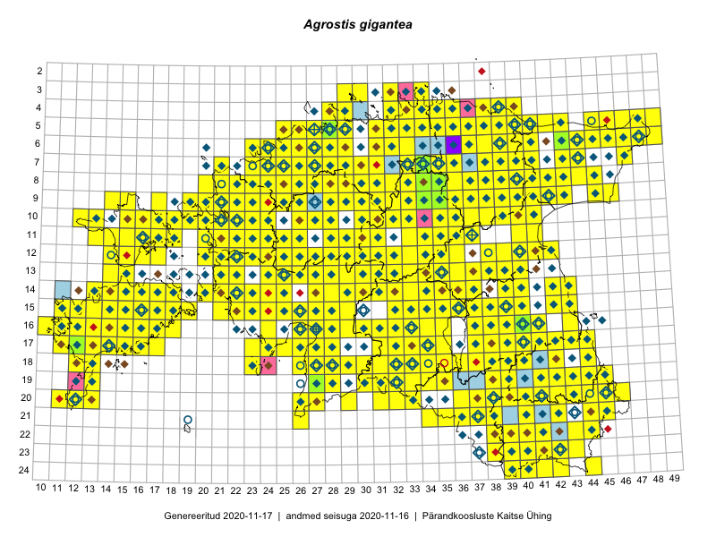

Agrostis gigantea — suur kastehein
Poaceae :: Agrostis gigantea Roth (1386); Agrostis gigantea var. repens (Laest.) Widén (57); Agrostis gigantea var. glaucescens Widén (21)

Kaart põhineb 2383 kirjel:
vaatlusi 1197
herbaareksemplare 267
PKÜ kirjeid1 628
ELFi kirjeid2 290
LVA kirjeid3 1
Taime kaasaegsed ja ajaloolised leiukohad asuvad 499 ruudus.
Tingmärgid ja leidudega ruutude arvud periooditi uues (u) ja 2005 andmestikus (v)
| █ | vahemik | u4 | v5 |
|---|---|---|---|
| █ | 2006–2020 | 443 | – |
| ◆/◇ | 1971–2005 | 399 | 370 |
| ○ | 1921–1970 | 66 | 4 |
| + | kuni 1920 | 3 | 0 |
| × | hävinud | – | 0 |
| ? | kaheldav | – | 0 |
| Ruut | Leidja(d) | Leiuaeg | Kirje |
|---|---|---|---|
| 16-40 | Thea Kull | 2020-09-21 | ruut/ala: Agrostis gigantea Roth |
| 19-39 | Toomas Kukk | 2020-09-12 | ruut/ala: Agrostis gigantea Roth |
| 19-39 | Peedu Saar | 2020-09-12 | PKÜ: 21029 |
| 19-38 | Ott Luuk | 2020-09-12 | PKÜ: 21164 |
| 15-16 | Mari Reitalu, Sirje Azarov | 2020-09-07 | ruut/ala: Agrostis gigantea Roth |
| 16-30 | Meeli Mesipuu, Ott Luuk | 2020-09-01 | PKÜ: 21328 |
| 14-22;15-22 | Meeli Mesipuu | 2020-08-30 | PKÜ: 21254 |
| 15-17 | Mari Reitalu, Sirje Azarov | 2020-08-27–2020-09-06 | ruut/ala: Agrostis gigantea Roth |
| 15-18 | Mari Reitalu, Sirje Azarov | 2020-08-27 | ruut/ala: Agrostis gigantea Roth |
| 14-15 | Mari Reitalu, Sirje Azarov | 2020-08-24 | ruut/ala: Agrostis gigantea Roth |
| 14-16 | Mari Reitalu, Sirje Azarov | 2020-08-19–2020-08-20 | ruut/ala: Agrostis gigantea Roth |
| 07-43 | Toomas Kukk, Ott Luuk, Kersti Tambets, Sten Mander, Kristine Fenske | 2020-08-18 | ruut/ala: Agrostis gigantea Roth |
| 05-42 | Toomas Kukk, Ott Luuk, Kersti Tambets, Sten Mander, Kristine Fenske | 2020-08-18 | ruut/ala: Agrostis gigantea Roth |
| 14-20 | Mari Reitalu, Sirje Azarov | 2020-08-11 | ruut/ala: Agrostis gigantea Roth |
| 16-17 | Mari Reitalu, Sirje Azarov | 2020-08-08–2020-08-29 | ruut/ala: Agrostis gigantea Roth |
| 15-42 | Peedu Saar | 2020-08-08 | ruut/ala: Agrostis gigantea Roth |
| 12-15 | Ott Luuk, Peedu Saar | 2020-08-07 | PKÜ: 20722 |
| 12-15 | Ott Luuk, Peedu Saar | 2020-08-07 | PKÜ: 20727 |
| 17-13 | Mari Reitalu, Triin Reitalu | 2020-08-07 | ruut/ala: Agrostis gigantea Roth |
| 24-42 | Toomas Kukk, Eerik Leibak | 2020-08-06 | ruut/ala: Agrostis gigantea Roth |
| 22-40 | Toomas Kukk, Eerik Leibak | 2020-08-06 | ruut/ala: Agrostis gigantea Roth |
| 14-39 | Peedu Saar | 2020-08-03 | ruut/ala: Agrostis gigantea Roth |
| 15-36 | Amaranta Põld, Art Villem Adojaan | 2020-07-29 | punkt: Agrostis gigantea Roth |
| 09-43 | Toomas Kukk | 2020-07-28 | ruut/ala: Agrostis gigantea Roth |
| 20-39 | Ilmar Uibopuu | 2020-07-25 | LVA: 1932089252 |
| 15-36 | Karl Hendrik Tamkivi | 2020-07-22 | punkt: Agrostis gigantea Roth |
| 09-26 | Ott Luuk | 2020-07-21–2020-07-23 | ruut/ala: Agrostis gigantea Roth |
| 15-14 | Mari Reitalu, Sirje Azarov | 2020-07-21 | ruut/ala: Agrostis gigantea Roth |
| 18-41 | Silvia Pihu | 2020-07-16 | ELF: 14838 |
| 19-42 | Silvia Pihu | 2020-07-16 | ELF: 1012 |
| 19-42 | Silvia Pihu | 2020-07-16 | ELF: 1015 |
| 06-28 | Toomas Kukk | 2020-07-12 | ruut/ala: Agrostis gigantea Roth |
| 17-14 | Peedu Saar, Toomas Kukk | 2020-07-03 | ruut/ala: Agrostis gigantea Roth |
| 19-12 | Toomas Kukk | 2020-07-02 | PKÜ: 20527 |
| 17-11 | Ott Luuk, Rein Kalamees | 2020-07-01 | PKÜ: 20215 |
| 17-11 | Ott Luuk, Rein Kalamees | 2020-07-01 | PKÜ: 20225 |
| 07-28 | Rein Kalamees | 2020-06-15 | PKÜ: 20752 |
| 04-32 | Peedu Saar, Ene Kook | 2020-06-11 | PKÜ: 20371 |
| 22-43 | Meeli Mesipuu | 2019-09-26 | punkt: Agrostis gigantea Roth |
| 16-13 | Mari Reitalu, Sirje Azarov | 2019-09-26 | ruut/ala: Agrostis gigantea Roth |
| 16-13;16-14 | Mari Reitalu, Sirje Azarov | 2019-09-26 | ELF: 80 |
| 16-13;16-14 | Mari Reitalu, Sirje Azarov | 2019-09-26 | ELF: 81 |
| 16-14 | Mari Reitalu, Sirje Azarov | 2019-09-26 | ELF: 83 |
| 16-14 | Mari Reitalu, Sirje Azarov | 2019-09-23 | ruut/ala: Agrostis gigantea Roth |
| 15-14;16-14 | Mari Reitalu, Sirje Azarov | 2019-09-23 | ELF: 74 |
| 10-22 | Toomas Kukk, Peedu Saar | 2019-09-19 | ruut/ala: Agrostis gigantea Roth |
| 11-21 | Toomas Kukk, Peedu Saar | 2019-09-19 | punkt: Agrostis gigantea Roth |
| 09-19 | Toomas Kukk, Peedu Saar | 2019-09-17 | ruut/ala: Agrostis gigantea Roth |
| 06-47 | Peedu Saar, Timo Luhamäe | 2019-09-12 | ruut/ala: Agrostis gigantea Roth |
| 05-47 | Peedu Saar, Timo Luhamäe | 2019-09-12 | ruut/ala: Agrostis gigantea Roth |
| 05-46 | Thea Kull, Toomas Kukk | 2019-09-11 | ruut/ala: Agrostis gigantea Roth |
| 10-39 | Toomas Kukk, Thea Kull | 2019-09-10 | ruut/ala: Agrostis gigantea Roth |
| 10-40 | Toomas Kukk, Thea Kull | 2019-09-10 | ruut/ala: Agrostis gigantea Roth |
| 09-40 | Toomas Kukk, Thea Kull | 2019-09-10 | punkt: Agrostis gigantea Roth |
| 08-41 | Peedu Saar, Timo Luhamäe | 2019-09-10 | ruut/ala: Agrostis gigantea Roth |
| 08-24 | Peedu Saar, Ott Luuk | 2019-09-05 | ruut/ala: Agrostis gigantea Roth |
| 15-13 | Sirje Azarov, Mari Reitalu | 2019-08-31 | ELF: 9 |
| 15-13 | Mari Reitalu, Sirje Azarov | 2019-08-31 | ruut/ala: Agrostis gigantea Roth |
| 15-13 | Mari Reitalu, Sirje Azarov | 2019-08-31 | ELF: 20989 |
| 11-25 | Toomas Kukk, Peedu Saar | 2019-08-30 | ruut/ala: Agrostis gigantea Roth |
| 15-28 | Toomas Kukk, Peedu Saar | 2019-08-29 | ruut/ala: Agrostis gigantea Roth |
| 15-27 | Peedu Saar, Toomas Kukk | 2019-08-29 | ruut/ala: Agrostis gigantea Roth |
| 13-31 | Ott Luuk, Eerik Leibak | 2019-08-29 | ruut/ala: Agrostis gigantea Roth |
| 12-31 | Ott Luuk, Eerik Leibak | 2019-08-29 | ruut/ala: Agrostis gigantea Roth |
| 16-32 | Mari Reitalu, Thea Kull, Martin Tikk | 2019-08-29 | ruut/ala: Agrostis gigantea Roth |
| 16-31 | Toomas Kukk, Peedu Saar, Martin Tikk | 2019-08-28 | ruut/ala: Agrostis gigantea Roth |
| 14-30 | Ott Luuk, Eerik Leibak | 2019-08-28 | ruut/ala: Agrostis gigantea Roth |
| 13-30 | Mari Reitalu, Thea Kull | 2019-08-28 | ruut/ala: Agrostis gigantea Roth |
| 14-29 | Mari Reitalu, Thea Kull | 2019-08-28 | ruut/ala: Agrostis gigantea Roth |
| 17-33 | Toomas Kukk, Peedu Saar, Martin Tikk | 2019-08-27 | ruut/ala: Agrostis gigantea Roth |
| 19-41 | Thea Kull, Mari Reitalu | 2019-08-27 | ruut/ala: Agrostis gigantea Roth |
| 17-32 | Peedu Saar, Martin Tikk, Toomas Kukk | 2019-08-27 | ruut/ala: Agrostis gigantea Roth |
| 12-35 | Ott Luuk, Eerik Leibak | 2019-08-27 | ruut/ala: Agrostis gigantea Roth |
| 16-33 | Mari Reitalu, Thea Kull | 2019-08-27 | ruut/ala: Agrostis gigantea Roth |
| 16-32 | Mari Reitalu, Thea Kull | 2019-08-27 | ruut/ala: Agrostis gigantea Roth |
| 10-22 | Tõnu Ploompuu | 2019-08-21 | ELF: 24796 |
| 17-13 | Mari Reitalu, Sirje Azarov | 2019-08-19 | ELF: 23 |
| 16-13 | Mari Reitalu, Sirje Azarov | 2019-08-15 | ELF: 21 |
| 08-39 | Rein Kalamees, Toomas Kukk | 2019-08-08 | ruut/ala: Agrostis gigantea Roth |
| 09-39 | Rein Kalamees, Toomas Kukk | 2019-08-08 | ruut/ala: Agrostis gigantea Roth |
| 07-34 | Toomas Kukk, Rein Kalamees, Kaur Maran | 2019-08-07 | ruut/ala: Agrostis gigantea Roth |
| 19-41 | Thea Kull | 2019-08-06 | ruut/ala: Agrostis gigantea Roth |
| 03-34 | Rein Kalamees, Toomas Kukk | 2019-08-06 | ruut/ala: Agrostis gigantea Roth |
| 16-12 | Mari Reitalu, Sirje Azarov | 2019-08-06 | ELF: 60 |
| 16-12 | Sirje Azarov, Mari Reitalu | 2019-08-05 | ELF: 61 |
| 04-32 | Rein Kalamees, Toomas Kukk | 2019-08-05 | ruut/ala: Agrostis gigantea Roth |
| 06-31 | Peedu Saar, Timo Luhamäe | 2019-08-05 | ruut/ala: Agrostis gigantea Roth |
| 07-31 | Peedu Saar, Timo Luhamäe | 2019-08-05 | ruut/ala: Agrostis gigantea Roth |
| 07-36 | Ott Luuk, Jaak-Albert Metsoja | 2019-08-05 | ruut/ala: Agrostis gigantea Roth |
| 23-38 | Toomas Kukk, Peedu Saar | 2019-08-01 | punkt: Agrostis gigantea Roth |
| 22-39 | Toomas Kukk, Peedu Saar | 2019-08-01 | ruut/ala: Agrostis gigantea Roth |
| 21-44 | Toomas Kukk, Peedu Saar | 2019-07-31 | ruut/ala: Agrostis gigantea Roth |
| 24-42 | Peedu Saar, Toomas Kukk | 2019-07-31 | ruut/ala: Agrostis gigantea Roth |
| 06-28 | Toomas Kukk | 2019-07-29 | ruut/ala: Agrostis gigantea Roth |
| 17-39 | Thea Kull | 2019-07-23 | ruut/ala: Agrostis gigantea Roth |
| 17-38 | Meeli Mesipuu | 2019-07-23 | ruut/ala: Agrostis gigantea Roth |
| 16-12 | Mari Reitalu | 2019-07-23 | ELF: 734 |
| 11-22 | Tõnu Ploompuu, Eliko Kõiv | 2019-07-21 | ELF: 231 |
| 09-37 | Mari Reitalu | 2019-07-20 | ruut/ala: Agrostis gigantea Roth |
| 18-36 | Ott Luuk, Peedu Saar | 2019-07-16 | ruut/ala: Agrostis gigantea Roth |
| 18-37 | Peedu Saar, Ott Luuk | 2019-07-15 | ruut/ala: Agrostis gigantea Roth |
| 17-38 | Ott Luuk, Peedu Saar | 2019-07-15 | ruut/ala: Agrostis gigantea Roth |
| 17-12 | Mari Reitalu | 2019-07-14 | ELF: 24782 |
| 03-32 | Rein Kalamees | 2019-07-13 | ruut/ala: Agrostis gigantea Roth |
| 23-41 | Toomas Kukk, Indrek Tammekänd | 2019-07-12 | ruut/ala: Agrostis gigantea Roth |
| 22-44 | Ott Luuk, Tiit Hallikma | 2019-07-12 | ruut/ala: Agrostis gigantea Roth |
| 22-41 | Toomas Kukk, Indrek Tammekänd | 2019-07-11 | ruut/ala: Agrostis gigantea Roth |
| 24-44 | Ott Luuk, Tiit Hallikma | 2019-07-11 | ruut/ala: Agrostis gigantea Roth |
| 19-13 | Mari Reitalu, Sirje Azarov | 2019-07-11 | ruut/ala: Agrostis gigantea Roth |
| 19-13 | Mari Reitalu, Sirje Azarov | 2019-07-11 | ELF: 16766 |
| 21-40 | Toomas Kukk, Indrek Tammekänd | 2019-07-10 | ruut/ala: Agrostis gigantea Roth |
| 21-42 | Toomas Kukk, Indrek Tammekänd | 2019-07-10 | ruut/ala: Agrostis gigantea Roth |
| 20-46 | Ott Luuk, Tiit Hallikma | 2019-07-10 | ruut/ala: Agrostis gigantea Roth |
| 20-45 | Ott Luuk, Tiit Hallikma | 2019-07-10 | ruut/ala: Agrostis gigantea Roth |
| 20-41 | Toomas Kukk, Indrek Tammekänd | 2019-07-09 | ruut/ala: Agrostis gigantea Roth |
| 20-36 | Peedu Saar, Timo Luhamäe | 2019-07-09 | ruut/ala: Agrostis gigantea Roth |
| 20-44 | Ott Luuk, Tiit Hallikma | 2019-07-09 | ruut/ala: Agrostis gigantea Roth |
| 15-15 | Toomas Kukk, Eerik Leibak | 2019-07-05 | ruut/ala: Agrostis gigantea Roth |
| 11-13 | Toomas Kukk | 2019-07-04 | ruut/ala: Agrostis gigantea Roth |
| 10-13 | Toomas Kukk | 2019-07-04 | ruut/ala: Agrostis gigantea Roth |
| 12-41 | Peedu Saar, Ott Luuk | 2019-07-04 | ruut/ala: Agrostis gigantea Roth |
| 15-40 | Ott Luuk, Peedu Saar | 2019-07-04 | punkt: Agrostis gigantea Roth |
| 20-12 | Sirje Azarov, Mari Reitalu | 2019-07-03 | ELF: 13383 |
| 20-12 | Sirje Azarov, Mari Reitalu | 2019-07-03 | ELF: 24780 |
| 11-15 | Toomas Kukk | 2019-07-02 | ruut/ala: Agrostis gigantea Roth |
| 08-36;09-36 | Jaanus Paal | 2019-07-02 | ELF: 808 |
| 05-28 | Meeli Mesipuu | 2019-06-30 | ruut/ala: Agrostis gigantea Roth |
| 05-28 | Meeli Mesipuu | 2019-06-30 | ruut/ala: Agrostis gigantea Roth |
| 24-39 | Thea Kull | 2019-06-29 | punkt: Agrostis gigantea Roth |
| 15-12 | Mari Reitalu, Triin Reitalu | 2019-06-27 | ruut/ala: Agrostis gigantea Roth |
| 16-27 | Indrek Tammekänd | 2019-06-27 | ruut/ala: Agrostis gigantea Roth |
| 05-28 | Meeli Mesipuu | 2019-06-26 | ruut/ala: Agrostis gigantea Roth |
| 05-28 | Meeli Mesipuu | 2019-06-26 | ruut/ala: Agrostis gigantea Roth |
| 05-28 | Meeli Mesipuu | 2019-06-26 | TAA0151204: Agrostis gigantea Roth |
| 05-28 | Thea Kull | 2019-06-13 | ruut/ala: Agrostis gigantea Roth |
| 16-28 | Indrek Tammekänd | 2019-05-29–2019-08-23 | ruut/ala: Agrostis gigantea Roth |
| 10-26 | Toomas Kukk, Peedu Saar | 2018-09-20 | punkt: Agrostis gigantea Roth |
| 14-20 | Toomas Kukk | 2018-09-19 | ruut/ala: Agrostis gigantea Roth |
| 14-20 | Peedu Saar | 2018-09-19 | ruut/ala: Agrostis gigantea Roth |
| 15-21 | Toomas Kukk | 2018-09-18 | ruut/ala: Agrostis gigantea Roth |
| 06-39 | Peedu Saar, Toomas Kukk | 2018-09-03 | punkt: Agrostis gigantea Roth |
| 05-41 | Peedu Saar, Toomas Kukk | 2018-09-03 | ruut/ala: Agrostis gigantea Roth |
| 16-17 | Mari Reitalu, Sirje Azarov | 2018-08-22 | ELF: 103 |
| 08-21 | Tõnu Ploompuu, Priit Kukk | 2018-08-21 | ELF: 6083 |
| 13-21 | Indrek Tammekänd | 2018-08-21 | ELF: 24583 |
| 14-31 | Toomas Kukk | 2018-08-18 | ruut/ala: Agrostis gigantea Roth |
| 07-47 | Meeli Mesipuu | 2018-08-18 | ruut/ala: Agrostis gigantea Roth |
| 12-25 | Toomas Kukk, Ott Luuk, Peedu Saar | 2018-08-17 | ruut/ala: Agrostis gigantea Roth |
| 12-22 | Peedu Saar, Toomas Kukk, Ott Luuk, Kersti Tambets, Sten Mander | 2018-08-17 | ruut/ala: Agrostis gigantea Roth |
| 10-22 | Tõnu Ploompuu | 2018-08-16 | ELF: 280 |
| 11-25 | Peedu Saar, Toomas Kukk, Ott Luuk, Kersti Tambets, Sten Mander | 2018-08-16 | ruut/ala: Agrostis gigantea Roth |
| 11-26 | Peedu Saar, Toomas Kukk, Ott Luuk, Kersti Tambets, Sten Mander | 2018-08-16 | ruut/ala: Agrostis gigantea Roth |
| 12-31 | Ott Luuk, Toomas Kukk, Peedu Saar, Sten Mander, Kersti Tambets | 2018-08-16 | ruut/ala: Agrostis gigantea Roth |
| 19-28 | Peedu Saar, Polina Degtjarenko | 2018-08-14 | ruut/ala: Agrostis gigantea Roth |
| 11-21 | Tõnu Ploompuu, Priit Kukk | 2018-08-13 | ruut/ala: Agrostis gigantea Roth |
| 17-12 | Triin Reitalu, Mari Reitalu | 2018-08-11 | punkt: Agrostis gigantea Roth |
| 17-12 | Triin Reitalu, Mari Reitalu | 2018-08-11 | punkt: Agrostis gigantea Roth |
| 16-12 | Triin Reitalu, Mari Reitalu | 2018-08-09 | punkt: Agrostis gigantea Roth |
| 17-41 | Toomas Kukk, Tiit Hallikma | 2018-08-09 | ruut/ala: Agrostis gigantea Roth |
| 19-43 | Toomas Kukk, Tiit Hallikma | 2018-08-09 | punkt: Agrostis gigantea Roth |
| 17-12 | Triin Reitalu, Mari Lepik | 2018-08-08 | punkt: Agrostis gigantea Roth |
| 03-34 | Peedu Saar, Toomas Kukk | 2018-08-08 | punkt: Agrostis gigantea Roth |
| 07-28 | Peedu Saar, Toomas Kukk | 2018-08-07 | ruut/ala: Agrostis gigantea Roth |
| 05-31 | Peedu Saar, Toomas Kukk | 2018-08-07 | ruut/ala: Agrostis gigantea Roth |
| 17-12 | Triin Reitalu, Mari Lepik | 2018-08-06 | punkt: Agrostis gigantea Roth |
| 17-12 | Triin Reitalu, Mari Lepik | 2018-08-06 | punkt: Agrostis gigantea Roth |
| 16-14 | Mari Reitalu, Sirje Azarov | 2018-08-06 | ELF: 92 |
| 10-22 | Tõnu Ploompuu | 2018-08-05 | ELF: 24593 |
| 16-12 | Triin Reitalu, Mari Reitalu | 2018-08-03 | punkt: Agrostis gigantea Roth |
| 16-12 | Triin Reitalu, Mari Reitalu | 2018-08-03 | punkt: Agrostis gigantea Roth |
| 08-28 | Tiina Elvisto, Riima Niidas | 2018-08-01 | punkt: Agrostis gigantea Roth |
| 18-33 | Peedu Saar | 2018-08-01 | ruut/ala: Agrostis gigantea Roth |
| 20-12 | Mari Reitalu, Sirje Azarov | 2018-07-23 | ELF: 24038 |
| 09-45 | Peedu Saar | 2018-07-19 | ruut/ala: Agrostis gigantea Roth |
| 23-43 | Toomas Kukk, Eerik Leibak | 2018-07-18 | ruut/ala: Agrostis gigantea Roth |
| 09-43 | Toomas Kukk | 2018-07-17 | ruut/ala: Agrostis gigantea Roth |
| 16-12 | Triin Reitalu, Ansis Blaus | 2018-07-13 | punkt: Agrostis gigantea Roth |
| 17-12;17-13 | Mari Reitalu, Sirje Azarov | 2018-07-12 | ELF: 2473 |
| 11-18 | Toomas Kukk, Meeli Mesipuu | 2018-07-11 | punkt: Agrostis gigantea Roth |
| 10-18 | Toomas Kukk, Meeli Mesipuu | 2018-07-11 | ruut/ala: Agrostis gigantea Roth |
| 17-12 | Mari Reitalu, Sirje Azarov | 2018-07-10 | ELF: 16272 |
| 20-45 | Toomas Kukk, Eerik Leibak | 2018-07-06 | ruut/ala: Agrostis gigantea Roth |
| 06-23 | Peedu Saar | 2018-07-05 | ruut/ala: Agrostis gigantea Roth |
| 11-37 | Peedu Saar, Toomas Kukk, Ilmar Uibopuu | 2018-06-30 | ruut/ala: Agrostis gigantea Roth |
| 15-19 | Peedu Saar, Ott Luuk, Toomas Kukk, Ilmar Uibopuu | 2018-06-28 | ruut/ala: Agrostis gigantea Roth |
| 17-12 | Peedu Saar | 2018-06-28 | TAA0146909: Agrostis gigantea Roth |
| 07-37 | Alar Soppe | 2018-06-26 | ELF: 750 |
| 14-42 | Toomas Kukk, Ilmar Uibopuu | 2018-06-17 | punkt: Agrostis gigantea Roth |
| 16-24 | Indrek Tammekänd | 2017-10-11 | ruut/ala: Agrostis gigantea Roth |
| 03-29 | Toomas Kukk | 2017-09-29 | ruut/ala: Agrostis gigantea Roth |
| 04-38 | Peedu Saar, Toomas Kukk | 2017-09-28 | ruut/ala: Agrostis gigantea Roth |
| 10-37 | Peedu Saar, Toomas Kukk | 2017-09-27 | ruut/ala: Agrostis gigantea Roth |
| 20-37 | Ott Luuk | 2017-09-17 | ruut/ala: Agrostis gigantea Roth |
| 09-15 | Peedu Saar, Ott Luuk | 2017-09-15 | ruut/ala: Agrostis gigantea Roth |
| 11-29 | Ott Luuk, Peedu Saar | 2017-09-15 | punkt: Agrostis gigantea Roth |
| 10-15 | Ott Luuk, Peedu Saar | 2017-09-14 | ruut/ala: Agrostis gigantea Roth |
| 12-14 | Toomas Kukk, Indrek Tammekänd | 2017-09-13 | ruut/ala: Agrostis gigantea Roth |
| 11-16 | Ott Luuk, Peedu Saar | 2017-09-13 | ruut/ala: Agrostis gigantea Roth |
| 12-17 | Toomas Kukk, Indrek Tammekänd | 2017-09-11 | ruut/ala: Agrostis gigantea Roth |
| 11-17 | Toomas Kukk, Indrek Tammekänd | 2017-09-11 | ruut/ala: Agrostis gigantea Roth |
| 10-16 | Peedu Saar, Ott Luuk | 2017-09-11 | ruut/ala: Agrostis gigantea Roth |
| 17-26 | Toomas Kukk, Ott Luuk, Kersti Tambets, Timo Luhamäe, Sten Mander | 2017-08-30 | ruut/ala: Agrostis gigantea Roth |
| 18-31 | Toomas Kukk, Ott Luuk, Kersti Tambets, Timo Luhamäe, Sten Mander | 2017-08-29 | ruut/ala: Agrostis gigantea Roth |
| 17-31 | Ott Luuk, Toomas Kukk, Sten Mander, Kersti Tambets, Timo Luhamäe | 2017-08-29 | ruut/ala: Agrostis gigantea Roth |
| 11-40 | Peedu Saar, Ott Luuk | 2017-08-23 | ruut/ala: Agrostis gigantea Roth |
| 14-43 | Peedu Saar, Ott Luuk | 2017-08-21 | ruut/ala: Agrostis gigantea Roth |
| 14-35 | Peedu Saar | 2017-08-15–2017-09-16 | ruut/ala: Agrostis gigantea Roth |
| 14-36 | Ott Luuk | 2017-08-15 | ruut/ala: Agrostis gigantea Roth |
| 16-28 | Peedu Saar, Timo Luhamäe | 2017-08-11 | ruut/ala: Agrostis gigantea Roth |
| 15-28 | Peedu Saar, Timo Luhamäe | 2017-08-11 | ruut/ala: Agrostis gigantea Roth |
| 14-28 | Ott Luuk, Indrek Tammekänd | 2017-08-11 | ruut/ala: Agrostis gigantea Roth |
| 14-27 | Ott Luuk, Indrek Tammekänd | 2017-08-11 | ruut/ala: Agrostis gigantea Roth |
| 14-29 | Ilmar Uibopuu, Toomas Kukk | 2017-08-11 | ruut/ala: Agrostis gigantea Roth |
| 15-29 | Ilmar Uibopuu, Toomas Kukk | 2017-08-11 | ruut/ala: Agrostis gigantea Roth |
| 05-27 | Peedu Saar, Timo Luhamäe | 2017-08-10 | ruut/ala: Agrostis gigantea Roth |
| 07-25 | Mari Reitalu, Indrek Tammekänd | 2017-08-10 | ruut/ala: Agrostis gigantea Roth |
| 07-23 | Mari Reitalu, Indrek Tammekänd | 2017-08-10 | ruut/ala: Agrostis gigantea Roth |
| 11-21 | Ilmar Uibopuu, Ott Luuk | 2017-08-10 | ruut/ala: Agrostis gigantea Roth |
| 11-24 | Eerik Leibak, Toomas Kukk | 2017-08-10 | ruut/ala: Agrostis gigantea Roth |
| 09-29 | Toomas Kukk, Ilmar Uibopuu, Kadri Kuusksalu | 2017-08-09 | ruut/ala: Agrostis gigantea Roth |
| 08-30 | Thea Kull, Ott Luuk | 2017-08-09 | ruut/ala: Agrostis gigantea Roth |
| 12-24 | Peedu Saar, Timo Luhamäe | 2017-08-09 | ruut/ala: Agrostis gigantea Roth |
| 12-25 | Peedu Saar, Timo Luhamäe | 2017-08-09 | ruut/ala: Agrostis gigantea Roth |
| 08-29 | Ott Luuk, Thea Kull | 2017-08-09 | ruut/ala: Agrostis gigantea Roth |
| 12-27 | Mari Reitalu, Eerik Leibak | 2017-08-09 | ruut/ala: Agrostis gigantea Roth |
| 12-26 | Mari Reitalu, Eerik Leibak | 2017-08-09 | ruut/ala: Agrostis gigantea Roth |
| 12-29 | Indrek Tammekänd | 2017-08-09 | ruut/ala: Agrostis gigantea Roth |
| 09-28 | Ilmar Uibopuu, Kadri Kuusksalu, Toomas Kukk, Ott Luuk | 2017-08-09 | ruut/ala: Agrostis gigantea Roth |
| 08-26 | Toomas Kukk, Ilmar Uibopuu, Kadri Kuusksalu | 2017-08-08 | ruut/ala: Agrostis gigantea Roth |
| 10-28 | Thea Kull, Ott Luuk | 2017-08-08 | ruut/ala: Agrostis gigantea Roth |
| 11-13 | Rein Kalamees | 2017-08-08 | ruut/ala: Agrostis gigantea Roth |
| 07-27 | Peedu Saar, Timo Luhamäe | 2017-08-08 | ruut/ala: Agrostis gigantea Roth |
| 11-28 | Ott Luuk, Thea Kull | 2017-08-08 | ruut/ala: Agrostis gigantea Roth |
| 08-27 | Mari Reitalu, Eerik Leibak | 2017-08-08 | ruut/ala: Agrostis gigantea Roth |
| 08-28 | Mari Reitalu, Eerik Leibak | 2017-08-08 | ruut/ala: Agrostis gigantea Roth |
| 13-37 | Toomas Kukk, Ilmar Uibopuu | 2017-08-07 | ruut/ala: Agrostis gigantea Roth |
| 13-33 | Toomas Kukk, Ilmar Uibopuu | 2017-08-07 | ruut/ala: Agrostis gigantea Roth |
| 12-33 | Thea Kull, Ott Luuk | 2017-08-07 | ruut/ala: Agrostis gigantea Roth |
| 14-34 | Peedu Saar, Timo Luhamäe | 2017-08-07 | ruut/ala: Agrostis gigantea Roth |
| 13-34 | Peedu Saar, Timo Luhamäe | 2017-08-07 | ruut/ala: Agrostis gigantea Roth |
| 12-32 | Ott Luuk, Thea Kull | 2017-08-07 | ruut/ala: Agrostis gigantea Roth |
| 14-20 | Meeli Mesipuu | 2017-08-07 | ruut/ala: Agrostis gigantea Roth |
| 07-35 | Toomas Kukk | 2017-08-03 | ruut/ala: Agrostis gigantea Roth |
| 11-34 | Thea Kull, Ott Luuk | 2017-08-03 | ruut/ala: Agrostis gigantea Roth |
| 12-34 | Ott Luuk, Thea Kull | 2017-08-03 | ruut/ala: Agrostis gigantea Roth |
| 16-39 | Thea Kull, Ott Luuk | 2017-08-01 | ruut/ala: Agrostis gigantea Roth |
| 16-37 | Ott Luuk, Thea Kull | 2017-08-01 | ruut/ala: Agrostis gigantea Roth |
| 20-39 | Ilmar Uibopuu | 2017-07-31 | ruut/ala: Agrostis gigantea Roth |
| 07-24 | Toomas Kukk, Ilmar Uibopuu | 2017-07-30 | ruut/ala: Agrostis gigantea Roth |
| 08-22 | Toomas Kukk, Ilmar Uibopuu | 2017-07-29 | ruut/ala: Agrostis gigantea Roth |
| 07-21 | Toomas Kukk, Ilmar Uibopuu | 2017-07-28 | ruut/ala: Agrostis gigantea Roth |
| 23-39 | Peedu Saar, Ott Luuk | 2017-07-27 | ruut/ala: Agrostis gigantea Roth |
| 22-39 | Ott Luuk, Peedu Saar | 2017-07-27 | ruut/ala: Agrostis gigantea Roth |
| 06-23 | Toomas Kukk, Ilmar Uibopuu, Kadri Kuusksalu | 2017-07-26 | ruut/ala: Agrostis gigantea Roth |
| 14-39 | Peedu Saar | 2017-07-26 | ruut/ala: Agrostis gigantea Roth |
| 20-38 | Ott Luuk, Peedu Saar | 2017-07-25 | ruut/ala: Agrostis gigantea Roth |
| 12-42 | Peedu Saar | 2017-07-24 | ruut/ala: Agrostis gigantea Roth |
| 16-40 | Meeli Mesipuu | 2017-07-22–2017-07-30 | ruut/ala: Agrostis gigantea Roth |
| 06-48 | Toomas Kukk | 2017-07-21 | ruut/ala: Agrostis gigantea Roth |
| 06-49 | Toomas Kukk | 2017-07-21 | ruut/ala: Agrostis gigantea Roth |
| 06-31 | Peedu Saar, Ott Luuk | 2017-07-21 | ruut/ala: Agrostis gigantea Roth |
| 06-33 | Ott Luuk, Peedu Saar | 2017-07-21 | ruut/ala: Agrostis gigantea Roth |
| 19-38 | Triin Reitalu, Ansis Blaus | 2017-07-20 | punkt: Agrostis gigantea Roth |
| 17-23 | Indrek Tammekänd, Eike Tammekänd | 2017-07-20 | ruut/ala: Agrostis gigantea Roth |
| 22-41 | Triin Reitalu, Ansis Blaus | 2017-07-18 | punkt: Agrostis gigantea Roth |
| 20-46 | Meeli Mesipuu | 2017-07-18 | ruut/ala: Agrostis gigantea Roth |
| 16-40 | Peedu Saar | 2017-07-10 | TAA0141332: Agrostis gigantea Roth |
| 18-29 | Indrek Tammekänd | 2017-07-05 | ruut/ala: Agrostis gigantea Roth |
| 18-12 | Toomas Kukk, Meeli Mesipuu, Mari Reitalu | 2016-10-07 | ruut/ala: Agrostis gigantea Roth |
| 14-13 | Toomas Kukk, Meeli Mesipuu, Mari Reitalu | 2016-10-06 | ruut/ala: Agrostis gigantea Roth |
| 19-30 | Peedu Saar, Ott Luuk | 2016-10-06 | ruut/ala: Agrostis gigantea Roth |
| 19-31 | Ott Luuk, Peedu Saar | 2016-10-06 | ruut/ala: Agrostis gigantea Roth |
| 15-13 | Meeli Mesipuu, Toomas Kukk, Mari Reitalu | 2016-10-06 | ruut/ala: Agrostis gigantea Roth |
| 16-13 | Toomas Kukk, Meeli Mesipuu | 2016-10-05 | ruut/ala: Agrostis gigantea Roth |
| 08-32 | Ott Luuk, Peedu Saar | 2016-09-28 | ruut/ala: Agrostis gigantea Roth |
| 21-34 | Peedu Saar, Ott Luuk | 2016-09-22 | ruut/ala: Agrostis gigantea Roth |
| 21-35 | Ott Luuk, Peedu Saar | 2016-09-22 | ruut/ala: Agrostis gigantea Roth |
| 18-23 | Ott Luuk, Peedu Saar | 2016-09-21 | ruut/ala: Agrostis gigantea Roth |
| 20-32 | Meeli Mesipuu, Ott Luuk | 2016-09-18 | ruut/ala: Agrostis gigantea Roth |
| 09-32 | Toomas Kukk, Peedu Saar | 2016-09-16 | ruut/ala: Agrostis gigantea Roth |
| 08-33 | Peedu Saar, Toomas Kukk | 2016-09-15 | ruut/ala: Agrostis gigantea Roth |
| 06-33 | Peedu Saar, Toomas Kukk | 2016-09-14 | ruut/ala: Agrostis gigantea Roth |
| 05-43 | Peedu Saar, Toomas Kukk | 2016-09-13 | ruut/ala: Agrostis gigantea Roth |
| 07-33 | Peedu Saar, Toomas Kukk | 2016-09-13 | ruut/ala: Agrostis gigantea Roth |
| 07-30 | Toomas Kukk, Peedu Saar | 2016-09-09 | ruut/ala: Agrostis gigantea Roth |
| 08-30 | Peedu Saar, Toomas Kukk | 2016-09-09 | ruut/ala: Agrostis gigantea Roth |
| 06-32 | Toomas Kukk, Peedu Saar | 2016-09-08 | ruut/ala: Agrostis gigantea Roth |
| 09-31 | Peedu Saar, Ott Luuk | 2016-09-07 | ruut/ala: Agrostis gigantea Roth |
| 08-28 | Peedu Saar, Ott Luuk | 2016-09-07 | ruut/ala: Agrostis gigantea Roth |
| 09-30 | Ott Luuk, Peedu Saar | 2016-09-06–2016-09-07 | ruut/ala: Agrostis gigantea Roth |
| 05-38 | Thea Kull, Toomas Kukk | 2016-09-06 | ruut/ala: Agrostis gigantea Roth |
| 04-39 | Thea Kull, Toomas Kukk | 2016-09-05 | ruut/ala: Agrostis gigantea Roth |
| 05-38 | Thea Kull, Toomas Kukk | 2016-09-05 | ruut/ala: Agrostis gigantea Roth |
| 05-32 | Toomas Kukk, Sander Laherand | 2016-08-31 | ruut/ala: Agrostis gigantea Roth |
| 06-29 | Sander Laherand, Toomas Kukk | 2016-08-29 | ruut/ala: Agrostis gigantea Roth |
| 14-17 | Ott Luuk, Peedu Saar | 2016-08-29 | ruut/ala: Agrostis gigantea Roth |
| 15-18 | Mari Reitalu, Hannes Pehlak | 2016-08-26 | ruut/ala: Agrostis gigantea Roth |
| 17-44 | Peedu Saar | 2016-08-24 | ruut/ala: Agrostis gigantea Roth |
| 22-44 | Peedu Saar, Karin Kikas | 2016-08-19 | ruut/ala: Agrostis gigantea Roth |
| 15-17 | Peedu Saar, Toomas Kukk | 2016-08-13 | ruut/ala: Agrostis gigantea Roth |
| 15-16 | Meeli Mesipuu, Maret Gerz | 2016-08-13 | ruut/ala: Agrostis gigantea Roth |
| 17-17 | Toomas Kukk, Meeli Mesipuu | 2016-08-12 | ruut/ala: Agrostis gigantea Roth |
| 12-16 | Sander Laherand, Thea Kull, Nele Jõessar | 2016-08-11 | ruut/ala: Agrostis gigantea Roth |
| 17-15 | Meeli Mesipuu, Toomas Kukk, Johannes Kõdar | 2016-08-11 | ruut/ala: Agrostis gigantea Roth |
| 13-15 | Maret Gerz, Peedu Saar | 2016-08-11 | ruut/ala: Agrostis gigantea Roth |
| 12-15 | Toomas Kukk, Meeli Mesipuu | 2016-08-10 | ruut/ala: Agrostis gigantea Roth |
| 12-14 | Toomas Kukk, Meeli Mesipuu | 2016-08-10 | ruut/ala: Agrostis gigantea Roth |
| 11-13 | Thea Kull, Peedu Saar | 2016-08-10 | ruut/ala: Agrostis gigantea Roth |
| 10-12 | Sander Laherand, Maret Gerz, Nele Jõessar | 2016-08-10 | ruut/ala: Agrostis gigantea Roth |
| 06-47 | Ott Luuk, Kersti Tambets, Janika Sammasto, Ülle Jõgar, Sten Mander | 2016-08-10 | ruut/ala: Agrostis gigantea Roth |
| 10-13 | Maret Gerz, Sander Laherand | 2016-08-10 | ruut/ala: Agrostis gigantea Roth |
| 14-18 | Mari Reitalu, Sirje Azarov | 2016-08-09–2016-08-10 | ruut/ala: Agrostis gigantea Roth |
| 11-15 | Thea Kull, Peedu Saar | 2016-08-09 | ruut/ala: Agrostis gigantea Roth |
| 11-14 | Peedu Saar, Thea Kull | 2016-08-09 | ruut/ala: Agrostis gigantea Roth |
| 09-39 | Ott Luuk, Eerik Leibak | 2016-08-09 | ruut/ala: Agrostis gigantea Roth |
| 10-16 | Meeli Mesipuu, Maret Gerz | 2016-08-09 | ruut/ala: Agrostis gigantea Roth |
| 09-14 | Meeli Mesipuu, Maret Gerz | 2016-08-09 | ruut/ala: Agrostis gigantea Roth |
| 14-15 | Mari Reitalu, Sirje Azarov | 2016-08-09 | ruut/ala: Agrostis gigantea Roth |
| 11-16 | Toomas Kukk, Thea Kull | 2016-08-08 | ruut/ala: Agrostis gigantea Roth |
| 10-38 | Ott Luuk, Eerik Leibak | 2016-08-08 | ruut/ala: Agrostis gigantea Roth |
| 09-38 | Ott Luuk, Eerik Leibak | 2016-08-08 | ruut/ala: Agrostis gigantea Roth |
| 16-18 | Mari Reitalu, Sirje Azarov | 2016-08-08 | ruut/ala: Agrostis gigantea Roth |
| 20-12 | Mari Reitalu, Sirje Azarov | 2016-08-08 | ruut/ala: Agrostis gigantea Roth |
| 20-13 | Mari Reitalu, Sirje Azarov | 2016-08-08 | ruut/ala: Agrostis gigantea Roth |
| 11-17 | Maret Gerz, Meeli Mesipuu | 2016-08-08 | ruut/ala: Agrostis gigantea Roth |
| 20-43 | Peedu Saar, Thea Kull | 2016-08-05 | ruut/ala: Agrostis gigantea Roth |
| 09-42 | Ott Luuk, Eerik Leibak | 2016-08-05 | ruut/ala: Agrostis gigantea Roth |
| 09-41 | Ott Luuk, Eerik Leibak | 2016-08-05 | ruut/ala: Agrostis gigantea Roth |
| 22-43 | Peedu Saar, Thea Kull | 2016-08-04 | ruut/ala: Agrostis gigantea Roth |
| 10-41 | Ott Luuk, Eerik Leibak | 2016-08-04 | ruut/ala: Agrostis gigantea Roth |
| 10-39 | Ott Luuk, Eerik Leibak | 2016-08-03 | ruut/ala: Agrostis gigantea Roth |
| 10-40 | Ott Luuk, Eerik Leibak | 2016-08-03 | ruut/ala: Agrostis gigantea Roth |
| 17-12 | Mari Reitalu | 2016-08-02 | punkt: Agrostis gigantea Roth |
| 18-13 | Mari Reitalu, Sirje Azarov | 2016-07-31 | ruut/ala: Agrostis gigantea Roth |
| 19-13 | Mari Reitalu, Sirje Azarov | 2016-07-31 | ruut/ala: Agrostis gigantea Roth |
| 08-40 | Toomas Kukk, Tiit Hallikma | 2016-07-29 | ruut/ala: Agrostis gigantea Roth |
| 07-40 | Toomas Kukk, Tiit Hallikma | 2016-07-29 | ruut/ala: Agrostis gigantea Roth |
| 08-42 | Peedu Saar, Timo Luhamäe | 2016-07-29 | ruut/ala: Agrostis gigantea Roth |
| 08-41 | Peedu Saar, Timo Luhamäe | 2016-07-29 | ruut/ala: Agrostis gigantea Roth |
| 08-39 | Meeli Mesipuu, Liina Oja | 2016-07-29 | ruut/ala: Agrostis gigantea Roth |
| 07-39 | Meeli Mesipuu, Liina Oja | 2016-07-29 | ruut/ala: Agrostis gigantea Roth |
| 17-41 | Kersti Püssa, Rein Kalamees | 2016-07-29 | ruut/ala: Agrostis gigantea Roth |
| 09-43 | Hannes Pehlak, Ott Luuk | 2016-07-29 | ruut/ala: Agrostis gigantea Roth |
| 06-40 | Sander Laherand, Peedu Saar | 2016-07-28 | ruut/ala: Agrostis gigantea Roth |
| 05-39 | Ott Luuk, Tiit Hallikma | 2016-07-28 | ruut/ala: Agrostis gigantea Roth |
| 07-38 | Liina Oja, Eerik Leibak | 2016-07-28 | ruut/ala: Agrostis gigantea Roth |
| 08-38 | Liina Oja, Eerik Leibak | 2016-07-28 | ruut/ala: Agrostis gigantea Roth |
| 17-40 | Kersti Püssa, Rein Kalamees | 2016-07-28 | ruut/ala: Agrostis gigantea Roth |
| 05-38 | Hannes Pehlak, Toomas Kukk, Susanna Vain | 2016-07-28 | ruut/ala: Agrostis gigantea Roth |
| 04-39 | Hannes Pehlak, Toomas Kukk, Susanna Vain | 2016-07-28 | ruut/ala: Agrostis gigantea Roth |
| 05-36 | Tõnu Ploompuu, Eerik Leibak | 2016-07-27 | ruut/ala: Agrostis gigantea Roth |
| 05-37 | Tõnu Ploompuu, Eerik Leibak | 2016-07-27 | ruut/ala: Agrostis gigantea Roth |
| 07-35 | Toomas Kukk, Sander Laherand, Nele Jõessar | 2016-07-27 | ruut/ala: Agrostis gigantea Roth |
| 08-36 | Thea Kull, Timo Luhamäe | 2016-07-27 | ruut/ala: Agrostis gigantea Roth |
| 07-36 | Thea Kull, Timo Luhamäe | 2016-07-27 | ruut/ala: Agrostis gigantea Roth |
| 08-35 | Sander Laherand, Toomas Kukk, Nele Jõessar | 2016-07-27 | ruut/ala: Agrostis gigantea Roth |
| 05-33 | Ott Luuk, Hannes Pehlak | 2016-07-27 | ruut/ala: Agrostis gigantea Roth |
| 05-34 | Ott Luuk, Hannes Pehlak | 2016-07-27 | ruut/ala: Agrostis gigantea Roth |
| 06-37 | Meeli Mesipuu, Tiit Hallikma | 2016-07-27 | ruut/ala: Agrostis gigantea Roth |
| 16-41 | Kersti Püssa, Rein Kalamees | 2016-07-27 | ruut/ala: Agrostis gigantea Roth |
| 05-42 | Tiit Hallikma, Tõnu Ploompuu | 2016-07-26 | ruut/ala: Agrostis gigantea Roth |
| 05-41 | Tiit Hallikma, Tõnu Ploompuu | 2016-07-26 | ruut/ala: Agrostis gigantea Roth |
| 04-35 | Sander Laherand, Ott Luuk, Nele Jõessar | 2016-07-26 | ruut/ala: Agrostis gigantea Roth |
| 04-32 | Peedu Saar, Timo Luhamäe | 2016-07-26 | ruut/ala: Agrostis gigantea Roth |
| 04-36 | Meeli Mesipuu, Liina Oja | 2016-07-26 | ruut/ala: Agrostis gigantea Roth |
| 14-14 | Mari Reitalu, Sirje Azarov | 2016-07-26 | ruut/ala: Agrostis gigantea Roth |
| 04-34 | Hannes Pehlak, Toomas Kukk | 2016-07-26 | ruut/ala: Agrostis gigantea Roth |
| 10-35 | Toomas Kukk, Tiit Hallikma | 2016-07-25 | ruut/ala: Agrostis gigantea Roth |
| 09-35 | Toomas Kukk, Tiit Hallikma | 2016-07-25 | ruut/ala: Agrostis gigantea Roth |
| 04-29 | Sander Laherand, Tõnu Ploompuu, Nele Jõessar | 2016-07-25 | ruut/ala: Agrostis gigantea Roth |
| 09-36 | Peedu Saar, Liina Oja, Susanna Vain | 2016-07-25 | ruut/ala: Agrostis gigantea Roth |
| 10-37 | Peedu Saar, Liina Oja, Susanna Vain | 2016-07-25 | ruut/ala: Agrostis gigantea Roth |
| 09-34 | Ott Luuk, Eerik Leibak | 2016-07-25 | ruut/ala: Agrostis gigantea Roth |
| 09-33 | Ott Luuk, Eerik Leibak | 2016-07-25 | ruut/ala: Agrostis gigantea Roth |
| 11-36 | Meeli Mesipuu, Timo Luhamäe | 2016-07-25 | ruut/ala: Agrostis gigantea Roth |
| 10-36 | Meeli Mesipuu, Timo Luhamäe | 2016-07-25 | ruut/ala: Agrostis gigantea Roth |
| 17-38 | Kersti Püssa, Rein Kalamees | 2016-07-25 | ruut/ala: Agrostis gigantea Roth |
| 10-30 | Erkki Otsman, Sergei Smirnov | 2016-07-25 | ruut/ala: Agrostis gigantea Roth |
| 08-31 | Erkki Otsman, Sergei Smirnov | 2016-07-24 | ruut/ala: Agrostis gigantea Roth |
| 13-38 | Eeva-Maria Jeletsky, Tarmo Niitla | 2016-07-23 | ruut/ala: Agrostis gigantea Roth |
| 12-33 | Tõnu Ploompuu, Marko Veinbergs, Eerik Leibak | 2016-07-22 | ruut/ala: Agrostis gigantea Roth |
| 11-33 | Tõnu Ploompuu, Marko Veinbergs, Eerik Leibak | 2016-07-22 | ruut/ala: Agrostis gigantea Roth |
| 12-36 | Toomas Kukk, Raivo Kalle | 2016-07-22 | ruut/ala: Agrostis gigantea Roth |
| 13-36 | Toomas Kukk, Raivo Kalle | 2016-07-22 | ruut/ala: Agrostis gigantea Roth |
| 10-31 | Toivo Sepp, Peedu Saar | 2016-07-22 | ruut/ala: Agrostis gigantea Roth |
| 15-34 | Thea Kull, Tiit Hallikma | 2016-07-22 | ruut/ala: Agrostis gigantea Roth |
| 14-34 | Thea Kull, Tiit Hallikma | 2016-07-22 | ruut/ala: Agrostis gigantea Roth |
| 13-29 | Sirje Azarov, Oliver Parrest | 2016-07-22 | ruut/ala: Agrostis gigantea Roth |
| 14-29 | Sirje Azarov, Oliver Parrest | 2016-07-22 | ruut/ala: Agrostis gigantea Roth |
| 11-31 | Peedu Saar, Toivo Sepp | 2016-07-22 | ruut/ala: Agrostis gigantea Roth |
| 12-35 | Ott Luuk, Hannes Pehlak | 2016-07-22 | ruut/ala: Agrostis gigantea Roth |
| 13-35 | Ott Luuk, Hannes Pehlak | 2016-07-22 | ruut/ala: Agrostis gigantea Roth |
| 15-35 | Liina Oja, Susanna Vain, Elle Rajandu | 2016-07-22 | ruut/ala: Agrostis gigantea Roth |
| 14-35 | Liina Oja, Elle Rajandu, Susanna Vain | 2016-07-22 | ruut/ala: Agrostis gigantea Roth |
| 16-33 | Jaak-Albert Metsoja, Mari Metsoja | 2016-07-22 | ruut/ala: Agrostis gigantea Roth |
| 15-33 | Jaak-Albert Metsoja, Mari Metsoja | 2016-07-22 | ruut/ala: Agrostis gigantea Roth |
| 08-31 | Erkki Otsman, Sergei Smirnov | 2016-07-22 | ruut/ala: Agrostis gigantea Roth |
| 13-37 | Eeva-Maria Jeletsky, Tarmo Niitla | 2016-07-22 | ruut/ala: Agrostis gigantea Roth |
| 12-31 | Aat Sarv, Indrek Tammekänd | 2016-07-22 | ruut/ala: Agrostis gigantea Roth |
| 12-30 | Aat Sarv, Indrek Tammekänd | 2016-07-22 | ruut/ala: Agrostis gigantea Roth |
| 13-30 | Tõnu Ploompuu, Hannes Pehlak, Marko Veinbergs | 2016-07-21 | ruut/ala: Agrostis gigantea Roth |
| 14-32 | Toomas Kukk, Liina Oja | 2016-07-21 | ruut/ala: Agrostis gigantea Roth |
| 15-32 | Toomas Kukk, Liina Oja | 2016-07-21 | ruut/ala: Agrostis gigantea Roth |
| 13-32 | Thea Kull, Raivo Kalle, Susanna Vain | 2016-07-21 | ruut/ala: Agrostis gigantea Roth |
| 18-37 | Rein Kalamees, Kersti Püssa | 2016-07-21 | ruut/ala: Agrostis gigantea Roth |
| 11-34 | Peedu Saar, Timo Luhamäe | 2016-07-21 | ruut/ala: Agrostis gigantea Roth |
| 11-35 | Peedu Saar, Timo Luhamäe | 2016-07-21 | ruut/ala: Agrostis gigantea Roth |
| 13-33 | Ott Luuk, Indrek Tammekänd | 2016-07-21 | ruut/ala: Agrostis gigantea Roth |
| 14-33 | Ott Luuk, Indrek Tammekänd | 2016-07-21 | ruut/ala: Agrostis gigantea Roth |
| 10-33 | Mari Metsoja, Eerik Leibak | 2016-07-21 | ruut/ala: Agrostis gigantea Roth |
| 14-30 | Hannes Pehlak, Tõnu Ploompuu, Marko Veinbergs | 2016-07-21 | ruut/ala: Agrostis gigantea Roth |
| 07-27 | Erkki Otsman, Sergei Smirnov | 2016-07-21 | ruut/ala: Agrostis gigantea Roth |
| 15-28 | Elle Rajandu, Tiit Hallikma | 2016-07-21 | ruut/ala: Agrostis gigantea Roth |
| 15-29 | Elle Rajandu, Tiit Hallikma | 2016-07-21 | ruut/ala: Agrostis gigantea Roth |
| 10-32 | Aat Sarv, Jaak-Albert Metsoja | 2016-07-21 | ruut/ala: Agrostis gigantea Roth |
| 17-32 | Toomas Kukk, Eerik Leibak | 2016-07-20 | ruut/ala: Agrostis gigantea Roth |
| 17-33 | Toomas Kukk, Eerik Leibak | 2016-07-20 | ruut/ala: Agrostis gigantea Roth |
| 17-34 | Toivo Sepp, Meeli Mesipuu, Susanna Vain | 2016-07-20 | ruut/ala: Agrostis gigantea Roth |
| 15-27 | Tiit Hallikma, Tõnu Ploompuu | 2016-07-20 | ruut/ala: Agrostis gigantea Roth |
| 16-29 | Thea Kull, Hannes Pehlak | 2016-07-20 | ruut/ala: Agrostis gigantea Roth |
| 17-28 | Ott Luuk, Liina Oja | 2016-07-20 | ruut/ala: Agrostis gigantea Roth |
| 17-31 | Oliver Parrest, Timo Luhamäe | 2016-07-20 | ruut/ala: Agrostis gigantea Roth |
| 17-35 | Meeli Mesipuu, Toivo Sepp, Susanna Vain | 2016-07-20 | ruut/ala: Agrostis gigantea Roth |
| 18-35 | Mari Metsoja, Peedu Saar | 2016-07-20 | ruut/ala: Agrostis gigantea Roth |
| 18-36 | Mari Metsoja, Peedu Saar | 2016-07-20 | ruut/ala: Agrostis gigantea Roth |
| 16-34 | Jaak-Albert Metsoja, Lena Neuenkamp, Sirje Azarov | 2016-07-20 | ruut/ala: Agrostis gigantea Roth |
| 16-35 | Jaak-Albert Metsoja, Lena Neuenkamp, Sirje Azarov | 2016-07-20 | ruut/ala: Agrostis gigantea Roth |
| 16-30 | Hannes Pehlak, Thea Kull | 2016-07-20 | ruut/ala: Agrostis gigantea Roth |
| 16-31 | Elle Rajandu, Indrek Tammekänd | 2016-07-20 | ruut/ala: Agrostis gigantea Roth |
| 16-32 | Elle Rajandu, Indrek Tammekänd | 2016-07-20 | ruut/ala: Agrostis gigantea Roth |
| 18-31 | Toomas Kukk, Hannes Pehlak | 2016-07-19 | ruut/ala: Agrostis gigantea Roth |
| 18-32 | Toomas Kukk, Hannes Pehlak | 2016-07-19 | ruut/ala: Agrostis gigantea Roth |
| 18-28 | Toivo Sepp, Liina Oja | 2016-07-19 | ruut/ala: Agrostis gigantea Roth |
| 19-28 | Toivo Sepp, Liina Oja | 2016-07-19 | ruut/ala: Agrostis gigantea Roth |
| 18-34 | Thea Kull, Indrek Tammekänd | 2016-07-19 | ruut/ala: Agrostis gigantea Roth |
| 19-35 | Sirje Azarov, Peedu Saar | 2016-07-19 | ruut/ala: Agrostis gigantea Roth |
| 16-38 | Rein Kalamees, Kersti Püssa | 2016-07-19 | ruut/ala: Agrostis gigantea Roth |
| 19-34 | Peedu Saar, Sirje Azarov | 2016-07-19 | ruut/ala: Agrostis gigantea Roth |
| 18-30 | Ott Luuk, Raivo Kalle, Susanna Vain | 2016-07-19 | ruut/ala: Agrostis gigantea Roth |
| 17-27 | Oliver Parrest, Elle Rajandu | 2016-07-19 | ruut/ala: Agrostis gigantea Roth |
| 18-27 | Oliver Parrest, Elle Rajandu | 2016-07-19 | ruut/ala: Agrostis gigantea Roth |
| 19-31 | Meeli Mesipuu, Mari Metsoja | 2016-07-19 | ruut/ala: Agrostis gigantea Roth |
| 20-31 | Mari Metsoja, Meeli Mesipuu | 2016-07-19 | ruut/ala: Agrostis gigantea Roth |
| 20-29 | Lena Neuenkamp, Jaak-Albert Metsoja, Timo Luhamäe | 2016-07-19 | ruut/ala: Agrostis gigantea Roth |
| 20-27 | Aat Sarv, Eerik Leibak | 2016-07-19 | ruut/ala: Agrostis gigantea Roth |
| 11-30 | Erkki Otsman, Sergei Smirnov | 2016-07-18–2016-07-25 | ruut/ala: Agrostis gigantea Roth |
| 21-35 | Toomas Kukk, Susanna Vain, Raivo Kalle | 2016-07-18 | ruut/ala: Agrostis gigantea Roth |
| 08-31 | Toivo Sepp, Peedu Saar | 2016-07-18 | ruut/ala: Agrostis gigantea Roth |
| 20-26 | Sirje Azarov, Indrek Tammekänd | 2016-07-18 | ruut/ala: Agrostis gigantea Roth |
| 21-26 | Sirje Azarov, Indrek Tammekänd | 2016-07-18 | ruut/ala: Agrostis gigantea Roth |
| 07-31 | Peedu Saar, Toivo Sepp | 2016-07-18 | ruut/ala: Agrostis gigantea Roth |
| 19-27 | Ott Luuk, Hannes Pehlak | 2016-07-18 | TAA0138027: Agrostis gigantea Roth |
| 17-26 | Meeli Mesipuu, Timo Luhamäe | 2016-07-18 | ruut/ala: Agrostis gigantea Roth |
| 18-26 | Meeli Mesipuu, Timo Luhamäe | 2016-07-18 | ruut/ala: Agrostis gigantea Roth |
| 20-33 | Liina Oja, Elle Rajandu | 2016-07-18 | ruut/ala: Agrostis gigantea Roth |
| 19-32 | Jaak-Albert Metsoja, Mari Metsoja, Lena Neuenkamp | 2016-07-18 | ruut/ala: Agrostis gigantea Roth |
| 14-24 | Aat Sarv, Oliver Parrest | 2016-07-18 | ruut/ala: Agrostis gigantea Roth |
| 15-24 | Aat Sarv, Oliver Parrest | 2016-07-18 | ruut/ala: Agrostis gigantea Roth |
| 07-28 | Erkki Otsman, Sergei Smirnov | 2016-07-15 | ruut/ala: Agrostis gigantea Roth |
| 06-28 | Erkki Otsman, Sergei Smirnov | 2016-07-14 | ruut/ala: Agrostis gigantea Roth |
| 10-17 | Eeva-Maria Jeletsky, Tarmo Niitla | 2016-07-14 | ruut/ala: Agrostis gigantea Roth |
| 09-15 | Eeva-Maria Jeletsky, Tarmo Niitla | 2016-07-13 | ruut/ala: Agrostis gigantea Roth |
| 08-37 | Mari Reitalu, Triin Reitalu | 2016-07-12 | ruut/ala: Agrostis gigantea Roth |
| 17-27 | Indrek Tammekänd | 2016-07-12 | ruut/ala: Agrostis gigantea Roth |
| 06-27 | Erkki Otsman, Sergei Smirnov | 2016-07-12 | ruut/ala: Agrostis gigantea Roth |
| 09-37 | Mari Reitalu, Triin Reitalu | 2016-07-11 | ruut/ala: Agrostis gigantea Roth |
| 11-24 | Aat Sarv | 2016-07-09 | ruut/ala: Agrostis gigantea Roth |
| 14-25 | Toomas Kukk, Oliver Parrest | 2016-07-08 | ruut/ala: Agrostis gigantea Roth |
| 15-25 | Toomas Kukk, Oliver Parrest | 2016-07-08 | ruut/ala: Agrostis gigantea Roth |
| 14-28 | Thea Kull, Tiit Hallikma | 2016-07-08 | ruut/ala: Agrostis gigantea Roth |
| 13-28 | Thea Kull, Tiit Hallikma | 2016-07-08 | ruut/ala: Agrostis gigantea Roth |
| 07-29 | Rein Kalamees, Sander Laherand | 2016-07-08 | ruut/ala: Agrostis gigantea Roth |
| 12-21 | Rein Kalamees, Liina Oja | 2016-07-08 | ruut/ala: Agrostis gigantea Roth |
| 13-27 | Peedu Saar, Timo Luhamäe | 2016-07-08 | ruut/ala: Agrostis gigantea Roth |
| 14-27 | Peedu Saar, Timo Luhamäe | 2016-07-08 | ruut/ala: Agrostis gigantea Roth |
| 13-26 | Maret Gerz, Liina Oja | 2016-07-08 | ruut/ala: Agrostis gigantea Roth |
| 09-24 | Jaak-Albert Metsoja, Mari Metsoja | 2016-07-08 | ruut/ala: Agrostis gigantea Roth |
| 15-26 | Indrek Tammekänd | 2016-07-08 | ruut/ala: Agrostis gigantea Roth |
| 07-23 | Aat Sarv, Helle Mäemets, Mari Reitalu, Sirje Azarov | 2016-07-08 | ruut/ala: Agrostis gigantea Roth |
| 08-23 | Aat Sarv, Helle Mäemets | 2016-07-08 | ruut/ala: Agrostis gigantea Roth |
| 08-21 | Tiit Hallikma, Tõnu Ploompuu | 2016-07-07 | ruut/ala: Agrostis gigantea Roth |
| 06-24 | Thea Kull, Helle Mäemets | 2016-07-07 | ruut/ala: Agrostis gigantea Roth |
| 10-19 | Rein Kalamees, Liina Oja | 2016-07-07 | ruut/ala: Agrostis gigantea Roth |
| 09-20 | Peedu Saar, Timo Luhamäe | 2016-07-07 | ruut/ala: Agrostis gigantea Roth |
| 07-21 | Meeli Mesipuu | 2016-07-07 | ruut/ala: Agrostis gigantea Roth |
| 10-21 | Jaak-Albert Metsoja, Mari Metsoja | 2016-07-07 | ruut/ala: Agrostis gigantea Roth |
| 11-21 | Aat Sarv, Maret Gerz | 2016-07-07 | ruut/ala: Agrostis gigantea Roth |
| 09-29 | Toomas Kukk, Sander Laherand | 2016-07-06 | ruut/ala: Agrostis gigantea Roth |
| 17-24 | Tiit Hallikma, Tõnu Ploompuu | 2016-07-06 | ruut/ala: Agrostis gigantea Roth |
| 17-25 | Tiit Hallikma, Tõnu Ploompuu | 2016-07-06 | ruut/ala: Agrostis gigantea Roth |
| 09-25 | Thea Kull, Oliver Parrest | 2016-07-06 | ruut/ala: Agrostis gigantea Roth |
| 09-26 | Thea Kull, Oliver Parrest | 2016-07-06 | ruut/ala: Agrostis gigantea Roth |
| 09-30 | Sander Laherand, Toomas Kukk | 2016-07-06 | ruut/ala: Agrostis gigantea Roth |
| 09-28 | Rein Kalamees, Liina Oja | 2016-07-06 | ruut/ala: Agrostis gigantea Roth |
| 10-27 | Peedu Saar, Timo Luhamäe, Johannes Kõdar | 2016-07-06 | ruut/ala: Agrostis gigantea Roth |
| 10-28 | Peedu Saar, Timo Luhamäe, Johannes Kõdar | 2016-07-06 | ruut/ala: Agrostis gigantea Roth |
| 10-26 | Meeli Mesipuu, Sirje Azarov | 2016-07-06 | ruut/ala: Agrostis gigantea Roth |
| 12-28 | Mari Reitalu, Eerik Leibak | 2016-07-06 | ruut/ala: Agrostis gigantea Roth |
| 09-22 | Jaak-Albert Metsoja, Mari Metsoja | 2016-07-06 | ruut/ala: Agrostis gigantea Roth |
| 10-24 | Helle Mäemets, Tiina Elvisto | 2016-07-06 | ruut/ala: Agrostis gigantea Roth |
| 11-24 | Helle Mäemets, Tiina Elvisto | 2016-07-06 | ruut/ala: Agrostis gigantea Roth |
| 06-25 | Toomas Kukk, Sander Laherand | 2016-07-05 | ruut/ala: Agrostis gigantea Roth |
| 14-23 | Thea Kull, Eerik Leibak | 2016-07-05 | ruut/ala: Agrostis gigantea Roth |
| 12-24 | Sirje Azarov, Meeli Mesipuu | 2016-07-05 | ruut/ala: Agrostis gigantea Roth |
| 13-24 | Peedu Saar, Timo Luhamäe, Johannes Kõdar | 2016-07-05 | ruut/ala: Agrostis gigantea Roth |
| 12-23 | Mari Reitalu, Oliver Parrest | 2016-07-05 | ruut/ala: Agrostis gigantea Roth |
| 19-28 | Indrek Tammekänd | 2016-07-05 | ruut/ala: Agrostis gigantea Roth |
| 08-25 | Helle Mäemets, Tiina Elvisto | 2016-07-05 | ruut/ala: Agrostis gigantea Roth |
| 07-25 | Helle Mäemets, Tiina Elvisto | 2016-07-05 | ruut/ala: Agrostis gigantea Roth |
| 13-22 | Aat Sarv, Maret Gerz | 2016-07-05 | ruut/ala: Agrostis gigantea Roth |
| 13-21 | Aat Sarv, Maret Gerz | 2016-07-05 | ruut/ala: Agrostis gigantea Roth |
| 05-26 | Tiina Elvisto, Eerik Leibak | 2016-07-04 | ruut/ala: Agrostis gigantea Roth |
| 15-23 | Sirje Azarov, Meeli Mesipuu | 2016-07-04 | ruut/ala: Agrostis gigantea Roth |
| 07-30 | Rein Kalamees, Liina Oja | 2016-07-04 | ruut/ala: Agrostis gigantea Roth |
| 15-22 | Meeli Mesipuu, Sirje Azarov | 2016-07-04 | ruut/ala: Agrostis gigantea Roth |
| 07-26 | Jaak-Albert Metsoja, Mari Metsoja | 2016-07-04 | ruut/ala: Agrostis gigantea Roth |
| 16-24 | Helle Mäemets, Thea Kull | 2016-07-04 | ruut/ala: Agrostis gigantea Roth |
| 16-26 | Aat Sarv, Maret Gerz | 2016-07-04 | ruut/ala: Agrostis gigantea Roth |
| 19-28 | Indrek Tammekänd | 2016-07-02 | ruut/ala: Agrostis gigantea Roth |
| 19-28 | Indrek Tammekänd | 2016-07-02 | ruut/ala: Agrostis gigantea Roth |
| 14-40 | Karin Kikas, Elle Rajandu | 2016-07-01 | ruut/ala: Agrostis gigantea Roth |
| 14-39 | Karin Kikas, Elle Rajandu | 2016-07-01 | ruut/ala: Agrostis gigantea Roth |
| 15-19 | Mari Reitalu, Triin Reitalu | 2016-06-30 | ruut/ala: Agrostis gigantea Roth |
| 10-36 | Karin Kikas, Elle Rajandu | 2016-06-30 | ruut/ala: Agrostis gigantea Roth |
| 09-43 | Rein Kalamees, Kersti Püssa | 2016-06-29 | ruut/ala: Agrostis gigantea Roth |
| 07-35 | Karin Kikas, Elle Rajandu | 2016-06-29 | ruut/ala: Agrostis gigantea Roth |
| 05-26 | Erkki Otsman, Sergei Smirnov | 2016-06-29 | ruut/ala: Agrostis gigantea Roth |
| 06-37 | Karin Kikas, Elle Rajandu | 2016-06-28 | ruut/ala: Agrostis gigantea Roth |
| 08-36 | Karin Kikas, Elle Rajandu | 2016-06-27 | ruut/ala: Agrostis gigantea Roth |
| 16-40 | Kersti Püssa, Rein Kalamees | 2016-06-25 | ruut/ala: Agrostis gigantea Roth |
| 13-25 | Thea Kull | 2016-06-22 | ruut/ala: Agrostis gigantea Roth |
| 20-29 | Indrek Tammekänd | 2016-06-22 | ruut/ala: Agrostis gigantea Roth |
| 14-23 | Erkki Otsman, Sergei Smirnov | 2016-06-22 | ruut/ala: Agrostis gigantea Roth |
| 14-25 | Thea Kull | 2016-06-21 | ruut/ala: Agrostis gigantea Roth |
| 16-27 | Tiit Hallikma, Tõnu Ploompuu | 2016-06-20 | ruut/ala: Agrostis gigantea Roth |
| 24-39 | Indrek Tammekänd | 2016-06-18 | ruut/ala: Agrostis gigantea Roth |
| 06-46 | Erkki Otsman, Sergei Smirnov | 2016-06-17–2016-06-18 | ruut/ala: Agrostis gigantea Roth |
| 22-41 | Toomas Kukk, Tiit Hallikma | 2016-06-16 | ruut/ala: Agrostis gigantea Roth |
| 21-37 | Jaak-Albert Metsoja, Mari Metsoja | 2016-06-16 | ruut/ala: Agrostis gigantea Roth |
| 09-40 | Kersti Püssa, Rein Kalamees | 2016-06-15 | ruut/ala: Agrostis gigantea Roth |
| 18-40 | Toomas Kukk, Tiit Hallikma, Johannes Kõdar | 2016-06-13 | ruut/ala: Agrostis gigantea Roth |
| 16-43 | Rein Kalamees, Eerik Leibak | 2016-06-13 | ruut/ala: Agrostis gigantea Roth |
| 18-42 | Jaak-Albert Metsoja, Mari Metsoja | 2016-06-13 | ruut/ala: Agrostis gigantea Roth |
| 12-38 | Eeva-Maria Jeletsky, Tarmo Niitla | 2016-06-10 | ruut/ala: Agrostis gigantea Roth |
| 12-41 | Eeva-Maria Jeletsky, Tarmo Niitla | 2016-06-04 | ruut/ala: Agrostis gigantea Roth |
| 10-34 | Meeli Mesipuu | 2015-10-24 | PKÜ: 18746 |
| 15-13 | Toomas Kukk, Eerik Leibak | 2015-10-14 | PKÜ: 19197 |
| 17-16 | Eerik Leibak | 2015-10-13 | PKÜ: 19173 |
| 17-12 | Mari Reitalu | 2015-09-25 | punkt: Agrostis gigantea Roth |
| 06-27 | Toomas Kukk, Rein Kalamees | 2015-09-24 | PKÜ: 19562 |
| 04-38 | Rein Kalamees, Kersti Püssa | 2015-09-24 | ruut/ala: Agrostis gigantea Roth |
| 05-32;05-33 | Toomas Kukk, Rein Kalamees | 2015-09-23 | PKÜ: 19566 |
| 04-35 | Peedu Saar, Elle Roosaluste | 2015-09-22 | PKÜ: 19243 |
| 06-31 | Rein Kalamees, Kersti Püssa | 2015-09-13 | ruut/ala: Agrostis gigantea Roth |
| 06-32 | Rein Kalamees, Kersti Püssa | 2015-09-13 | ruut/ala: Agrostis gigantea Roth |
| 04-33 | Rein Kalamees, Kersti Püssa | 2015-09-12 | ruut/ala: Agrostis gigantea Roth |
| 05-33 | Rein Kalamees, Kersti Püssa | 2015-09-12 | ruut/ala: Agrostis gigantea Roth |
| 06-33 | Rein Kalamees, Kersti Püssa | 2015-09-11 | ruut/ala: Agrostis gigantea Roth |
| 16-12 | Mari Reitalu | 2015-09-04 | ruut/ala: Agrostis gigantea Roth |
| 04-32 | Rein Kalamees, Kersti Püssa | 2015-08-31 | ruut/ala: Agrostis gigantea Roth |
| 16-13 | Mari Reitalu | 2015-08-29 | ruut/ala: Agrostis gigantea Roth |
| 12-21 | Tiit Hallikma, Toomas Kukk | 2015-08-27 | ruut/ala: Agrostis gigantea Roth |
| 17-12 | Mari Reitalu | 2015-08-27 | ruut/ala: Agrostis gigantea Roth |
| 09-28 | Aat Sarv | 2015-08-27 | ruut/ala: Agrostis gigantea Roth |
| 09-42 | Tõnu Ploompuu | 2015-08-26–2015-08-29 | ruut/ala: Agrostis gigantea Roth |
| 12-22 | Toomas Kukk, Tiit Hallikma | 2015-08-26 | PKÜ: 18600 |
| 09-21 | Ott Luuk, Peedu Saar | 2015-08-26 | ruut/ala: Agrostis gigantea Roth |
| 09-21 | Ott Luuk, Peedu Saar | 2015-08-26 | PKÜ: 19824 |
| 12-20 | Meeli Mesipuu, Maret Gerz | 2015-08-26 | PKÜ: 19801 |
| 12-21 | Tiit Hallikma, Toomas Kukk | 2015-08-25 | PKÜ: 18708 |
| 04-35 | Rein Kalamees, Kersti Püssa | 2015-08-25 | ruut/ala: Agrostis gigantea Roth |
| 12-20 | Meeli Mesipuu, Maret Gerz | 2015-08-25 | ruut/ala: Agrostis gigantea Roth |
| 12-20 | Meeli Mesipuu, Maret Gerz | 2015-08-25 | PKÜ: 18639 |
| 12-20 | Meeli Mesipuu, Maret Gerz | 2015-08-25 | PKÜ: 18648 |
| 12-24 | Tiit Hallikma, Toomas Kukk | 2015-08-24 | ruut/ala: Agrostis gigantea Roth |
| 03-34 | Rein Kalamees, Kersti Püssa | 2015-08-23 | ruut/ala: Agrostis gigantea Roth |
| 16-12 | Mari Reitalu | 2015-08-23 | ruut/ala: Agrostis gigantea Roth |
| 16-10 | Sirje Azarov, Mari Reitalu | 2015-08-22 | ruut/ala: Agrostis gigantea Roth |
| 11-41 | Peedu Saar | 2015-08-22 | ruut/ala: Agrostis gigantea Roth |
| 11-22 | Tõnu Ploompuu | 2015-08-21–2015-08-23 | ruut/ala: Agrostis gigantea Roth |
| 10-21 | Tõnu Ploompuu | 2015-08-21–2015-08-23 | ruut/ala: Agrostis gigantea Roth |
| 10-22 | Tõnu Ploompuu | 2015-08-21 | ruut/ala: Agrostis gigantea Roth |
| 10-22 | Tõnu Ploompuu | 2015-08-21 | ruut/ala: Agrostis gigantea Roth |
| 11-30 | Toivo Sepp, Ott Luuk | 2015-08-20 | ruut/ala: Agrostis gigantea Roth |
| 16-11 | Mari Reitalu, Triin Reitalu | 2015-08-19 | ruut/ala: Agrostis gigantea Roth |
| 09-32 | Ott Luuk, Toivo Sepp | 2015-08-18 | ruut/ala: Agrostis gigantea Roth |
| 17-16 | Sirje Azarov, Aira Alasi | 2015-08-17 | ruut/ala: Agrostis gigantea Roth |
| 09-25 | Meelis Muuga, Tõnu Ploompuu | 2015-08-17 | ruut/ala: Agrostis gigantea Roth |
| 08-25 | Meelis Muuga, Tõnu Ploompuu | 2015-08-17 | ruut/ala: Agrostis gigantea Roth |
| 05-35 | Rein Kalamees, Kersti Püssa | 2015-08-16 | ruut/ala: Agrostis gigantea Roth |
| 12-40 | Peedu Saar, Eerik Leibak | 2015-08-16 | ruut/ala: Agrostis gigantea Roth |
| 12-39 | Peedu Saar, Eerik Leibak | 2015-08-16 | ruut/ala: Agrostis gigantea Roth |
| 05-36 | Rein Kalamees, Kersti Püssa | 2015-08-15 | ruut/ala: Agrostis gigantea Roth |
| 05-37 | Rein Kalamees, Kersti Püssa | 2015-08-15 | ruut/ala: Agrostis gigantea Roth |
| 20-12 | Oliver Parrest | 2015-08-15 | ruut/ala: Agrostis gigantea Roth |
| 15-23 | Maret Gerz, Leena Gerz | 2015-08-15 | ruut/ala: Agrostis gigantea Roth |
| 11-21 | Hanna-Eliisa Luts, Tõnu Ploompuu | 2015-08-13 | ruut/ala: Agrostis gigantea Roth |
| 11-20 | Hanna-Eliisa Luts, Tõnu Ploompuu | 2015-08-13 | ruut/ala: Agrostis gigantea Roth |
| 08-26 | Aat Sarv | 2015-08-13 | ruut/ala: Agrostis gigantea Roth |
| 10-17 | Toomas Kukk, Eerik Leibak | 2015-08-12 | ruut/ala: Agrostis gigantea Roth |
| 09-17 | Toomas Kukk, Eerik Leibak | 2015-08-12 | ruut/ala: Agrostis gigantea Roth |
| 16-16 | Sirje Azarov, Aira Alasi | 2015-08-12 | ruut/ala: Agrostis gigantea Roth |
| 17-16 | Sirje Azarov, Aira Alasi | 2015-08-12 | ruut/ala: Agrostis gigantea Roth |
| 23-42 | Peedu Saar, Ott Luuk | 2015-08-12 | ruut/ala: Agrostis gigantea Roth |
| 17-24 | Maret Gerz, Leena Gerz | 2015-08-12 | ruut/ala: Agrostis gigantea Roth |
| 17-24 | Maret Gerz, Leena Gerz | 2015-08-12 | ruut/ala: Agrostis gigantea Roth |
| 04-29 | Kadi-Liis Kesler, Tiina Elvisto | 2015-08-12 | ruut/ala: Agrostis gigantea Roth |
| 10-26 | Aat Sarv | 2015-08-12 | ruut/ala: Agrostis gigantea Roth |
| 17-12 | Mari Reitalu | 2015-08-11–2015-08-25 | ruut/ala: Agrostis gigantea Roth |
| 09-15 | Toomas Kukk, Eerik Leibak | 2015-08-11 | ruut/ala: Agrostis gigantea Roth |
| 05-38 | Kersti Püssa, Rein Kalamees | 2015-08-11 | ruut/ala: Agrostis gigantea Roth |
| 20-37 | Eeva-Maria Jeletsky, Tarmo Niitla | 2015-08-11 | ruut/ala: Agrostis gigantea Roth |
| 20-38 | Eeva-Maria Jeletsky, Tarmo Niitla | 2015-08-11 | ruut/ala: Agrostis gigantea Roth |
| 21-38 | Eeva-Maria Jeletsky, Tarmo Niitla | 2015-08-11 | ruut/ala: Agrostis gigantea Roth |
| 22-38 | Vivika Väli, Kaili Kattai | 2015-08-10 | ruut/ala: Agrostis gigantea Roth |
| 09-14 | Toomas Kukk, Eerik Leibak | 2015-08-10 | ruut/ala: Agrostis gigantea Roth |
| 13-14 | Toomas Kukk, Eerik Leibak | 2015-08-10 | ruut/ala: Agrostis gigantea Roth |
| 13-15 | Toomas Kukk, Eerik Leibak | 2015-08-10 | ruut/ala: Agrostis gigantea Roth |
| 13-40 | Peedu Saar | 2015-08-10 | ruut/ala: Agrostis gigantea Roth |
| 15-24 | Maret Gerz, Leena Gerz | 2015-08-10 | ruut/ala: Agrostis gigantea Roth |
| 20-37 | Eeva-Maria Jeletsky, Tarmo Niitla | 2015-08-10 | ruut/ala: Agrostis gigantea Roth |
| 16-11 | Triin Reitalu, Mari Reitalu | 2015-08-09–2015-08-10 | ruut/ala: Agrostis gigantea Roth |
| 16-11 | Mari Reitalu, Triin Reitalu | 2015-08-09–2015-08-10 | ruut/ala: Agrostis gigantea Roth |
| 04-28 | Tiina Elvisto, Maria Ksenofontov | 2015-08-09 | ruut/ala: Agrostis gigantea Roth |
| 16-24 | Maret Gerz, Leena Gerz | 2015-08-09 | ruut/ala: Agrostis gigantea Roth |
| 10-27 | Aat Sarv | 2015-08-09 | ruut/ala: Agrostis gigantea Roth |
| 19-43 | Vivika Väli, Ülo Väli | 2015-08-05 | ruut/ala: Agrostis gigantea Roth |
| 17-11 | Mari Reitalu, Triin Reitalu | 2015-08-05 | ruut/ala: Agrostis gigantea Roth |
| 21-45 | Kersti Püssa, Rein Kalamees | 2015-08-05 | ruut/ala: Agrostis gigantea Roth |
| 22-40 | Eeva-Maria Jeletsky, Tarmo Niitla | 2015-08-05 | ruut/ala: Agrostis gigantea Roth |
| 23-40 | Eeva-Maria Jeletsky, Tarmo Niitla | 2015-08-05 | ruut/ala: Agrostis gigantea Roth |
| 14-36 | Peedu Saar | 2015-08-04 | ruut/ala: Agrostis gigantea Roth |
| 11-23 | Hanna-Eliisa Luts, Marian Hiie, Tõnu Ploompuu | 2015-08-04 | ruut/ala: Agrostis gigantea Roth |
| 24-41 | Eeva-Maria Jeletsky, Tarmo Niitla | 2015-08-04 | ruut/ala: Agrostis gigantea Roth |
| 22-41 | Eeva-Maria Jeletsky, Tarmo Niitla | 2015-08-04 | ruut/ala: Agrostis gigantea Roth |
| 13-39 | Thea Kull | 2015-08-03 | ruut/ala: Agrostis gigantea Roth |
| 08-28 | Aat Sarv | 2015-08-03 | ruut/ala: Agrostis gigantea Roth |
| 18-12 | Mari Reitalu, Sirje Azarov, Oliver Parrest | 2015-08-02 | ruut/ala: Agrostis gigantea Roth |
| 21-40 | Malle Leht | 2015-08-02 | ruut/ala: Agrostis gigantea Roth |
| 08-20 | Marju Erit | 2015-08-01 | ruut/ala: Agrostis gigantea Roth |
| 14-34 | Aat Sarv | 2015-08-01 | ruut/ala: Agrostis gigantea Roth |
| 08-34 | Jana-Maria Habicht, Ester Valdvee | 2015-07-31 | ruut/ala: Agrostis gigantea Roth |
| 08-34 | Jana-Maria Habicht | 2015-07-31 | TAM0118841: Agrostis gigantea Roth |
| 15-32 | Aat Sarv | 2015-07-31 | ruut/ala: Agrostis gigantea Roth |
| 15-42 | Peedu Saar, Eerik Leibak | 2015-07-30 | ruut/ala: Agrostis gigantea Roth |
| 16-41 | Peedu Saar, Eerik Leibak | 2015-07-30 | ruut/ala: Agrostis gigantea Roth |
| 15-34 | Maria Abakumova, Helle Mäemets | 2015-07-30 | ruut/ala: Agrostis gigantea Roth |
| 05-25 | Mari Metsoja, Jaak-Albert Metsoja | 2015-07-30 | ruut/ala: Agrostis gigantea Roth |
| 09-35 | Jana-Maria Habicht, Ester Valdvee, Kirke Pilvik, Anu Nurk | 2015-07-30 | ruut/ala: Agrostis gigantea Roth |
| 09-35 | Jana-Maria Habicht | 2015-07-30 | TAM0120447: Agrostis gigantea Roth |
| 09-35 | Jana-Maria Habicht | 2015-07-30 | TAM0120448: Agrostis gigantea Roth |
| 19-42 | Kirsi Loide, Marje Loide | 2015-07-29–2015-07-30 | ruut/ala: Agrostis gigantea Roth |
| 09-32 | Ott Luuk, Toivo Sepp | 2015-07-29 | ruut/ala: Agrostis gigantea Roth |
| 09-31 | Ott Luuk, Toivo Sepp | 2015-07-29 | ruut/ala: Agrostis gigantea Roth |
| 10-41 | Kai Rünk, Ülle Jõgar, Illi Tarmu | 2015-07-29 | ruut/ala: Agrostis gigantea Roth |
| 16-13 | Sirje Azarov, Aira Alasi | 2015-07-28 | ruut/ala: Agrostis gigantea Roth |
| 16-16 | Sirje Azarov, Aira Alasi | 2015-07-28 | ruut/ala: Agrostis gigantea Roth |
| 18-42 | Kirsi Loide, Marje Loide | 2015-07-28 | ruut/ala: Agrostis gigantea Roth |
| 15-27 | Kadi-Liis Kesler, Tiina Elvisto | 2015-07-28 | ruut/ala: Agrostis gigantea Roth |
| 18-26 | Indrek Tammekänd | 2015-07-28 | ruut/ala: Agrostis gigantea Roth |
| 11-25 | Hanna-Eliisa Luts, Tõnu Ploompuu | 2015-07-28 | ruut/ala: Agrostis gigantea Roth |
| 11-26 | Hanna-Eliisa Luts, Tõnu Ploompuu | 2015-07-28 | ruut/ala: Agrostis gigantea Roth |
| 20-40 | Malle Leht, Raivo Leht | 2015-07-27–2015-07-30 | ruut/ala: Agrostis gigantea Roth |
| 17-42 | Kirsi Loide, Marje Loide | 2015-07-27–2015-07-28 | ruut/ala: Agrostis gigantea Roth |
| 20-42 | Vivika Väli, Ülo Väli | 2015-07-27 | ruut/ala: Agrostis gigantea Roth |
| 10-35 | Peedu Saar, Ott Luuk | 2015-07-27 | ruut/ala: Agrostis gigantea Roth |
| 11-35 | Ott Luuk, Peedu Saar | 2015-07-27 | ruut/ala: Agrostis gigantea Roth |
| 16-12 | Mari Reitalu | 2015-07-27 | ruut/ala: Agrostis gigantea Roth |
| 10-39 | Kai Rünk, Ülle Jõgar, Illi Tarmu | 2015-07-27 | ruut/ala: Agrostis gigantea Roth |
| 21-42 | Vivika Väli, Ülo Väli | 2015-07-26 | ruut/ala: Agrostis gigantea Roth |
| 09-34 | Jana-Maria Habicht, Ester Valdvee, Kirke Pilvik | 2015-07-25–2015-07-26 | ruut/ala: Agrostis gigantea Roth |
| 06-25 | Mari Metsoja, Jaak-Albert Metsoja | 2015-07-25 | ruut/ala: Agrostis gigantea Roth |
| 09-34 | Jana-Maria Habicht | 2015-07-25 | TAM0118839: Agrostis gigantea Roth |
| 09-34 | Jana-Maria Habicht | 2015-07-25 | TAM0118840: Agrostis gigantea Roth |
| 11-36 | Ülle Jõgar, Illi Tarmu, Kai Rünk | 2015-07-24 | ruut/ala: Agrostis gigantea Roth |
| 06-41 | Toomas Kukk, Tiit Hallikma | 2015-07-24 | ruut/ala: Agrostis gigantea Roth |
| 06-40 | Mari Metsoja, Jaak-Albert Metsoja | 2015-07-24 | ruut/ala: Agrostis gigantea Roth |
| 23-39 | Eeva-Maria Jeletsky, Tarmo Niitla | 2015-07-24 | ruut/ala: Agrostis gigantea Roth |
| 07-41 | Tiit Hallikma, Toomas Kukk | 2015-07-23 | ruut/ala: Agrostis gigantea Roth |
| 07-40 | Ott Luuk, Hannes Pehlak | 2015-07-23 | ruut/ala: Agrostis gigantea Roth |
| 05-48 | Meeli Mesipuu, Timo Luhamäe | 2015-07-23 | ruut/ala: Agrostis gigantea Roth |
| 15-33 | Maria Abakumova | 2015-07-23 | ruut/ala: Agrostis gigantea Roth |
| 15-14 | Karin Kikas, Elle Rajandu | 2015-07-23 | ruut/ala: Agrostis gigantea Roth |
| 15-15 | Karin Kikas, Elle Rajandu | 2015-07-23 | ruut/ala: Agrostis gigantea Roth |
| 15-16 | Karin Kikas, Elle Rajandu | 2015-07-23 | ruut/ala: Agrostis gigantea Roth |
| 05-47 | Tiit Hallikma, Toomas Kukk | 2015-07-22 | ruut/ala: Agrostis gigantea Roth |
| 05-49 | Tiit Hallikma, Toomas Kukk | 2015-07-22 | ruut/ala: Agrostis gigantea Roth |
| 05-42 | Thea Kull, Eerik Leibak | 2015-07-22 | ruut/ala: Agrostis gigantea Roth |
| 08-45 | Peedu Saar, Liina Oja | 2015-07-22 | ruut/ala: Agrostis gigantea Roth |
| 07-43 | Meeli Mesipuu, Timo Luhamäe | 2015-07-22 | ruut/ala: Agrostis gigantea Roth |
| 17-14 | Karin Kikas, Elle Rajandu | 2015-07-22 | ruut/ala: Agrostis gigantea Roth |
| 17-15 | Karin Kikas, Elle Rajandu | 2015-07-22 | ruut/ala: Agrostis gigantea Roth |
| 18-28 | Indrek Tammekänd, Raivo Endrekson | 2015-07-21–2015-09-10 | ruut/ala: Agrostis gigantea Roth |
| 14-18 | Karin Kikas, Elle Rajandu | 2015-07-21–2015-07-24 | ruut/ala: Agrostis gigantea Roth |
| 15-17 | Karin Kikas, Elle Rajandu | 2015-07-21–2015-07-24 | ruut/ala: Agrostis gigantea Roth |
| 14-39 | Erkki Otsman, Sergei Smirnov | 2015-07-21–2015-07-23 | ruut/ala: Agrostis gigantea Roth |
| 05-45 | Tiit Hallikma, Toomas Kukk | 2015-07-21 | ruut/ala: Agrostis gigantea Roth |
| 07-47 | Thea Kull, Eerik Leibak | 2015-07-21 | ruut/ala: Agrostis gigantea Roth |
| 06-44 | Peedu Saar, Liina Oja | 2015-07-21 | ruut/ala: Agrostis gigantea Roth |
| 06-48 | Ott Luuk, Hannes Pehlak | 2015-07-21 | ruut/ala: Agrostis gigantea Roth |
| 15-12 | Mari Reitalu, Oliver Parrest | 2015-07-21 | ruut/ala: Agrostis gigantea Roth |
| 04-40 | Kaili Orav, Silvia Pihu | 2015-07-21 | ruut/ala: Agrostis gigantea Roth |
| 05-40 | Kaili Orav, Silvia Pihu | 2015-07-21 | ruut/ala: Agrostis gigantea Roth |
| 11-28 | Hanna-Eliisa Luts, Tõnu Ploompuu | 2015-07-21 | ruut/ala: Agrostis gigantea Roth |
| 15-17 | Elle Rajandu | 2015-07-21 | ruut/ala: Agrostis gigantea Roth |
| 03-30 | Kadi-Liis Kesler, Maria Ksenofontov | 2015-07-20–2015-07-21 | ruut/ala: Agrostis gigantea Roth |
| 10-20 | Tõnu Ploompuu, Anna-Grete Rebane, Hanna-Eliisa Luts | 2015-07-20 | ruut/ala: Agrostis gigantea Roth |
| 07-44 | Tiit Hallikma, Toomas Kukk | 2015-07-20 | ruut/ala: Agrostis gigantea Roth |
| 16-13 | Sirje Azarov, Aira Alasi | 2015-07-20 | ruut/ala: Agrostis gigantea Roth |
| 08-44 | Peedu Saar, Liina Oja | 2015-07-20 | ruut/ala: Agrostis gigantea Roth |
| 08-41 | Ott Luuk, Meeli Mesipuu | 2015-07-20 | ruut/ala: Agrostis gigantea Roth |
| 06-43 | Mari Metsoja, Jaak-Albert Metsoja | 2015-07-20 | ruut/ala: Agrostis gigantea Roth |
| 16-14 | Karin Kikas, Elle Rajandu | 2015-07-20 | ruut/ala: Agrostis gigantea Roth |
| 16-15 | Karin Kikas, Elle Rajandu | 2015-07-20 | ruut/ala: Agrostis gigantea Roth |
| 06-38 | Kaili Orav, Silvia Pihu | 2015-07-20 | ruut/ala: Agrostis gigantea Roth |
| 06-39 | Kaili Orav, Silvia Pihu | 2015-07-20 | ruut/ala: Agrostis gigantea Roth |
| 03-29 | Kadi-Liis Kesler, Maria Ksenofontov | 2015-07-20 | ruut/ala: Agrostis gigantea Roth |
| 07-34 | Jana-Maria Habicht, Ester Valdvee | 2015-07-20 | ruut/ala: Agrostis gigantea Roth |
| 07-34 | Jana-Maria Habicht | 2015-07-20 | TAM0117235: Agrostis gigantea Roth |
| 07-34 | Jana-Maria Habicht | 2015-07-20 | TAM0117236: Agrostis gigantea Roth |
| 11-23 | Hanna-Eliisa Luts, Anna-Grete Rebane, Tõnu Ploompuu | 2015-07-20 | ruut/ala: Agrostis gigantea Roth |
| 20-11 | Mari Reitalu, Triin Reitalu | 2015-07-19 | ruut/ala: Agrostis gigantea Roth |
| 10-24 | Hanna-Eliisa Luts, Tõnu Ploompuu, Anna-Grete Rebane | 2015-07-19 | ruut/ala: Agrostis gigantea Roth |
| 07-25 | Erkki Otsman, Sergei Smirnov | 2015-07-17–2015-07-19 | ruut/ala: Agrostis gigantea Roth |
| 20-46 | Rein Kalamees, Kersti Püssa | 2015-07-16 | ruut/ala: Agrostis gigantea Roth |
| 20-45 | Rein Kalamees, Kersti Püssa | 2015-07-16 | ruut/ala: Agrostis gigantea Roth |
| 10-23 | Hanna-Eliisa Luts, Tõnu Ploompuu | 2015-07-16 | ruut/ala: Agrostis gigantea Roth |
| 09-23 | Hanna-Eliisa Luts, Tõnu Ploompuu | 2015-07-16 | ruut/ala: Agrostis gigantea Roth |
| 21-45 | Rein Kalamees, Kersti Püssa | 2015-07-15 | ruut/ala: Agrostis gigantea Roth |
| 15-39 | Peedu Saar | 2015-07-15 | ruut/ala: Agrostis gigantea Roth |
| 09-22 | Tõnu Ploompuu | 2015-07-14–2015-08-22 | ruut/ala: Agrostis gigantea Roth |
| 08-35 | Jana-Maria Habicht, Ester Valdvee, Kirke Pilvik | 2015-07-14–2015-07-15 | ruut/ala: Agrostis gigantea Roth |
| 15-38 | Peedu Saar | 2015-07-14 | ruut/ala: Agrostis gigantea Roth |
| 19-27 | Meeli Mesipuu, Indrek Tammekänd | 2015-07-14 | ruut/ala: Agrostis gigantea Roth |
| 09-21 | Kadi-Liis Kesler, Tõnu Ploompuu | 2015-07-14 | ruut/ala: Agrostis gigantea Roth |
| 08-35 | Jana-Maria Habicht | 2015-07-14 | TAM0118842: Agrostis gigantea Roth |
| 05-29 | Erkki Otsman, Sergei Smirnov | 2015-07-12–2015-07-13 | ruut/ala: Agrostis gigantea Roth |
| 20-33 | Silvia Pihu, Illi Tarmu | 2015-07-12 | ruut/ala: Agrostis gigantea Roth |
| 10-31 | Ott Luuk, Toivo Sepp | 2015-07-12 | ruut/ala: Agrostis gigantea Roth |
| 11-31 | Ott Luuk, Toivo Sepp | 2015-07-12 | ruut/ala: Agrostis gigantea Roth |
| 18-33 | Maria Abakumova, Tiit Hallikma | 2015-07-11 | ruut/ala: Agrostis gigantea Roth |
| 19-33 | Silvia Pihu | 2015-07-10–2016-06-22 | ruut/ala: Agrostis gigantea Roth |
| 18-39 | Malle Leht | 2015-07-09–2015-07-19 | ruut/ala: Agrostis gigantea Roth |
| 17-32 | Maria Abakumova, Tiit Hallikma | 2015-07-09 | ruut/ala: Agrostis gigantea Roth |
| 16-40 | Thea Kull | 2015-07-07 | ruut/ala: Agrostis gigantea Roth |
| 09-35 | Jana-Maria Habicht, Ester Valdvee, Tiiu Liimets | 2015-07-07 | ruut/ala: Agrostis gigantea Roth |
| 09-35 | Jana-Maria Habicht | 2015-07-07 | TAM0119860: Agrostis gigantea Roth |
| 15-43 | Thea Kull, Eerik Leibak | 2015-07-06 | ruut/ala: Agrostis gigantea Roth |
| 17-43 | Thea Kull, Eerik Leibak | 2015-07-05 | ruut/ala: Agrostis gigantea Roth |
| 15-37 | Helle Mäemets, Mare Leis, Jaak-Albert Metsoja | 2015-07-05 | ruut/ala: Agrostis gigantea Roth |
| 18-44 | Peedu Saar | 2015-07-04 | ruut/ala: Agrostis gigantea Roth |
| 17-33 | Maria Abakumova, Helle Mäemets | 2015-07-03 | ruut/ala: Agrostis gigantea Roth |
| 19-13 | Oliver Parrest | 2015-07-01 | ruut/ala: Agrostis gigantea Roth |
| 15-22 | Vilma Kuusk, Indrek Tammekänd | 2015-06-30 | ruut/ala: Agrostis gigantea Roth |
| 13-26 | Toomas Kukk, Thea Kull, Timo Luhamäe, Ott Luuk, Peedu Saar | 2015-06-28 | ruut/ala: Agrostis gigantea Roth |
| 21-36 | Silvia Pihu | 2015-06-28 | ruut/ala: Agrostis gigantea Roth |
| 21-37 | Silvia Pihu | 2015-06-28 | ruut/ala: Agrostis gigantea Roth |
| 11-13 | Eeva-Maria Jeletsky, Tarmo Niitla | 2015-06-28 | ruut/ala: Agrostis gigantea Roth |
| 06-29 | Kadi-Liis Kesler, Tiina Elvisto, Maria Ksenofontov | 2015-06-27 | ruut/ala: Agrostis gigantea Roth |
| 11-15 | Eeva-Maria Jeletsky, Tarmo Niitla | 2015-06-27 | ruut/ala: Agrostis gigantea Roth |
| 17-12 | Mari Reitalu | 2015-06-26 | ruut/ala: Agrostis gigantea Roth |
| 09-20 | Kadi-Liis Kesler | 2015-06-25–2015-10-11 | ruut/ala: Agrostis gigantea Roth |
| 12-15 | Eeva-Maria Jeletsky, Tarmo Niitla | 2015-06-25 | ruut/ala: Agrostis gigantea Roth |
| 16-11 | Sirje Azarov, Mari Reitalu | 2015-06-22–2015-06-23 | ruut/ala: Agrostis gigantea Roth |
| 16-37 | Helle Mäemets, Mare Leis | 2015-06-22 | ruut/ala: Agrostis gigantea Roth |
| 11-16 | Eeva-Maria Jeletsky, Tarmo Niitla | 2015-06-22 | ruut/ala: Agrostis gigantea Roth |
| 12-16 | Eeva-Maria Jeletsky, Tarmo Niitla | 2015-06-21 | ruut/ala: Agrostis gigantea Roth |
| 13-34 | Mari Metsoja, Jaak-Albert Metsoja | 2015-06-11 | ruut/ala: Agrostis gigantea Roth |
| 18-30 | Mari Metsoja, Jaak-Albert Metsoja | 2015-06-08 | ruut/ala: Agrostis gigantea Roth |
| 08-39 | Karin Kikas, Elle Rajandu | 2015-06-05–2015-08-14 | ruut/ala: Agrostis gigantea Roth |
| 10-38 | Karin Kikas, Elle Rajandu | 2015-06-02–2015-08-14 | ruut/ala: Agrostis gigantea Roth |
| 09-38 | Karin Kikas, Elle Rajandu | 2015-06-01–2016-06-03 | ruut/ala: Agrostis gigantea Roth |
| 09-39 | Karin Kikas, Elle Rajandu | 2015-06-01–2015-08-14 | ruut/ala: Agrostis gigantea Roth |
| 09-37 | Karin Kikas, Elle Rajandu | 2015-06-01–2015-08-13 | ruut/ala: Agrostis gigantea Roth |
| 14-37 | Eeva-Maria Jeletsky, Tarmo Niitla | 2015-05-17 | ruut/ala: Agrostis gigantea Roth |
| 16-27 | Indrek Tammekänd | 2015-05-13–2015-09-15 | ruut/ala: Agrostis gigantea Roth |
| 07-21 | Marju Erit | 2015-05-03–2015-07-30 | ruut/ala: Agrostis gigantea Roth |
| 17-37 | Helle Mäemets | 2015-05-03–2015-07-14 | ruut/ala: Agrostis gigantea Roth |
| 14-39 | Eeva-Maria Jeletsky, Tarmo Niitla | 2015-05-03 | ruut/ala: Agrostis gigantea Roth |
| 15-24 | Indrek Tammekänd, Liisa Rennel, Agu Leivits, Hannes Pehlak, Irja Tammekänd | 2015-04-27–2015-08-02 | ruut/ala: Agrostis gigantea Roth |
| 15-27 | Indrek Tammekänd | 2015-04-04–2015-07-03 | ruut/ala: Agrostis gigantea Roth |
| 06-43 | Toomas Kukk, Peedu Saar | 2014-09-11 | ruut/ala: Agrostis gigantea Roth |
| 17-24 | Meeli Mesipuu | 2014-09-04 | PKÜ: 18144 |
| 06-26 | Peedu Saar, Ott Luuk | 2014-09-03 | ruut/ala: Agrostis gigantea Roth |
| 17-24 | Meeli Mesipuu | 2014-09-03 | PKÜ: 18151 |
| 08-35 | Peedu Saar, Ott Luuk | 2014-09-02 | ruut/ala: Agrostis gigantea Roth |
| 17-12 | Mari Reitalu | 2014-09-02 | ruut/ala: Agrostis gigantea Roth |
| 17-12 | Mari Reitalu | 2014-08-31 | ruut/ala: Agrostis gigantea Roth |
| 12-28 | Ott Luuk, Peedu Saar | 2014-08-29 | ruut/ala: Agrostis gigantea Roth |
| 14-22 | Toomas Kukk, Ott Luuk, Sander Laherand | 2014-08-24 | ruut/ala: Agrostis gigantea Roth |
| 10-23 | Toomas Kukk, Thea Kull | 2014-08-22 | ruut/ala: Agrostis gigantea Roth |
| 09-22 | Ott Luuk, Peedu Saar, Maret Gerz | 2014-08-21–2014-08-22 | ruut/ala: Agrostis gigantea Roth |
| 07-29 | Toomas Kukk, Thea Kull | 2014-08-20 | ruut/ala: Agrostis gigantea Roth |
| 20-12 | Mari Reitalu, Triin Reitalu | 2014-08-17 | ruut/ala: Agrostis gigantea Roth |
| 20-11 | Mari Reitalu, Triin Reitalu | 2014-08-15–2014-08-17 | ruut/ala: Agrostis gigantea Roth |
| 21-45 | Toomas Kukk, Timo Luhamäe, Kersti Tambets, Sten Mander, Janika Sammasto | 2014-07-30 | ruut/ala: Agrostis gigantea Roth |
| 19-45 | Toomas Kukk, Timo Luhamäe, Kersti Tambets, Sten Mander, Janika Sammasto | 2014-07-29 | ruut/ala: Agrostis gigantea Roth |
| 18-42 | Toomas Kukk, Kersti Tambets, Timo Luhamäe, Janika Sammasto, Sten Mander | 2014-07-29 | ruut/ala: Agrostis gigantea Roth |
| 10-20 | Ott Luuk, Peedu Saar | 2014-07-29 | ruut/ala: Agrostis gigantea Roth |
| 10-20 | Ott Luuk, Peedu Saar | 2014-07-29 | PKÜ: 18110 |
| 10-20 | Ott Luuk, Peedu Saar | 2014-07-29 | PKÜ: 18104 |
| 18-38 | Toomas Kukk, Peedu Saar, Mall Värva, Sander Laherand | 2014-07-27 | ruut/ala: Agrostis gigantea Roth |
| 17-24 | Meeli Mesipuu | 2014-07-23 | PKÜ: 18127 |
| 17-24 | Meeli Mesipuu | 2014-07-23 | PKÜ: 18138 |
| 17-24 | Meeli Mesipuu | 2014-07-22 | PKÜ: 18174 |
| 17-24 | Meeli Mesipuu | 2014-07-22 | PKÜ: 18173 |
| 06-44 | Toomas Kukk, Meeli Mesipuu, Thea Kull, Eerik Leibak, Peedu Saar | 2014-07-11 | ruut/ala: Agrostis gigantea Roth |
| 06-40 | Thea Kull, Meeli Mesipuu, Eerik Leibak | 2014-07-11 | ruut/ala: Agrostis gigantea Roth |
| 07-41 | Toomas Kukk, Peedu Saar | 2014-07-10 | ruut/ala: Agrostis gigantea Roth |
| 06-43 | Meeli Mesipuu, Thea Kull, Eerik Leibak | 2014-07-10 | ELF: 24152 |
| 06-43 | Meeli Mesipuu | 2014-07-10 | TAA0113854: Agrostis gigantea Roth |
| 06-43 | Thea Kull, Meeli Mesipuu, Eerik Leibak | 2014-07-09–2014-07-10 | ruut/ala: Agrostis gigantea Roth |
| 08-43 | Toomas Kukk, Peedu Saar | 2014-07-09 | ruut/ala: Agrostis gigantea Roth |
| 19-44 | Toomas Kukk | 2014-07-09 | ruut/ala: Agrostis gigantea Roth |
| 08-44 | Jaanus Paal, Elle Rajandu | 2014-06-26 | ELF: 24312 |
| 15-19 | Toomas Kukk | 2014-06-17 | ruut/ala: Agrostis gigantea Roth |
| 10-26 | Jaak-Albert Metsoja, Ott Luuk, Maret Gerz | 2014-06-11 | ruut/ala: Agrostis gigantea Roth |
| 15-11 | Mari Reitalu | 2014-05-18 | ruut/ala: Agrostis gigantea Roth |
| 17-12 | Mari Reitalu | 2013-09-03 | punkt: Agrostis gigantea Roth |
| 14-21 | Toomas Kukk | 2013-06-29 | ruut/ala: Agrostis gigantea Roth |
| 15-11 | Mari Reitalu | 2012-09-04 | ELF: 24004 |
| 16-13 | Mari Reitalu | 2012-08-25 | ELF: 23992 |
| 15-14 | Mari Reitalu | 2012-08-25 | ELF: 23993 |
| 15-13 | Mari Reitalu | 2012-08-24 | ELF: 23990 |
| 14-13 | Mari Reitalu | 2012-08-22 | ELF: 1299 |
| 14-13 | Mari Reitalu | 2012-08-21 | ELF: 23979 |
| 15-13 | Mari Reitalu | 2012-08-21 | ELF: 1291 |
| 14-11 | Mari Reitalu | 2012-08-18 | ELF: 23977 |
| 16-12 | Mari Reitalu | 2012-08-05 | ELF: 1315 |
| 16-12 | Mari Reitalu | 2012-08-05 | ELF: 23968 |
| 16-12 | Mari Reitalu | 2012-08-05 | ELF: 23967 |
| 04-34 | Ott Luuk, Peedu Saar | 2011-07-25 | PKÜ: 16856 |
| 04-35 | Ott Luuk, Peedu Saar | 2011-07-23 | PKÜ: 16825 |
| 04-37 | Meeli Mesipuu | 2011-06-27 | PKÜ: 17191 |
| 16-13 | Mari Reitalu | 2010-10-07 | ELF: 17148 |
| 05-38 | Jaan Spiegel | 2010-10-06 | ELF: 17612 |
| 10-23 | Tõnu Ploompuu | 2010-10-05 | ELF: 17877 |
| 16-13 | Sirje Azarov, Mari Reitalu | 2010-10-03 | ELF: 15915 |
| 16-13 | Sirje Azarov | 2010-10-03 | ELF: 15908 |
| 16-13 | Sirje Azarov | 2010-10-03 | ELF: 15911 |
| 16-13 | Mari Reitalu | 2010-10-01 | ELF: 17142 |
| 15-12 | Mari Reitalu | 2010-09-30 | ELF: 17090 |
| 15-12;16-12 | Mari Reitalu | 2010-09-29 | ELF: 17079 |
| 16-12 | Mari Reitalu | 2010-09-29 | ELF: 17080 |
| 15-12 | Mari Reitalu | 2010-09-28 | ELF: 17067 |
| 16-13 | Mari Reitalu | 2010-09-25 | ELF: 17128 |
| 16-13 | Mari Reitalu | 2010-09-25 | ELF: 17129 |
| 16-13 | Mari Reitalu | 2010-09-25 | ELF: 17131 |
| 15-13 | Mari Reitalu, Elo Hermann | 2010-09-23 | ELF: 17165 |
| 16-13 | Mari Reitalu, Elo Hermann | 2010-09-23 | ELF: 17168 |
| 15-13 | Mari Reitalu, Elo Hermann | 2010-09-22 | ELF: 17158 |
| 06-33 | Vallo Valdmann, Ene Valdmann | 2010-09-21 | ELF: 22191 |
| 07-32 | Vallo Valdmann, Ene Valdmann | 2010-09-20 | ELF: 22204 |
| 07-32 | Vallo Valdmann, Ene Valdmann | 2010-09-20 | ELF: 22206 |
| 16-12 | Mari Reitalu | 2010-09-20 | ELF: 17117 |
| 16-13 | Mari Reitalu | 2010-09-20 | ELF: 17123 |
| 16-12 | Mari Reitalu | 2010-09-17 | ELF: 17092 |
| 16-12 | Mari Reitalu | 2010-09-17 | ELF: 17093 |
| 16-12 | Mari Reitalu | 2010-09-17 | ELF: 17094 |
| 16-12 | Mari Reitalu | 2010-09-17 | ELF: 17100 |
| 16-12 | Mari Reitalu | 2010-09-17 | ELF: 17102 |
| 22-41 | Peedu Saar | 2010-09-14 | ELF: 18121 |
| 19-33 | Kai Koppel | 2010-09-12 | ELF: 19219 |
| 16-12 | Mari Reitalu | 2010-09-09 | ELF: 16494 |
| 14-16 | Mikk Puurmann | 2010-09-08 | ELF: 20373 |
| 14-16 | Mikk Puurmann | 2010-09-08 | ELF: 20372 |
| 23-43 | Meelis Sepp | 2010-09-08 | ELF: 15268 |
| 16-12 | Mari Reitalu | 2010-09-08 | ELF: 19503 |
| 16-12 | Mari Reitalu | 2010-09-08 | ELF: 19505 |
| 16-12 | Mari Reitalu | 2010-09-08 | ELF: 19506 |
| 16-12 | Mari Reitalu | 2010-09-08 | ELF: 19507 |
| 15-15 | Daniel Savka, Ardo Aamer | 2010-09-08 | ELF: 19616 |
| 15-14 | Daniel Savka, Ardo Aamer | 2010-09-07 | ELF: 19609 |
| 07-21 | Karin Kaja | 2010-09-05 | ELF: 21010 |
| 15-13 | Daniel Savka, Ardo Aamer | 2010-09-05 | ELF: 19573 |
| 19-36 | Peedu Saar | 2010-09-04 | ELF: 18088 |
| 19-36 | Peedu Saar | 2010-09-04 | ELF: 18090 |
| 15-14 | Daniel Savka, Ardo Aamer | 2010-09-04 | ELF: 19546 |
| 21-40 | Meelis Sepp | 2010-09-01 | ELF: 15223 |
| 15-11 | Mari Reitalu | 2010-09-01 | ELF: 16459 |
| 15-11 | Mari Reitalu | 2010-09-01 | ELF: 16463 |
| 04-33 | Daniel Savka, Ardo Aamer | 2010-09-01 | ELF: 19721 |
| 10-21 | Tõnu Ploompuu | 2010-08-30 | ELF: 17863 |
| 16-41 | Ott Luuk, Peedu Saar | 2010-08-26 | ELF: 19830 |
| 22-42 | Meelis Sepp | 2010-08-26 | ELF: 15195 |
| 22-42 | Meelis Sepp | 2010-08-26 | ELF: 15196 |
| 06-33 | Vallo Valdmann, Ene Valdmann | 2010-08-23 | ELF: 22233 |
| 06-34 | Vallo Valdmann, Ene Valdmann | 2010-08-23 | ELF: 22253 |
| 19-36;19-37 | Daniel Savka, Ardo Aamer | 2010-08-20 | ELF: 15361 |
| 19-36;20-36 | Daniel Savka, Ardo Aamer | 2010-08-20 | ELF: 15363 |
| 20-36;20-37 | Daniel Savka, Ardo Aamer | 2010-08-20 | ELF: 15364 |
| 19-36 | Daniel Savka, Ardo Aamer | 2010-08-19 | ELF: 15347 |
| 19-36 | Daniel Savka, Ardo Aamer | 2010-08-19 | ELF: 15354 |
| 20-12 | Eerik Leibak | 2010-08-18 | ELF: 16854 |
| 21-40 | Daniel Savka, Ardo Aamer | 2010-08-18 | ELF: 17543 |
| 15-11 | Mari Reitalu | 2010-08-17 | ELF: 16419 |
| 06-34 | Vallo Valdmann, Ene Valdmann | 2010-08-16 | ELF: 22255 |
| 06-34 | Vallo Valdmann, Ene Valdmann | 2010-08-16 | ELF: 22268 |
| 15-12 | Mari Reitalu | 2010-08-16 | ELF: 16408 |
| 06-33 | Vallo Valdmann, Ene Valdmann | 2010-08-15 | ELF: 22186 |
| 15-33 | Triin Tekko | 2010-08-15 | ELF: 19426 |
| 24-42 | Daniel Savka, Ardo Aamer | 2010-08-15 | ELF: 17517 |
| 23-42 | Daniel Savka, Ardo Aamer | 2010-08-14 | ELF: 17500 |
| 23-42 | Daniel Savka, Ardo Aamer | 2010-08-14 | ELF: 17506 |
| 23-42 | Daniel Savka, Ardo Aamer | 2010-08-13 | ELF: 17487 |
| 23-42 | Daniel Savka, Ardo Aamer | 2010-08-13 | ELF: 17492 |
| 15-34 | Triin Tekko | 2010-08-11 | ELF: 19406 |
| 06-33 | Vallo Valdmann, Ene Valdmann | 2010-08-06 | ELF: 22171 |
| 22-42 | Meelis Sepp | 2010-08-05 | ELF: 16970 |
| 22-42 | Meelis Sepp | 2010-08-05 | ELF: 16975 |
| 22-41 | Meelis Sepp | 2010-08-04 | ELF: 16957 |
| 22-41 | Meelis Sepp | 2010-08-04 | ELF: 16958 |
| 04-34 | Ott Luuk, Peedu Saar | 2010-08-03 | PKÜ: 16476 |
| 03-33 | Maarja Kukk, Kertu Lõhmus | 2010-08-03 | PKÜ: 16471 |
| 03-33 | Maarja Kukk, Kertu Lõhmus | 2010-08-03 | PKÜ: 16470 |
| 03-33 | Maarja Kukk, Kertu Lõhmus | 2010-08-03 | PKÜ: 16483 |
| 03-33 | Maarja Kukk, Kertu Lõhmus | 2010-08-03 | PKÜ: 16488 |
| 03-33 | Maarja Kukk, Kertu Lõhmus | 2010-08-03 | PKÜ: 16484 |
| 04-33 | Ott Luuk, Peedu Saar | 2010-08-02 | PKÜ: 16452 |
| 04-34 | Ott Luuk, Peedu Saar | 2010-08-02 | PKÜ: 16449 |
| 04-34 | Ott Luuk, Peedu Saar | 2010-08-02 | PKÜ: 16456 |
| 04-34 | Ott Luuk, Peedu Saar | 2010-08-02 | PKÜ: 16445 |
| 04-33 | Maarja Kukk, Kertu Lõhmus | 2010-08-02 | PKÜ: 16463 |
| 04-33 | Maarja Kukk, Kertu Lõhmus | 2010-08-02 | PKÜ: 16465 |
| 04-33 | Maarja Kukk, Kertu Lõhmus | 2010-08-02 | PKÜ: 16464 |
| 03-33 | Maarja Kukk, Kertu Lõhmus | 2010-08-02 | PKÜ: 16458 |
| 04-33 | Maarja Kukk, Kertu Lõhmus | 2010-08-02 | PKÜ: 16467 |
| 14-11 | Mari Reitalu | 2010-08-01 | ELF: 16382 |
| 14-11;15-11 | Mari Reitalu | 2010-08-01 | ELF: 16387 |
| 14-11 | Mari Reitalu | 2010-08-01 | ELF: 16389 |
| 14-11 | Eerik Leibak | 2010-08-01 | ELF: 15792 |
| 07-23 | Liis Multer, Aleksander Tukk | 2010-07-29 | ELF: 21155 |
| 20-12 | Eerik Leibak | 2010-07-28 | ELF: 16790 |
| 14-14 | Eerik Leibak, Katre Halliko, Vilge Lahtmets | 2010-07-27 | ELF: 15782 |
| 14-14 | Eerik Leibak, Katre Halliko, Vilge Lahtmets | 2010-07-27 | ELF: 15784 |
| 23-40 | Tiit Hallikma | 2010-07-26 | ELF: 14725 |
| 20-12 | Eerik Leibak | 2010-07-26 | ELF: 16788 |
| 10-17 | Daniel Savka, Ardo Aamer | 2010-07-26 | ELF: 18805 |
| 15-37 | Ülo Väli | 2010-07-24 | ELF: 22077 |
| 17-12 | Mari Reitalu | 2010-07-23 | ELF: 16347 |
| 22-41 | Meelis Sepp, Mark Zirk | 2010-07-22 | ELF: 16919 |
| 22-41 | Meelis Sepp | 2010-07-21 | ELF: 16897 |
| 22-41 | Meelis Sepp | 2010-07-21 | ELF: 16907 |
| 22-42 | Meelis Sepp | 2010-07-21 | ELF: 16908 |
| 22-41 | Meelis Sepp | 2010-07-21 | ELF: 2981 |
| 09-24 | Johanna-Iisebel Järvelill, Sirje Sildever | 2010-07-20 | ELF: 21286 |
| 09-24 | Johanna-Iisebel Järvelill, Sirje Sildever | 2010-07-20 | ELF: 21287 |
| 08-26 | Reet Merenäkk, Talvi Jusilo, Meeli Jänes | 2010-07-15 | ELF: 20651 |
| 19-39 | Margit Turb, Tarmo Evestus | 2010-07-15 | ELF: 20094 |
| 11-28 | Reet Merenäkk, Sirje Zahkna, Meeli Jänes | 2010-07-14 | ELF: 20659 |
| 09-26 | Reet Merenäkk, Talvi Jusilo | 2010-07-13 | ELF: 20639 |
| 09-26 | Reet Merenäkk, Talvi Jusilo | 2010-07-13 | ELF: 20640 |
| 23-41 | Meelis Sepp | 2010-07-13 | ELF: 18442 |
| 23-42 | Meelis Sepp | 2010-07-13 | ELF: 18443 |
| 22-42 | Kai Koppel, Jaana Luik | 2010-07-13 | ELF: 20033 |
| 17-12 | Mari Reitalu | 2010-07-12 | ELF: 16275 |
| 09-27 | Luule Linamäe, Meeli Jänes | 2010-07-12 | ELF: 20676 |
| 04-34 | Jaak-Albert Metsoja, Mari Metsoja | 2010-07-11 | PKÜ: 16352 |
| 04-34 | Peedu Saar, Maarja Kukk | 2010-07-10 | PKÜ: 16224 |
| 05-33 | Teisi Lindvest, Liis Multer | 2010-07-06 | ELF: 21456 |
| 12-26 | Reet Merenäkk, Talvi Jusilo | 2010-07-06 | ELF: 20724 |
| 18-40 | Kairi Sepp, Sille Tammik | 2010-07-06 | ELF: 14865 |
| 17-44 | Thea Kull | 2010-07-05 | ELF: 15164 |
| 23-42 | Daniel Savka, Ardo Aamer | 2010-07-03 | ELF: 14745 |
| 23-42 | Daniel Savka, Ardo Aamer | 2010-07-03 | ELF: 14746 |
| 19-37 | Rein Kuresoo | 2010-07-02 | ELF: 14591 |
| 23-43 | Daniel Savka, Ardo Aamer | 2010-07-02 | ELF: 17441 |
| 23-43 | Daniel Savka, Ardo Aamer | 2010-07-02 | ELF: 17443 |
| 23-43 | Daniel Savka, Ardo Aamer | 2010-07-02 | ELF: 17446 |
| 23-42 | Daniel Savka, Ardo Aamer | 2010-06-30 | ELF: 17429 |
| 07-39 | Alar Soppe | 2010-06-30 | ELF: 17676 |
| 23-41 | Meelis Sepp | 2010-06-29 | ELF: 18430 |
| 23-41 | Meelis Sepp | 2010-06-29 | ELF: 18434 |
| 23-41 | Meelis Sepp | 2010-06-28 | ELF: 18426 |
| 04-34 | Ott Luuk, Peedu Saar | 2010-06-02 | PKÜ: 16446 |
| 16-11 | Mari Reitalu | 2010-05-31 | ELF: 16212 |
| 06-33 | Vallo Valdmann, Ene Valdmann | 2010-05-06 | ELF: 22032 |
| 07-35 | Vallo Valdmann | 2009-10-08 | ELF: 10534 |
| 07-35 | Vallo Valdmann | 2009-10-08 | ELF: 10537 |
| 07-35 | Vallo Valdmann | 2009-10-08 | ELF: 10539 |
| 07-35 | Vallo Valdmann | 2009-10-08 | ELF: 10555 |
| 07-35 | Vallo Valdmann | 2009-10-07 | ELF: 10544 |
| 06-35 | Vallo Valdmann | 2009-10-02 | ELF: 10507 |
| 04-35 | Vallo Valdmann | 2009-10-01 | ELF: 11961 |
| 05-35 | Vallo Valdmann | 2009-10-01 | ELF: 11962 |
| 19-40 | Maris Kelner | 2009-09-27 | ELF: 11508 |
| 05-36 | Vallo Valdmann | 2009-09-23 | ELF: 11989 |
| 05-35 | Vallo Valdmann | 2009-09-22 | ELF: 11969 |
| 05-35 | Vallo Valdmann | 2009-09-22 | ELF: 11976 |
| 05-36 | Jaan Spiegel | 2009-09-22 | ELF: 3081 |
| 16-13 | Mari Reitalu | 2009-09-21 | ELF: 11119 |
| 16-13 | Mari Reitalu | 2009-09-21 | ELF: 11121 |
| 07-25 | Eerik Leibak | 2009-09-21 | ELF: 11695 |
| 05-34 | Vallo Valdmann | 2009-09-20 | ELF: 11936 |
| 05-34 | Vallo Valdmann | 2009-09-20 | ELF: 11937 |
| 07-25 | Eerik Leibak | 2009-09-20 | ELF: 11715 |
| 19-39 | Rein Kuresoo | 2009-09-17 | ELF: 10933 |
| 19-39 | Rein Kuresoo | 2009-09-17 | ELF: 10935 |
| 16-13 | Mari Reitalu | 2009-09-17 | ELF: 11115 |
| 16-13 | Mari Reitalu | 2009-09-17 | ELF: 11116 |
| 05-36 | Jaan Spiegel | 2009-09-17 | ELF: 13135 |
| 05-34 | Vallo Valdmann | 2009-09-16 | ELF: 11931 |
| 17-13 | Mari Reitalu | 2009-09-16 | ELF: 11148 |
| 05-35 | Vallo Valdmann | 2009-09-15 | ELF: 11947 |
| 18-23 | Toomas Kukk, Ott Luuk | 2009-09-15 | PKÜ: 15567 |
| 18-24 | Vivika Meltsov, Thea Kull | 2009-09-13 | PKÜ: 15531 |
| 18-24 | Vivika Meltsov, Thea Kull | 2009-09-12 | PKÜ: 15526 |
| 18-24 | Vivika Meltsov, Thea Kull | 2009-09-12 | PKÜ: 15528 |
| 18-23 | Toomas Kukk, Ott Luuk | 2009-09-12 | PKÜ: 15598 |
| 17-12 | Mari Reitalu | 2009-09-11 | ELF: 11214 |
| 06-36;06-37 | Jaan Spiegel | 2009-09-11 | ELF: 13124 |
| 04-36 | Triin Tekko, Eleriin Tekko | 2009-09-05 | ELF: 13793 |
| 05-34 | Vallo Valdmann | 2009-09-01 | ELF: 11929 |
| 04-34 | Meeli Mesipuu, Thea Kull | 2009-08-28 | PKÜ: 15459 |
| 17-15 | Mari Reitalu | 2009-08-26 | ELF: 2951 |
| 19-38 | Rein Kuresoo | 2009-08-24 | ELF: 10743 |
| 19-38 | Rein Kuresoo | 2009-08-24 | ELF: 10744 |
| 19-38 | Rein Kuresoo | 2009-08-24 | ELF: 10750 |
| 19-37 | Rein Kuresoo | 2009-08-24 | ELF: 10753 |
| 22-42 | Kai Koppel | 2009-08-23 | ELF: 11411 |
| 22-42 | Kai Koppel | 2009-08-22 | ELF: 11406 |
| 16-12 | Mari Reitalu | 2009-08-21 | ELF: 11200 |
| 16-12 | Mari Reitalu | 2009-08-21 | ELF: 11201 |
| 16-12 | Mari Reitalu | 2009-08-21 | ELF: 11205 |
| 22-42 | Kai Koppel | 2009-08-21 | ELF: 11404 |
| 19-39 | Rein Kuresoo | 2009-08-20 | ELF: 10911 |
| 16-12;17-12 | Mari Reitalu | 2009-08-20 | ELF: 11197 |
| 16-12 | Mari Reitalu | 2009-08-20 | ELF: 11198 |
| 21-42 | Kairi Sepp, Sille Tammik | 2009-08-20 | ELF: 12287 |
| 21-42 | Kairi Sepp, Sille Tammik | 2009-08-20 | ELF: 12290 |
| 22-42 | Kai Koppel | 2009-08-20 | ELF: 11396 |
| 17-12 | Mari Reitalu | 2009-08-19 | ELF: 11187 |
| 16-12 | Mari Reitalu | 2009-08-19 | ELF: 11191 |
| 16-12 | Mari Reitalu | 2009-08-19 | ELF: 11195 |
| 17-12 | Mari Reitalu | 2009-08-17 | ELF: 3045 |
| 22-42 | Kai Koppel | 2009-08-15 | ELF: 11389 |
| 20-39 | Kairi Sepp, Sille Tammik | 2009-08-14 | ELF: 12255 |
| 20-39 | Kairi Sepp, Sille Tammik | 2009-08-14 | ELF: 12257 |
| 20-39 | Kairi Sepp, Sille Tammik | 2009-08-11 | ELF: 12216 |
| 20-39 | Kairi Sepp, Sille Tammik | 2009-08-11 | ELF: 12218 |
| 21-41;21-42 | Kai Koppel | 2009-08-06 | ELF: 11381 |
| 21-41 | Kai Koppel | 2009-08-05 | ELF: 11380 |
| 04-30 | Jane Toomla | 2009-08-05 | ELF: 1697 |
| 23-41 | Meelis Sepp, Liis Kuresoo | 2009-07-31 | ELF: 13037 |
| 17-12 | Mari Reitalu | 2009-07-30 | ELF: 11166 |
| 17-12 | Mari Reitalu | 2009-07-30 | ELF: 11174 |
| 21-39 | Kairi Sepp, Sille Tammik | 2009-07-30 | ELF: 12183 |
| 17-12 | Mari Reitalu | 2009-07-26 | ELF: 11157 |
| 20-41 | Kai Koppel | 2009-07-09 | ELF: 11361 |
| 20-41 | Kai Koppel | 2009-07-09 | ELF: 11364 |
| 21-44 | Mihkel Tiido, Tõnu Laasi | 2009-07-08 | ELF: 12727 |
| 20-41 | Kai Koppel | 2009-07-07 | ELF: 11370 |
| 20-41 | Kai Koppel | 2009-07-07 | ELF: 11371 |
| 20-41 | Kai Koppel | 2009-07-02 | ELF: 11368 |
| 12-24 | Vivika Meltsov, Mare Leis | 2009-07-01 | PKÜ: 15197 |
| 12-24 | Vivika Meltsov, Mare Leis | 2009-06-29 | PKÜ: 15191 |
| 19-41 | Kai Koppel | 2009-06-28 | ELF: 11356 |
| 15-42 | Kaupo Kohv | 2009-06-27 | ELF: 13201 |
| 24-40 | Ave Sadam, Kersti Riibak | 2008-11-07 | punkt: Agrostis gigantea Roth |
| 16-12 | Mari Reitalu, Eerik Leibak | 2008-10-04 | ELF: 9855 |
| 16-12 | Mari Reitalu, Eerik Leibak | 2008-10-04 | ELF: 9859 |
| 15-13 | Mari Reitalu, Eerik Leibak | 2008-10-03 | ELF: 9843 |
| 23-38 | R. Tischler | 2008-09-12 | punkt: Agrostis gigantea Roth |
| 06-45 | R. Tischler | 2008-09-06 | punkt: Agrostis gigantea Roth |
| 09-46 | R. Tischler | 2008-09-06 | punkt: Agrostis gigantea Roth |
| 12-22 | Meeli Mesipuu, Ott Luuk | 2008-08-19 | PKÜ: 14732 |
| 12-22 | Meeli Mesipuu, Ott Luuk | 2008-08-19 | PKÜ: 14731 |
| 15-22 | Meeli Mesipuu, Ott Luuk | 2008-08-18 | PKÜ: 14746 |
| 04-33 | Meeli Mesipuu, Ott Luuk | 2008-07-31 | PKÜ: 14705 |
| 15-14 | Mari Reitalu | 2008-07-10 | ruut/ala: Agrostis gigantea Roth |
| 12-21 | 2008-07-01 | punkt: Agrostis gigantea Roth | |
| 03-32 | Meeli Mesipuu, Mare Leis, Maarja Kukk | 2008-06-19 | PKÜ: 14931 |
| 03-32 | Meeli Mesipuu, Mare Leis, Maarja Kukk | 2008-06-19 | PKÜ: 14933 |
| 03-32 | Mare Leis, Maarja Kukk | 2008-06-19 | PKÜ: 14941 |
| 04-33 | Thea Kull, Mare Leis | 2008-06-16 | PKÜ: 15075 |
| 08-44 | Toomas Kukk, Eerik Leibak | 2007-09-23 | PKÜ: 13926 |
| 08-41 | Meeli Mesipuu, Mare Leis | 2007-09-23 | PKÜ: 13807 |
| 07-44 | Meeli Mesipuu, Mare Leis | 2007-09-23 | PKÜ: 14168 |
| 08-41 | Meeli Mesipuu, Mare Leis | 2007-09-23 | PKÜ: 13809 |
| 08-41 | Mare Leis, Vivika Meltsov | 2007-09-22 | PKÜ: 13780 |
| 22-38;23-38;23-39 | Madli Linder, Eerik Absalon | 2007-09-22 | ELF: 7351 |
| 22-39 | Madli Linder, Erik Absalon | 2007-09-14 | ELF: 23227 |
| 05-46 | Toomas Kukk, Tanel Kosk | 2007-08-22 | PKÜ: 13997 |
| 05-46 | Toomas Kukk, Tanel Kosk | 2007-08-22 | PKÜ: 13998 |
| 10-19 | Toomas Kukk, Mari Reitalu, Mare Leis | 2007-07-25 | ruut/ala: Agrostis gigantea Roth |
| 05-40 | Toomas Kukk, Eerik Leibak | 2007-07-09 | PKÜ: 3784 |
| 20-12 | Mari Reitalu | 2007-05-10–2007-07-03 | ruut/ala: Agrostis gigantea Roth |
| 15-16 | Mari Reitalu | 2007-05-03–2007-08-03 | ruut/ala: Agrostis gigantea Roth |
| 15-12 | Mari Reitalu | 2007-04-26–2007-07-10 | ruut/ala: Agrostis gigantea Roth |
| 15-12 | Mari Reitalu | 2006-09-13–2006-09-21 | ruut/ala: Agrostis gigantea Roth |
| 14-27 | Marje Loide, Marja-Liisa Meriste | 2006-09-11 | PKÜ: 13424 |
| 10-40 | Kaili Kattai, Vivika Meltsov | 2006-09-10 | PKÜ: 13080 |
| 16-28 | Toomas Kukk, Thea Kull | 2006-09-08 | ruut/ala: Agrostis gigantea Roth |
| 14-22 | Toomas Kukk, Tanel Kosk | 2006-08-25 | PKÜ: 12636 |
| 14-22 | Toomas Kukk, Tanel Kosk | 2006-08-25 | PKÜ: 12623 |
| 14-22 | Toomas Kukk, Tanel Kosk | 2006-08-25 | PKÜ: 12625 |
| 14-22 | Toomas Kukk, Tanel Kosk | 2006-08-25 | PKÜ: 12634 |
| 14-22 | Toomas Kukk, Tanel Kosk | 2006-08-25 | PKÜ: 12622 |
| 13-27 | Margit Reintal, Ott Luuk | 2006-08-25 | PKÜ: 12685 |
| 13-27;13-28 | Margit Reintal, Ott Luuk | 2006-08-25 | PKÜ: 12697 |
| 18-26 | Meeli Mesipuu, Ott Luuk, Erki Uustalu | 2006-08-22 | PKÜ: 12659 |
| 09-22 | Mari Reitalu | 2006-08-16–2006-08-17 | ruut/ala: Agrostis gigantea Roth |
| 04-35 | Silvia Pihu, Raul Pihu | 2006-08-10 | PKÜ: 13597 |
| 17-24 | Helen Toom, Virve Sõber | 2006-08-04 | PKÜ: 13668 |
| 13-24 | Marje Loide, Marja-Liisa Meriste | 2006-08-01 | PKÜ: 12712 |
| 14-23 | Elle Meier, Aive Rahula | 2006-08-01 | PKÜ: 13623 |
| 14-23 | Elle Meier, Aive Rahula | 2006-07-31 | PKÜ: 13646 |
| 09-37 | Silvia Pihu, Raul Pihu | 2006-07-23 | PKÜ: 13027 |
| 06-36 | Toomas Kukk, Rein Kalamees | 2006-07-19 | PKÜ: 13231 |
| 04-39 | Toomas Kukk, Rein Kalamees | 2006-07-18 | PKÜ: 13214 |
| 08-37 | Toomas Kukk, Rein Kalamees | 2006-07-17 | PKÜ: 13161 |
| 16-16 | Mari Reitalu | 2006-07-13 | ruut/ala: Agrostis gigantea Roth |
| 17-38 | Anneli Palo | 2006-07-10 | ELF: 5401 |
| 14-25 | Thea Kull, Jaak-Albert Metsoja | 2006-06-06 | PKÜ: 12457 |
| 14-23 | Elle Meier, Aive Rahula | 2006-06-01 | PKÜ: 13622 |
| 18-13 | Mari Reitalu | 2005-08-29 | ruut/ala: Agrostis gigantea Roth |
| 15-36 | Meeli Mesipuu, Helen Toom | 2005-08-20 | PKÜ: 12022 |
| 14-36 | Meeli Mesipuu, Helen Toom | 2005-08-17 | PKÜ: 11984 |
| 14-35 | Meeli Mesipuu, Helen Toom | 2005-08-16 | PKÜ: 11974 |
| 12-21 | Marje Loide, Marja-Liisa Meriste | 2005-08-12 | PKÜ: 12132 |
| 12-21 | Marje Loide, Marja-Liisa Meriste | 2005-08-01 | PKÜ: 12129 |
| 12-21 | Marje Loide, Marja-Liisa Meriste | 2005-07-27 | PKÜ: 12123 |
| 12-21 | Marje Loide, Marja-Liisa Meriste | 2005-07-27 | PKÜ: 12124 |
| 12-21 | Marje Loide, Marja-Liisa Meriste | 2005-07-26 | PKÜ: 12121 |
| 12-21 | Marje Loide, Marja-Liisa Meriste | 2005-07-26 | PKÜ: 12122 |
| 15-36 | Meeli Mesipuu, Katrin Jürgens | 2005-07-22 | PKÜ: 12062 |
| 15-36 | Jaak-Albert Metsoja, Helen Toom | 2005-07-22 | PKÜ: 11919 |
| 15-36 | Jaak-Albert Metsoja, Helen Toom | 2005-07-21 | PKÜ: 11914 |
| 15-36 | Jaak-Albert Metsoja, Helen Toom | 2005-07-21 | PKÜ: 11915 |
| 14-36 | Jaak-Albert Metsoja, Helen Toom | 2005-07-21 | PKÜ: 11911 |
| 15-37;15-38;16-37;16-38 | Kaili Kattai, Helen Toom | 2005-07-13 | PKÜ: 11878 |
| 10-13 | Aleksander Sennikov, Rein Kalamees, Raul Sulbi, Toomas Kukk | 2005-07-11–2005-07-12 | ruut/ala: Agrostis gigantea Roth |
| 15-37 | Meeli Mesipuu, Helen Toom, Kaili Kattai, Katrin Jürgens | 2005-07-11 | PKÜ: 11855 |
| 15-37 | Kaili Kattai, Helen Toom | 2005-07-11 | PKÜ: 11856 |
| 09-40 | Toomas Kukk, Thea Kull | 2005-07-06 | ruut/ala: Agrostis gigantea Roth |
| 12-23 | Kaili Kattai, Helen Toom | 2005-06-16 | PKÜ: 12160 |
| 12-23 | Kaili Kattai, Helen Toom | 2005-06-16 | PKÜ: 12165 |
| 12-23 | Aveliina Helm, Katrin Jürgens, Oliver Parrest | 2005-06-13 | PKÜ: 12267 |
| 07-22 | Tõnu Ploompuu | 2005 | ruut/ala: Agrostis gigantea Roth |
| 15-39 | Toomas Kukk, Eerik Leibak | 2004-09-26 | ruut/ala: Agrostis gigantea Roth |
| 14-39 | Toomas Kukk, Eerik Leibak | 2004-09-26 | ruut/ala: Agrostis gigantea Roth |
| 16-37 | Toomas Kukk, Eerik Leibak | 2004-09-12 | ruut/ala: Agrostis gigantea Roth |
| 06-47 | Toomas Kukk | 2004-07-27 | ruut/ala: Agrostis gigantea Roth |
| 07-47 | Toomas Kukk | 2004-07-27 | ruut/ala: Agrostis gigantea Roth |
| 11-24 | Tõnu Ploompuu | 2004-06-30–2004-07-06 | ruut/ala: Agrostis gigantea Roth |
| 19-39 | Meeli Mesipuu, Kadri Tali | 2003-09-10 | PKÜ: 11561 |
| 19-39 | Meeli Mesipuu, Kadri Tali | 2003-09-03 | PKÜ: 11550 |
| 19-39 | Meeli Mesipuu, Kadri Tali | 2003-09-03 | PKÜ: 11539 |
| 20-27 | Vivika Meltsov, Katrin Jürgens | 2003-08-17 | PKÜ: 11328 |
| 10-20 | Tõnu Ploompuu | 2003-08-06–2003-08-09 | ruut/ala: Agrostis gigantea Roth |
| 13-26 | Meeli Mesipuu, Katrin Jürgens | 2003-08-02 | PKÜ: 11439 |
| 19-38 | Malle Leht, Raivo Leht | 2003-07-31 | PKÜ: 11273 |
| 19-38 | Malle Leht, Raivo Leht | 2003-07-31 | PKÜ: 11272 |
| 19-38 | Malle Leht, Raivo Leht | 2003-07-31 | PKÜ: 11282 |
| 20-38 | Malle Leht, Raivo Leht | 2003-07-30 | PKÜ: 11263 |
| 19-38 | Malle Leht, Raivo Leht | 2003-07-30 | PKÜ: 11283 |
| 19-38 | Malle Leht, Raivo Leht | 2003-07-30 | PKÜ: 11254 |
| 19-38 | Malle Leht, Raivo Leht | 2003-07-30 | PKÜ: 11251 |
| 19-38 | Malle Leht, Raivo Leht | 2003-07-30 | PKÜ: 11285 |
| 19-38 | Malle Leht, Raivo Leht | 2003-07-30 | PKÜ: 11286 |
| 20-37 | Vivika Meltsov, Kaili Kattai | 2003-07-29 | PKÜ: 11091 |
| 19-38 | Vivika Meltsov, Kaili Kattai | 2003-07-26 | PKÜ: 11033 |
| 19-38 | Vivika Meltsov, Kaili Kattai | 2003-07-26 | PKÜ: 11029 |
| 08-46 | Thea Kull, Toomas Kukk | 2003-07-26 | ruut/ala: Agrostis gigantea Roth |
| 19-38 | Malle Leht, Raivo Leht | 2003-07-25 | PKÜ: 11248 |
| 19-38 | Malle Leht, Raivo Leht | 2003-07-25 | PKÜ: 11216 |
| 19-38 | Malle Leht, Raivo Leht | 2003-07-24 | PKÜ: 11203 |
| 19-38 | Malle Leht, Raivo Leht | 2003-07-24 | PKÜ: 11208 |
| 19-38 | Malle Leht, Raivo Leht | 2003-07-24 | PKÜ: 11191 |
| 19-38 | Malle Leht, Raivo Leht | 2003-07-24 | PKÜ: 11200 |
| 19-39 | Malle Leht, Raivo Leht | 2003-07-23 | PKÜ: 11228 |
| 19-39 | Malle Leht, Raivo Leht | 2003-07-23 | PKÜ: 11229 |
| 19-39 | Malle Leht, Raivo Leht | 2003-07-23 | PKÜ: 11246 |
| 18-41 | Katrin Jürgens, Kaili Kattai | 2003-07-23 | PKÜ: 11414 |
| 12-31 | Aveliina Helm, Katrin Jürgens | 2003-07-15 | PKÜ: 11405 |
| 12-31 | Aveliina Helm, Katrin Jürgens | 2003-07-15 | PKÜ: 11406 |
| 12-31 | Aveliina Helm, Katrin Jürgens | 2003-07-15 | PKÜ: 11407 |
| 12-31 | Aveliina Helm, Katrin Jürgens | 2003-07-15 | PKÜ: 11410 |
| 12-31 | Aveliina Helm, Katrin Jürgens | 2003-07-11 | PKÜ: 11399 |
| 05-28 | H. Aasamaa | 2003-07-10 | TAM0126537: Agrostis gigantea Roth |
| 05-28 | H. Aasamaa | 2003-07-10 | TAM0126538: Agrostis gigantea Roth |
| 06-39 | Tõnu Ploompuu | 2003-07-03–2003-07-09 | ruut/ala: Agrostis gigantea Roth |
| 07-39 | Tõnu Ploompuu | 2003-07 | ruut/ala: Agrostis gigantea Roth |
| 19-28 | Meeli Mesipuu, Bert Holm | 2003-06-26 | PKÜ: 11786 |
| 14-37 | Elle Meier, Katrin Jürgens | 2002-09-05 | PKÜ: 9281 |
| 14-37 | Mare Leis, Tõnu Feldmann | 2002-08-30 | PKÜ: 10368 |
| 19-38 | Malle Leht, Raivo Leht | 2002-08-30 | PKÜ: 9761 |
| 19-38 | Malle Leht, Raivo Leht | 2002-08-30 | PKÜ: 9766 |
| 19-38 | Malle Leht, Raivo Leht | 2002-08-30 | PKÜ: 9764 |
| 19-38 | Malle Leht, Raivo Leht | 2002-08-30 | PKÜ: 9767 |
| 19-38 | Malle Leht, Raivo Leht | 2002-08-29 | PKÜ: 9725 |
| 20-38 | Malle Leht, Raivo Leht | 2002-08-29 | PKÜ: 9721 |
| 19-38 | Malle Leht, Raivo Leht | 2002-08-29 | PKÜ: 9732 |
| 19-38 | Malle Leht, Raivo Leht | 2002-08-29 | PKÜ: 9757 |
| 20-38 | Malle Leht, Raivo Leht | 2002-08-28 | PKÜ: 9714 |
| 20-38 | Malle Leht, Raivo Leht | 2002-08-28 | PKÜ: 9715 |
| 20-37;20-38 | Malle Leht, Raivo Leht | 2002-08-28 | PKÜ: 9712 |
| 20-38 | Malle Leht, Raivo Leht | 2002-08-28 | PKÜ: 9711 |
| 20-38 | Malle Leht, Raivo Leht | 2002-08-28 | PKÜ: 9713 |
| 11-36 | Heli Laarmann, Katrin Jürgens | 2002-08-28 | PKÜ: 8334 |
| 19-38 | Malle Leht, Raivo Leht | 2002-08-27 | PKÜ: 9697 |
| 19-38 | Malle Leht, Raivo Leht | 2002-08-27 | PKÜ: 9700 |
| 19-38 | Malle Leht, Raivo Leht | 2002-08-27 | PKÜ: 9698 |
| 19-38 | Malle Leht, Raivo Leht | 2002-08-27 | PKÜ: 9701 |
| 04-34 | Priit Holtsmann, Marju Erit | 2002-08-25 | PKÜ: 5831 |
| 03-36 | Vivika Meltsov, Katrin Jürgens | 2002-08-23 | PKÜ: 9997 |
| 13-41 | Mare Leis, Tõnu Feldmann | 2002-08-23 | PKÜ: 10344 |
| 13-37 | Mare Leis, Tõnu Feldmann | 2002-08-23 | PKÜ: 10345 |
| 11-25 | Vivika Meltsov, Kaili Kattai | 2002-08-22 | PKÜ: 9940 |
| 10-25 | Vivika Meltsov, Kaili Kattai | 2002-08-21 | PKÜ: 9032 |
| 11-27 | Vivika Meltsov, Kaili Kattai | 2002-08-21 | PKÜ: 8962 |
| 10-40 | Mare Leis, Tõnu Feldmann | 2002-08-21 | PKÜ: 10283 |
| 10-28 | Vivika Meltsov, Kaili Kattai | 2002-08-19 | PKÜ: 9041 |
| 10-28 | Vivika Meltsov, Kaili Kattai | 2002-08-19 | PKÜ: 9042 |
| 12-20 | Marje Loide, Marja-Liisa Meriste | 2002-08-19 | PKÜ: 10250 |
| 12-20 | Marje Loide, Marja-Liisa Meriste | 2002-08-19 | PKÜ: 10248 |
| 12-20 | Marje Loide, Marja-Liisa Meriste | 2002-08-19 | PKÜ: 10255 |
| 14-19 | Meeli Mesipuu, Katrin Jürgens | 2002-08-18 | PKÜ: 8858 |
| 10-25 | Vivika Meltsov, Katrin Jürgens | 2002-08-15 | PKÜ: 9499 |
| 11-25 | Vivika Meltsov, Katrin Jürgens | 2002-08-15 | PKÜ: 9509 |
| 10-25;10-26 | Vivika Meltsov, Katrin Jürgens | 2002-08-15 | PKÜ: 9503 |
| 11-27;11-28 | Vivika Meltsov, Katrin Jürgens | 2002-08-14 | PKÜ: 9488 |
| 11-27;11-28 | Vivika Meltsov, Katrin Jürgens | 2002-08-14 | PKÜ: 9487 |
| 11-28 | Vivika Meltsov, Katrin Jürgens | 2002-08-14 | PKÜ: 9493 |
| 11-28 | Vivika Meltsov, Katrin Jürgens | 2002-08-14 | PKÜ: 9486 |
| 11-27;11-28 | Vivika Meltsov, Katrin Jürgens | 2002-08-14 | PKÜ: 9489 |
| 19-38 | Malle Leht, Raivo Leht | 2002-08-14 | PKÜ: 9668 |
| 19-38 | Malle Leht, Raivo Leht | 2002-08-14 | PKÜ: 9660 |
| 19-38 | Malle Leht, Raivo Leht | 2002-08-14 | PKÜ: 9658 |
| 19-38 | Malle Leht, Raivo Leht | 2002-08-14 | PKÜ: 9656 |
| 19-38 | Malle Leht, Raivo Leht | 2002-08-14 | PKÜ: 9663 |
| 19-38 | Malle Leht, Raivo Leht | 2002-08-14 | PKÜ: 9667 |
| 11-30 | Vivika Meltsov, Katrin Jürgens | 2002-08-13 | PKÜ: 9460 |
| 12-22 | Marje Loide, Marja-Liisa Meriste | 2002-08-11 | PKÜ: 10238 |
| 09-37 | Meeli Mesipuu, Katrin Jürgens | 2002-08-10 | PKÜ: 9057 |
| 05-30 | Meeli Mesipuu, Thea Kull | 2002-08-07 | PKÜ: 9546 |
| 05-30 | Meeli Mesipuu, Thea Kull | 2002-08-07 | PKÜ: 9609 |
| 05-30 | Meeli Mesipuu, Thea Kull | 2002-08-07 | PKÜ: 9608 |
| 09-45 | Tõnu Ploompuu | 2002-08-01–2002-08-02 | ruut/ala: Agrostis gigantea Roth |
| 22-42 | Ülle Reier, Raivo Leht | 2002-07-26 | PKÜ: 8792 |
| 23-42 | Malle Leht, Raivo Leht | 2002-07-20 | PKÜ: 9974 |
| 12-31 | Silvia Pihu, Raul Pihu | 2002-07-12 | PKÜ: 9809 |
| 23-42 | Malle Leht, Raivo Leht | 2002-07-09 | PKÜ: 10315 |
| 23-42 | Malle Leht, Raivo Leht | 2002-07-09 | PKÜ: 10314 |
| 23-42 | Malle Leht, Raivo Leht | 2002-07-09 | PKÜ: 10306 |
| 23-42 | Malle Leht, Raivo Leht | 2002-07-09 | PKÜ: 10313 |
| 23-41 | Malle Leht, Raivo Leht | 2002-07-05 | PKÜ: 10327 |
| 22-41 | Malle Leht, Raivo Leht | 2002-07-04 | PKÜ: 10316 |
| 22-41 | Malle Leht, Raivo Leht | 2002-07-04 | PKÜ: 10325 |
| 10-27 | H. Aasamaa | 2002-07-01 | TAM0129695: Agrostis gigantea Roth |
| 10-27 | H. Aasamaa | 2002-07-01 | TAM0129696: Agrostis gigantea Roth |
| 12-25 | Tõnu Ploompuu | 2002-06-28–2002-06-29 | ruut/ala: Agrostis gigantea Roth |
| 22-41 | Toomas Kukk, Martin Aim | 2002-06-23 | PKÜ: 8655 |
| 10-39 | Toomas Kukk, Tiiu Kull, Meeli Mesipuu | 2002-06-19 | ruut/ala: Agrostis gigantea Roth |
| 23-41 | Malle Leht, Raivo Leht | 2002-06-18 | PKÜ: 8619 |
| 22-42 | Malle Leht, Raivo Leht | 2002-06-17 | PKÜ: 8607 |
| 12-34 | Heli Laarmann, Marko Kohv | 2001-10-20 | PKÜ: 8348 |
| 08-35 | Heli Laarmann, Katrin Jürgens | 2001-10-18 | PKÜ: 8321 |
| 13-16 | Meeli Mesipuu, Bert Holm | 2001-10-10 | PKÜ: 10757 |
| 13-17;14-17;14-18 | Silvia Sepp, Eerik Leibak | 2001-10-09 | PKÜ: 548 |
| 14-18 | Meeli Mesipuu, Bert Holm | 2001-10-09 | PKÜ: 10722 |
| 22-38 | Virve Sõber, Marko Kohv | 2001-10-06 | PKÜ: 7862 |
| 12-30 | Marek Sammul | 2001-10-06 | PKÜ: 10691 |
| 22-39 | Silvia Sepp, Bert Holm | 2001-10-02 | PKÜ: 7906 |
| 22-39 | Silvia Sepp, Bert Holm | 2001-10-02 | PKÜ: 7885 |
| 18-12 | Toomas Kukk, Kaupo Kohv | 2001-09-05 | PKÜ: 7352 |
| 09-29 | Urmas Laansoo, Eerik Leibak | 2001-09-04 | PKÜ: 7442 |
| 09-30;10-30 | Urmas Laansoo, Eerik Leibak | 2001-09-04 | PKÜ: 7438 |
| 09-29 | Urmas Laansoo, Eerik Leibak | 2001-09-04 | PKÜ: 7439 |
| 08-29 | Urmas Laansoo, Eerik Leibak | 2001-09-04 | PKÜ: 7424 |
| 09-30 | Urmas Laansoo, Eerik Leibak | 2001-09-04 | PKÜ: 7434 |
| 08-29 | Urmas Laansoo, Eerik Leibak | 2001-09-04 | PKÜ: 7426 |
| 10-30 | Urmas Laansoo, Eerik Leibak | 2001-09-03 | PKÜ: 7416 |
| 10-31 | Urmas Laansoo, Eerik Leibak | 2001-09-03 | PKÜ: 7413 |
| 10-31 | Urmas Laansoo, Eerik Leibak | 2001-09-03 | PKÜ: 7414 |
| 10-30 | Urmas Laansoo, Eerik Leibak | 2001-09-03 | PKÜ: 7419 |
| 09-27 | Heinrich Aasamaa | 2001-09-02 | TAM0131455: Agrostis gigantea Roth |
| 09-27 | Heinrich Aasamaa | 2001-09-02 | TAM0131534: Agrostis gigantea Roth |
| 10-16 | Märt Kesküla, Virve Sõber | 2001-08-31 | PKÜ: 8474 |
| 10-15 | Meeli Mesipuu, Hannes Pehlak | 2001-08-31 | PKÜ: 8489 |
| 10-15 | Meeli Mesipuu, Hannes Pehlak | 2001-08-31 | PKÜ: 8487 |
| 08-27 | Elle Meier, Eerik Leibak | 2001-08-30 | ELF: 9924 |
| 08-27 | Elle Meier, Eerik Leibak | 2001-08-30 | PKÜ: 7398 |
| 08-27 | Elle Meier, Eerik Leibak | 2001-08-30 | PKÜ: 7396 |
| 08-28 | Elle Meier, Eerik Leibak | 2001-08-30 | PKÜ: 7391 |
| 09-30 | Elle Meier, Eerik Leibak | 2001-08-28 | PKÜ: 7373 |
| 09-30 | Elle Meier, Eerik Leibak | 2001-08-28 | PKÜ: 7369 |
| 10-28 | Toomas Kukk, Bert Holm | 2001-08-15 | PKÜ: 7136 |
| 12-25 | Thea Kull, Eerik Leibak | 2001-08-14 | PKÜ: 7191 |
| 12-25;12-26 | Meeli Mesipuu, Hannes Pehlak | 2001-08-12 | PKÜ: 7687 |
| 08-29 | Toomas Kukk, Bert Holm | 2001-08-11 | PKÜ: 7102 |
| 07-29;08-29 | Toomas Kukk, Bert Holm | 2001-08-11 | PKÜ: 7104 |
| 11-26 | Meeli Mesipuu, Hannes Pehlak | 2001-08-11 | PKÜ: 7283 |
| 11-28 | Meeli Mesipuu, Hannes Pehlak | 2001-08-11 | PKÜ: 7657 |
| 11-28 | Meeli Mesipuu, Hannes Pehlak | 2001-08-11 | PKÜ: 7656 |
| 12-26 | Meeli Mesipuu, Hannes Pehlak | 2001-08-10 | PKÜ: 7674 |
| 12-26 | Meeli Mesipuu, Hannes Pehlak | 2001-08-10 | PKÜ: 7671 |
| 12-26 | Meeli Mesipuu, Hannes Pehlak | 2001-08-09 | PKÜ: 7619 |
| 13-26 | Meeli Mesipuu, Hannes Pehlak | 2001-08-08 | PKÜ: 7662 |
| 12-26 | Meeli Mesipuu, Hannes Pehlak | 2001-08-08 | PKÜ: 7669 |
| 19-12 | Toomas Kukk, Eerik Leibak | 2001-07-27 | PKÜ: 7447 |
| 19-12 | Toomas Kukk, Eerik Leibak | 2001-07-26 | PKÜ: 1070 |
| 20-12 | Toomas Kukk, Eerik Leibak | 2001-07-24 | PKÜ: 7458 |
| 20-12 | Toomas Kukk, Eerik Leibak | 2001-07-24 | PKÜ: 7469 |
| 09-27 | Tõnu Ploompuu, Katrin Jürgens | 2001-07-20 | PKÜ: 7069 |
| 09-27 | Tõnu Ploompuu, Katrin Jürgens | 2001-07-19 | PKÜ: 7063 |
| 09-28 | Tõnu Ploompuu, Katrin Jürgens | 2001-07-19 | PKÜ: 7066 |
| 08-27 | Tõnu Ploompuu, Katrin Jürgens | 2001-07-19 | PKÜ: 7058 |
| 08-27 | Tõnu Ploompuu, Katrin Jürgens | 2001-07-18 | PKÜ: 7052 |
| 08-27 | Tõnu Ploompuu, Katrin Jürgens | 2001-07-18 | PKÜ: 7053 |
| 10-26 | Silvia Sepp, Katrin Jürgens | 2001-07-12 | PKÜ: 7044 |
| 10-26 | Silvia Sepp, Katrin Jürgens | 2001-07-12 | PKÜ: 7041 |
| 14-21 | Toomas Kukk | 2001-01-29 | PKÜ: 3517 |
| 06-27 | Tõnu Ploompuu | 2001–2005 | punkt: Agrostis gigantea Roth |
| 09-26 | Tõnu Ploompuu | 2001–2005 | punkt: Agrostis gigantea Roth |
| 08-31 | Tõnu Ploompuu | 2001 | punkt: Agrostis gigantea Roth |
| 17-16 | Tõnu Ploompuu | 2001 | punkt: Agrostis gigantea Roth |
| 07-26 | Jaak Sultson, Eerik Leibak | 2000-11-24 | PKÜ: 4697 |
| 05-31 | Jaak Sultson, Eerik Leibak | 2000-11-23 | PKÜ: 4668 |
| 14-29 | Toomas Kukk, Eerik Leibak | 2000-11-19 | PKÜ: 3252 |
| 05-26 | Urmas Laansoo, Eerik Leibak | 2000-11-12 | PKÜ: 4539 |
| 06-26 | Urmas Laansoo, Eerik Leibak | 2000-11-09 | PKÜ: 4613 |
| 06-26 | Urmas Laansoo, Eerik Leibak | 2000-11-09 | PKÜ: 4605 |
| 06-26 | Urmas Laansoo, Eerik Leibak | 2000-11-09 | PKÜ: 4612 |
| 08-35 | Ülle Reier, Erki Uustalu | 2000-11-06 | PKÜ: 4834 |
| 09-40 | Ülle Reier, Erki Uustalu | 2000-11-05 | PKÜ: 4806 |
| 23-39;24-39 | Anneli Tamm, Andres Kuresoo, Leho Luigujõe | 2000-11-05 | PKÜ: 2051 |
| 08-31 | Marju Erit, Eerik Leibak | 2000-11-03 | PKÜ: 4504 |
| 17-34 | Marju Erit, Kadri Tali | 2000-11-01 | PKÜ: 5445 |
| 17-34 | Marju Erit, Kadri Tali | 2000-10-31 | PKÜ: 5449 |
| 06-31 | Laimi Truus, Andres Tõnisson | 2000-10-25 | PKÜ: 5598 |
| 05-26;06-26 | Elle Meier, Eerik Leibak | 2000-10-22 | PKÜ: 4601 |
| 05-25;05-26;06-25;06-26 | Elle Meier, Eerik Leibak | 2000-10-22 | PKÜ: 4602 |
| 06-26 | Elle Meier, Eerik Leibak | 2000-10-21 | PKÜ: 4619 |
| 06-26 | Elle Meier, Eerik Leibak | 2000-10-21 | PKÜ: 4623 |
| 06-39 | Ülle Reier, Bert Holm | 2000-10-20 | PKÜ: 4725 |
| 06-26 | Tõnu Ploompuu, Eerik Leibak | 2000-10-20 | PKÜ: 4590 |
| 06-26 | Tõnu Ploompuu, Eerik Leibak | 2000-10-20 | PKÜ: 4549 |
| 06-26 | Tõnu Ploompuu, Eerik Leibak | 2000-10-20 | PKÜ: 4600 |
| 07-27 | Tõnu Ploompuu, Eerik Leibak | 2000-10-20 | PKÜ: 4589 |
| 06-27 | Tõnu Ploompuu, Eerik Leibak | 2000-10-20 | PKÜ: 4581 |
| 04-37 | Merit Otsus, Katrin Jürgens | 2000-10-20 | PKÜ: 5400 |
| 06-39 | Ülle Reier, Bert Holm | 2000-10-19 | PKÜ: 4740 |
| 12-37 | Mare Leis, Erki Uustalu | 2000-10-19 | PKÜ: 3415 |
| 12-40 | Mare Leis, Erki Uustalu | 2000-10-19 | PKÜ: 3428 |
| 12-41 | Mare Leis, Erki Uustalu | 2000-10-18 | PKÜ: 3420 |
| 14-30 | Meeli Mesipuu, Bert Holm | 2000-10-17 | PKÜ: 3726 |
| 15-25 | Silvia Sepp, Katrin Jürgens | 2000-10-13 | PKÜ: 5431 |
| 11-27 | Erki Uustalu, Ülle Reier | 2000-10-13 | PKÜ: 3302 |
| 10-27 | Bert Holm, Marju Erit | 2000-10-12 | PKÜ: 3167 |
| 20-35 | Erki Uustalu, Tarmo Niitla | 2000-10-08 | PKÜ: 5312 |
| 05-26 | Elle Meier, Eerik Leibak | 2000-10-07 | PKÜ: 4642 |
| 05-27 | Elle Meier, Eerik Leibak | 2000-10-06 | PKÜ: 4662 |
| 05-41;06-41;06-42 | Ülle Reier, Bert Holm | 2000-10-03 | PKÜ: 3444 |
| 05-41 | Ülle Reier, Bert Holm | 2000-10-03 | PKÜ: 3447 |
| 06-41 | Ülle Reier, Bert Holm | 2000-10-02 | PKÜ: 3473 |
| 06-41 | Ülle Reier, Bert Holm | 2000-10-02 | PKÜ: 3464 |
| 06-43 | Ülle Reier, Bert Holm | 2000-10-01 | PKÜ: 3483 |
| 06-43 | Ülle Reier, Bert Holm | 2000-10-01 | PKÜ: 3486 |
| 09-21 | Tõnu Ploompuu | 2000-10-01 | PKÜ: 2829 |
| 09-21 | Tõnu Ploompuu | 2000-10-01 | PKÜ: 2825 |
| 09-21 | Tõnu Ploompuu | 2000-10-01 | PKÜ: 2824 |
| 09-21 | Tõnu Ploompuu | 2000-10-01 | PKÜ: 2836 |
| 09-21 | Tõnu Ploompuu | 2000-10-01 | PKÜ: 2823 |
| 06-47 | Ülle Reier, Bert Holm | 2000-09-30 | PKÜ: 3433 |
| 06-47 | Ülle Reier, Bert Holm | 2000-09-30 | PKÜ: 3432 |
| 07-30 | Laimi Truus, Mati Ilomets | 2000-09-30 | PKÜ: 4309 |
| 07-30 | Laimi Truus, Mati Ilomets | 2000-09-30 | PKÜ: 4308 |
| 08-30 | Laimi Truus, Mati Ilomets | 2000-09-30 | PKÜ: 4284 |
| 09-22 | Elle Meier, Meelis Muuga | 2000-09-30 | PKÜ: 2794 |
| 06-47 | Ülle Reier, Bert Holm | 2000-09-29 | PKÜ: 3494 |
| 06-48 | Ülle Reier, Bert Holm | 2000-09-29 | PKÜ: 3502 |
| 10-22 | Tõnu Ploompuu | 2000-09-29 | PKÜ: 2760 |
| 10-22 | Tõnu Ploompuu | 2000-09-28 | PKÜ: 2754 |
| 10-22 | Tõnu Ploompuu | 2000-09-28 | PKÜ: 2757 |
| 07-32 | Laimi Truus, Andres Tõnisson | 2000-09-28 | PKÜ: 5641 |
| 18-41 | Malle Leht, Raivo Leht | 2000-09-27 | PKÜ: 2074 |
| 06-32 | Laimi Truus, Andres Tõnisson | 2000-09-27 | PKÜ: 5614 |
| 06-32 | Laimi Truus, Andres Tõnisson | 2000-09-27 | PKÜ: 5622 |
| 06-32 | Laimi Truus, Andres Tõnisson | 2000-09-27 | PKÜ: 5618 |
| 06-32 | Laimi Truus, Andres Tõnisson | 2000-09-27 | PKÜ: 5615 |
| 06-32 | Laimi Truus, Andres Tõnisson | 2000-09-27 | PKÜ: 5620 |
| 06-31 | Laimi Truus, Andres Tõnisson | 2000-09-27 | PKÜ: 5610 |
| 19-35 | Erki Uustalu, Tarmo Niitla | 2000-09-27 | PKÜ: 5338 |
| 19-35 | Erki Uustalu, Tarmo Niitla | 2000-09-27 | PKÜ: 5340 |
| 18-41 | Malle Leht, Raivo Leht | 2000-09-26 | PKÜ: 2080 |
| 04-40 | Bert Holm, Marju Erit | 2000-09-23 | PKÜ: 5906 |
| 04-39 | Bert Holm, Marju Erit | 2000-09-23 | PKÜ: 5904 |
| 05-39 | Bert Holm, Marju Erit | 2000-09-22 | PKÜ: 5966 |
| 05-40 | Bert Holm, Marju Erit | 2000-09-22 | PKÜ: 5962 |
| 05-40 | Bert Holm, Marju Erit | 2000-09-22 | PKÜ: 5961 |
| 05-40 | Bert Holm, Marju Erit | 2000-09-22 | PKÜ: 5954 |
| 05-39 | Bert Holm, Marju Erit | 2000-09-22 | PKÜ: 5965 |
| 04-38 | Bert Holm, Marju Erit | 2000-09-21 | PKÜ: 5899 |
| 05-39 | Bert Holm, Marju Erit | 2000-09-21 | PKÜ: 5948 |
| 05-39 | Bert Holm, Marju Erit | 2000-09-21 | PKÜ: 5949 |
| 05-39 | Bert Holm, Marju Erit | 2000-09-21 | PKÜ: 5951 |
| 04-38;05-38 | Bert Holm, Marju Erit | 2000-09-21 | PKÜ: 5913 |
| 14-35 | Malle Leht, Valdo Kuusemets | 2000-09-20 | PKÜ: 5659 |
| 13-35 | Malle Leht, Valdo Kuusemets | 2000-09-20 | PKÜ: 5671 |
| 13-35 | Malle Leht, Valdo Kuusemets | 2000-09-20 | PKÜ: 5664 |
| 12-40 | Kersti Püssa, Merit Otsus | 2000-09-20 | PKÜ: 5478 |
| 07-28 | Eerik Leibak | 2000-09-20 | PKÜ: 4569 |
| 05-38 | Bert Holm, Marju Erit | 2000-09-20 | PKÜ: 5940 |
| 05-38 | Bert Holm, Marju Erit | 2000-09-20 | PKÜ: 5908 |
| 05-38 | Bert Holm, Marju Erit | 2000-09-20 | PKÜ: 5941 |
| 14-35 | Malle Leht, Valdo Kuusemets | 2000-09-19 | PKÜ: 5656 |
| 10-21 | Tõnu Ploompuu, Mats Ploompuu | 2000-09-17 | PKÜ: 2577 |
| 10-21 | Tõnu Ploompuu, Mats Ploompuu | 2000-09-17 | PKÜ: 2572 |
| 09-21;10-21 | Tõnu Ploompuu, Mats Ploompuu | 2000-09-17 | PKÜ: 2573 |
| 09-22 | Tõnu Ploompuu, Mats Ploompuu | 2000-09-16 | PKÜ: 2816 |
| 09-22 | Tõnu Ploompuu | 2000-09-16 | PKÜ: 2813 |
| 04-36 | Kadri Tali, Lauri Lutsar | 2000-09-14 | PKÜ: 6046 |
| 09-23 | Elle Meier, Tõnu Ploompuu | 2000-09-14 | PKÜ: 2527 |
| 04-35 | Kadri Tali, Lauri Lutsar | 2000-09-13 | PKÜ: 6051 |
| 07-27 | Mari Tobias, Kersti Oras | 2000-09-12 | PKÜ: 6292 |
| 07-27 | Uve Ramst, Loore Ehrlich | 2000-09-11 | PKÜ: 4791 |
| 07-27;07-28 | Uve Ramst, Loore Ehrlich | 2000-09-11 | PKÜ: 4789 |
| 07-27 | Mari Tobias, Kersti Oras | 2000-09-10 | PKÜ: 6223 |
| 21-44 | Kai Vellak, Ain Vellak | 2000-09-10 | PKÜ: 5726 |
| 20-45 | Malle Leht, Tõnu Feldmann | 2000-09-07 | PKÜ: 2058 |
| 19-45;20-45 | Malle Leht, Tõnu Feldmann | 2000-09-07 | PKÜ: 2060 |
| 08-29 | Laimi Truus, Mati Ilomets | 2000-09-07 | PKÜ: 4299 |
| 13-40 | Mare Leis, Aivo Lepp | 2000-09-06 | PKÜ: 4120 |
| 07-30 | Laimi Truus, Mati Ilomets | 2000-09-06 | PKÜ: 4302 |
| 18-38 | Ülle Reier, Marek Sammul | 2000-09-01 | PKÜ: 6902 |
| 08-27 | Mari Tobias, Kersti Oras | 2000-08-31 | PKÜ: 6219 |
| 19-43;20-43 | Heikki Luhamaa, Malle Leht | 2000-08-30 | PKÜ: 2132 |
| 07-26 | Mari Tobias, Kersti Oras | 2000-08-29 | PKÜ: 6273 |
| 19-44 | Malle Leht, Heikki Luhamaa | 2000-08-29 | PKÜ: 2118 |
| 04-27 | Urmas Laansoo | 2000-08-28–2000-08-29 | ruut/ala: Agrostis gigantea Roth |
| 06-26 | Laimi Truus, Angelika Portsmuth | 2000-08-28 | PKÜ: 5704 |
| 06-26;06-27 | Mari Tobias, Kersti Oras | 2000-08-27 | PKÜ: 6258 |
| 06-27 | Mari Tobias, Kersti Oras | 2000-08-27 | PKÜ: 6259 |
| 06-26 | Mari Tobias, Kersti Oras | 2000-08-27 | PKÜ: 6253 |
| 06-27 | Mari Tobias, Kersti Oras | 2000-08-26 | PKÜ: 6249 |
| 06-27 | Mari Tobias, Kersti Oras | 2000-08-25 | PKÜ: 6241 |
| 05-32 | Priit Holtsmann, Marju Erit | 2000-08-24 | PKÜ: 5809 |
| 04-33 | Priit Holtsmann, Marju Erit | 2000-08-24 | PKÜ: 5868 |
| 03-33 | Priit Holtsmann, Marju Erit | 2000-08-24 | PKÜ: 5895 |
| 04-33 | Priit Holtsmann, Marju Erit | 2000-08-24 | PKÜ: 5867 |
| 05-31 | Priit Holtsmann, Marju Erit | 2000-08-24 | PKÜ: 5813 |
| 05-31 | Priit Holtsmann, Marju Erit | 2000-08-24 | PKÜ: 5814 |
| 05-34 | Priit Holtsmann, Marju Erit | 2000-08-23 | PKÜ: 5818 |
| 04-34 | Priit Holtsmann, Marju Erit | 2000-08-23 | PKÜ: 5860 |
| 04-34 | Priit Holtsmann, Marju Erit | 2000-08-23 | PKÜ: 5826 |
| 04-34;05-34 | Priit Holtsmann, Marju Erit | 2000-08-23 | PKÜ: 5823 |
| 04-34 | Priit Holtsmann, Marju Erit | 2000-08-23 | PKÜ: 5825 |
| 04-34 | Priit Holtsmann, Marju Erit | 2000-08-23 | PKÜ: 5864 |
| 18-42 | Malle Leht, Raivo Leht | 2000-08-23 | PKÜ: 3563 |
| 09-21 | Tõnu Ploompuu, Hannu Ploompuu, Mats Ploompuu | 2000-08-22 | PKÜ: 2569 |
| 09-21 | Tõnu Ploompuu, Hannu Ploompuu, Mats Ploompuu | 2000-08-22 | PKÜ: 2571 |
| 05-34 | Priit Holtsmann, Marju Erit | 2000-08-22 | PKÜ: 5827 |
| 09-22 | Tõnu Ploompuu, Hannu Ploompuu, Mats Ploompuu | 2000-08-21 | PKÜ: 2565 |
| 09-22 | Tõnu Ploompuu, Hannu Ploompuu, Mats Ploompuu | 2000-08-21 | PKÜ: 2563 |
| 09-22 | Tõnu Ploompuu, Hannu Ploompuu, Mats Ploompuu | 2000-08-21 | PKÜ: 2564 |
| 15-40 | Mare Leis, Marek Sammul | 2000-08-21 | PKÜ: 6949 |
| 15-39 | Mare Leis, Marek Sammul | 2000-08-21 | PKÜ: 6945 |
| 09-22 | Tõnu Ploompuu, Mats Ploompuu, Hannu Ploompuu | 2000-08-20 | PKÜ: 2815 |
| 09-22 | Tõnu Ploompuu, Mats Ploompuu, Hannu Ploompuu | 2000-08-20 | PKÜ: 2814 |
| 09-22 | Tõnu Ploompuu, Hannu Ploompuu, Mats Ploompuu | 2000-08-19 | PKÜ: 2540 |
| 09-22 | Tõnu Ploompuu, Hannu Ploompuu, Mats Ploompuu | 2000-08-19 | PKÜ: 2539 |
| 16-38 | Mare Leis, Marek Sammul | 2000-08-19 | PKÜ: 6965 |
| 16-38 | Mare Leis, Marek Sammul | 2000-08-19 | PKÜ: 6963 |
| 16-38 | Mare Leis, Marek Sammul | 2000-08-19 | PKÜ: 6955 |
| 16-38 | Mare Leis, Marek Sammul | 2000-08-19 | PKÜ: 6957 |
| 09-22 | Tõnu Ploompuu, Hannu Ploompuu, Mats Ploompuu | 2000-08-18 | PKÜ: 2560 |
| 09-22 | Tõnu Ploompuu, Hannu Ploompuu, Mats Ploompuu | 2000-08-18 | PKÜ: 2538 |
| 10-22 | Tõnu Ploompuu, Hannu Ploompuu, Mats Ploompuu | 2000-08-18 | PKÜ: 2559 |
| 22-40 | Ülle Reier, Bert Holm | 2000-08-17 | PKÜ: 6789 |
| 22-40 | Ülle Reier, Bert Holm | 2000-08-17 | PKÜ: 6790 |
| 04-34 | Priit Holtsmann, Marju Erit | 2000-08-17 | PKÜ: 5833 |
| 23-40 | Ülle Reier, Bert Holm | 2000-08-16 | PKÜ: 6794 |
| 04-34 | Priit Holtsmann, Marju Erit | 2000-08-16 | PKÜ: 5841 |
| 04-34 | Priit Holtsmann, Marju Erit | 2000-08-16 | PKÜ: 5842 |
| 04-34 | Priit Holtsmann, Marju Erit | 2000-08-16 | PKÜ: 5854 |
| 04-34 | Priit Holtsmann, Marju Erit | 2000-08-16 | PKÜ: 5847 |
| 19-42 | Malle Leht, Raivo Leht | 2000-08-16 | PKÜ: 3558 |
| 03-34 | Priit Holtsmann, Marju Erit | 2000-08-15 | PKÜ: 5877 |
| 03-34 | Priit Holtsmann, Marju Erit | 2000-08-15 | PKÜ: 5883 |
| 03-34 | Priit Holtsmann, Marju Erit | 2000-08-15 | PKÜ: 5874 |
| 03-33 | Priit Holtsmann, Marju Erit | 2000-08-14 | PKÜ: 5892 |
| 03-32;03-33 | Priit Holtsmann, Marju Erit | 2000-08-14 | PKÜ: 5898 |
| 14-38 | Mare Leis, Katrin Heinsoo | 2000-08-13 | PKÜ: 4088 |
| 14-38;15-38 | Mare Leis, Katrin Heinsoo | 2000-08-13 | PKÜ: 4090 |
| 17-13 | Toomas Kukk, Aigar Sirel | 2000-08-11 | PKÜ: 4123 |
| 19-41 | Malle Leht, Raivo Leht | 2000-08-11 | PKÜ: 3565 |
| 19-41 | Malle Leht, Raivo Leht | 2000-08-11 | PKÜ: 3570 |
| 23-41;23-42 | Ülle Reier, Priit Holtsmann | 2000-08-09 | PKÜ: 6843 |
| 17-38 | Mare Leis, Katrin Heinsoo | 2000-08-08 | PKÜ: 4050 |
| 20-40 | Malle Leht, Raivo Leht | 2000-08-08 | PKÜ: 3543 |
| 20-40 | Malle Leht, Raivo Leht | 2000-08-08 | PKÜ: 3542 |
| 20-40 | Malle Leht, Raivo Leht | 2000-08-08 | PKÜ: 3541 |
| 20-40 | Malle Leht, Raivo Leht | 2000-08-08 | PKÜ: 3539 |
| 07-27 | Uve Ramst, Loore Ehrlich | 2000-08-07 | PKÜ: 4793 |
| 17-41 | Mare Leis, Katrin Heinsoo | 2000-08-07 | PKÜ: 4042 |
| 17-39;18-39 | Mare Leis, Katrin Heinsoo | 2000-08-07 | PKÜ: 4044 |
| 18-38 | Mare Leis, Katrin Heinsoo | 2000-08-07 | PKÜ: 4027 |
| 10-30 | Eerik Leibak | 2000-08-07 | PKÜ: 2966 |
| 16-40 | Mare Leis, Katrin Heinsoo | 2000-08-06 | PKÜ: 4068 |
| 14-27 | Jaan Liira | 2000-08-05 | PKÜ: 3407 |
| 15-27;16-27 | Jaan Liira | 2000-08-05 | PKÜ: 3410 |
| 20-39 | Malle Leht, Raivo Leht | 2000-08-04 | PKÜ: 3534 |
| 20-39 | Malle Leht, Raivo Leht | 2000-08-04 | PKÜ: 3533 |
| 20-40 | Malle Leht, Raivo Leht | 2000-08-04 | PKÜ: 3532 |
| 09-28 | Eerik Leibak | 2000-08-03 | PKÜ: 2880 |
| 08-41;08-42 | Anneli Tamm, Kaia Paabo | 2000-08-03 | PKÜ: 6156 |
| 06-24 | Laimi Truus, Angelika Portsmuth | 2000-08-02 | PKÜ: 6775 |
| 13-34 | Malle Leht, Raivo Leht | 2000-08-01 | PKÜ: 5680 |
| 13-34 | Malle Leht, Raivo Leht | 2000-08-01 | PKÜ: 5682 |
| 12-35;13-35 | Malle Leht, Raivo Leht | 2000-08-01 | PKÜ: 5687 |
| 06-47 | Tõnu Ploompuu | 2000-07-31 | punkt: Agrostis gigantea Roth |
| 12-23;12-24 | Toomas Kukk, Bert Holm | 2000-07-27 | PKÜ: 2368 |
| 13-38;14-38 | Malle Leht, Aivo Lepp | 2000-07-26 | PKÜ: 6032 |
| 05-31 | Loore Ehrlich, Uve Ramst | 2000-07-26 | PKÜ: 4460 |
| 06-29 | Helina Reino, Martin Pärn | 2000-07-24 | PKÜ: 6162 |
| 15-28 | Silvia Sepp, Raul Pihu | 2000-07-22 | PKÜ: 3628 |
| 09-25;10-25 | Helina Reino, Eerik Leibak | 2000-07-21 | PKÜ: 2912 |
| 10-14 | Elle Roosaluste | 2000-07-21 | PKÜ: 4195 |
| 15-22 | Toomas Kukk, Aivo Lepp | 2000-07-20 | PKÜ: 1939 |
| 15-22 | Toomas Kukk, Aivo Lepp | 2000-07-19 | PKÜ: 1919 |
| 08-34;09-34 | Anneli Tamm, Katrin Heinsoo | 2000-07-19 | PKÜ: 2043 |
| 09-34 | Anneli Tamm, Katrin Heinsoo | 2000-07-19 | PKÜ: 2048 |
| 09-34 | Anneli Tamm, Katrin Heinsoo | 2000-07-19 | PKÜ: 2047 |
| 08-33 | A. Tamm, K. Heinsoo, M. Erit | 2000-07-17–2000-07-18 | ruut/ala: Agrostis gigantea Roth |
| 08-34 | Anneli Tamm, Katrin Heinsoo, Marju Erit | 2000-07-17 | PKÜ: 2028 |
| 08-33 | Anneli Tamm, Katrin Heinsoo, Marju Erit | 2000-07-17 | PKÜ: 2023 |
| 07-34 | Anneli Tamm, Katrin Heinsoo | 2000-07-15 | PKÜ: 2004 |
| 17-33 | Silvia Sepp, Katrin Jürgens | 2000-07-13 | PKÜ: 6368 |
| 19-28 | Malle Leht, Aivo Lepp | 2000-07-12 | PKÜ: 4881 |
| 12-23 | Tõnu Ploompuu | 2000-07-10–2000-07-15 | ruut/ala: Agrostis gigantea Roth |
| 09-29 | Helina Reino, Eerik Leibak | 2000-07-10 | PKÜ: 2891 |
| 17-24 | Elle Roosaluste, Aiki Undrits | 2000-07-08 | PKÜ: 1888 |
| 18-28 | Malle Leht, Aivo Lepp | 2000-07-04 | PKÜ: 4925 |
| 05-29;06-29 | Mari Tobias, Kersti Oras | 2000-07-02 | PKÜ: 3704 |
| 05-28;06-28 | Mari Tobias, Kersti Oras | 2000-06-29 | PKÜ: 3694 |
| 19-27;19-28 | Anneli Tamm, Virve Sõber, Marju Erit | 2000-06-29 | PKÜ: 1993 |
| 19-27 | Anneli Tamm, Virve Sõber, Marju Erit | 2000-06-29 | PKÜ: 2001 |
| 19-27 | Anneli Tamm, Virve Sõber, Marju Erit | 2000-06-28 | PKÜ: 1995 |
| 19-27 | Anneli Tamm, Virve Sõber, Marju Erit | 2000-06-28 | PKÜ: 1990 |
| 08-41 | Tõnu Ploompuu | 2000-06-27–2000-07-02 | ruut/ala: Agrostis gigantea Roth |
| 12-21 | Elle Meier, Katrin Heinsoo | 2000-06-15 | PKÜ: 2463 |
| 06-27 | Tõnu Ploompuu | 2000–2003 | ruut/ala: Agrostis gigantea Roth |
| 10-22 | Tõnu Ploompuu | 1999-11-20 | PKÜ: 469 |
| 10-22 | Tõnu Ploompuu | 1999-11-20 | PKÜ: 472 |
| 10-22 | Tõnu Ploompuu | 1999-11-20 | PKÜ: 470 |
| 10-22 | Tõnu Ploompuu | 1999-11-19 | PKÜ: 998 |
| 10-23 | Tõnu Ploompuu | 1999-11-18 | PKÜ: 1023 |
| 10-22 | Tõnu Ploompuu | 1999-11-13 | PKÜ: 454 |
| 10-22 | Tõnu Ploompuu | 1999-11-13 | PKÜ: 461 |
| 10-22 | Tõnu Ploompuu | 1999-11-13 | PKÜ: 456 |
| 10-22 | Tõnu Ploompuu | 1999-11-13 | PKÜ: 453 |
| 10-22 | Tõnu Ploompuu | 1999-11-13 | PKÜ: 462 |
| 10-22 | Tõnu Ploompuu | 1999-11-13 | PKÜ: 457 |
| 10-22 | Tõnu Ploompuu | 1999-11-12 | PKÜ: 1030 |
| 10-21 | Tõnu Ploompuu | 1999-11-12 | PKÜ: 991 |
| 10-21 | Tõnu Ploompuu | 1999-11-12 | PKÜ: 990 |
| 10-22;10-23 | Tõnu Ploompuu | 1999-11-09 | PKÜ: 1018 |
| 10-23 | Tõnu Ploompuu | 1999-11-05 | PKÜ: 1020 |
| 10-23 | Tõnu Ploompuu | 1999-11-05 | PKÜ: 1019 |
| 10-23 | Tõnu Ploompuu | 1999-11-05 | PKÜ: 1021 |
| 10-23 | Tõnu Ploompuu | 1999-11-05 | PKÜ: 1025 |
| 10-22 | Tõnu Ploompuu | 1999-11-05 | PKÜ: 1027 |
| 10-22 | Tõnu Ploompuu | 1999-11-05 | PKÜ: 1029 |
| 10-22 | Tõnu Ploompuu | 1999-11-04 | PKÜ: 1005 |
| 14-12;15-12 | Mari Reitalu, Tõnu Talvi | 1999-10-25 | PKÜ: 1256 |
| 10-22 | Tõnu Ploompuu | 1999-10-20 | PKÜ: 1001 |
| 14-14 | Mari Reitalu, Tõnu Talvi | 1999-10-20 | PKÜ: 1259 |
| 14-13 | Mari Reitalu, Tõnu Talvi | 1999-10-20 | PKÜ: 577 |
| 14-14 | Mari Reitalu, Tõnu Talvi | 1999-10-20 | PKÜ: 576 |
| 10-23 | Tõnu Ploompuu | 1999-10-19 | PKÜ: 1014 |
| 10-23 | Tõnu Ploompuu | 1999-10-19 | PKÜ: 1015 |
| 10-23 | Tõnu Ploompuu | 1999-10-19 | PKÜ: 485 |
| 10-23 | Tõnu Ploompuu | 1999-10-19 | PKÜ: 1009 |
| 10-23 | Tõnu Ploompuu | 1999-10-18 | PKÜ: 484 |
| 10-22 | Tõnu Ploompuu | 1999-10-18 | PKÜ: 474 |
| 10-23 | Tõnu Ploompuu | 1999-10-18 | PKÜ: 1010 |
| 10-23 | Tõnu Ploompuu | 1999-10-18 | PKÜ: 482 |
| 10-22 | Tõnu Ploompuu | 1999-10-18 | PKÜ: 475 |
| 15-18 | Silvia Sepp, Tõnu Feldmann | 1999-10-14 | PKÜ: 517 |
| 10-23 | Tõnu Ploompuu | 1999-10-12 | PKÜ: 479 |
| 10-23 | Tõnu Ploompuu | 1999-10-11 | PKÜ: 480 |
| 10-23 | Tõnu Ploompuu | 1999-10-11 | PKÜ: 481 |
| 09-23 | Tõnu Ploompuu | 1999-10-11 | PKÜ: 373 |
| 09-23 | Tõnu Ploompuu | 1999-10-11 | PKÜ: 374 |
| 09-23 | Tõnu Ploompuu | 1999-10-11 | PKÜ: 375 |
| 09-19;09-20 | Elle Puurmann | 1999-10-09 | PKÜ: 921 |
| 10-21;10-22 | Tõnu Ploompuu | 1999-10-08 | PKÜ: 452 |
| 10-22 | Tõnu Ploompuu | 1999-10-05 | PKÜ: 443 |
| 10-22 | Tõnu Ploompuu | 1999-10-05 | PKÜ: 450 |
| 10-21;10-22 | Tõnu Ploompuu | 1999-10-05 | PKÜ: 439 |
| 10-21;10-22 | Tõnu Ploompuu | 1999-10-05 | PKÜ: 441 |
| 10-22 | Tõnu Ploompuu | 1999-10-05 | PKÜ: 446 |
| 10-22 | Tõnu Ploompuu | 1999-10-05 | PKÜ: 442 |
| 11-21 | Merit Otsus, Kadri Tali | 1999-10-01 | PKÜ: 353 |
| 09-18 | Elle Puurmann | 1999-09-25 | PKÜ: 938 |
| 10-22;11-22 | Tõnu Ploompuu | 1999-09-21 | PKÜ: 887 |
| 11-22 | Tõnu Ploompuu | 1999-09-21 | PKÜ: 886 |
| 11-22 | Tõnu Ploompuu | 1999-09-21 | PKÜ: 888 |
| 11-22 | Tõnu Ploompuu | 1999-09-21 | PKÜ: 885 |
| 15-11 | Mari Reitalu, Tiina Ojala | 1999-09-21 | PKÜ: 1200 |
| 10-22;11-22 | Tõnu Ploompuu | 1999-09-20 | PKÜ: 881 |
| 10-22 | Tõnu Ploompuu | 1999-09-20 | PKÜ: 877 |
| 11-22 | Tõnu Ploompuu | 1999-09-20 | PKÜ: 882 |
| 10-22 | Tõnu Ploompuu, Elle Meier, Maire Merilo | 1999-09-19 | PKÜ: 896 |
| 09-22;10-22 | Tõnu Ploompuu, Elle Meier, Maire Merilo | 1999-09-18 | PKÜ: 889 |
| 10-22 | Tõnu Ploompuu, Elle Meier | 1999-09-17 | PKÜ: 918 |
| 10-22 | Tõnu Ploompuu, Elle Meier | 1999-09-17 | PKÜ: 902 |
| 10-22 | Tõnu Ploompuu, Elle Meier | 1999-09-17 | PKÜ: 904 |
| 09-19 | Mare Leis, Valdo Kuusemets | 1999-09-16 | PKÜ: 964 |
| 09-19 | Mare Leis, Valdo Kuusemets | 1999-09-16 | PKÜ: 965 |
| 09-37 | M. Reitalu | 1999-09-15–1999-09-16 | ruut/ala: Agrostis gigantea Roth |
| 10-19 | Mare Leis, Valdo Kuusemets | 1999-09-15 | ruut/ala: Agrostis gigantea Roth |
| 10-19 | Mare Leis, Valdo Kuusemets | 1999-09-15 | PKÜ: 987 |
| 10-19 | Mare Leis, Valdo Kuusemets | 1999-09-14 | PKÜ: 982 |
| 10-20 | Mare Leis, Valdo Kuusemets | 1999-09-14 | PKÜ: 931 |
| 10-20 | Mare Leis, Valdo Kuusemets | 1999-09-14 | PKÜ: 933 |
| 09-19 | Mare Leis, Valdo Kuusemets | 1999-09-14 | PKÜ: 951 |
| 10-19 | Mare Leis, Valdo Kuusemets | 1999-09-14 | PKÜ: 984 |
| 10-22 | Tõnu Ploompuu, Elle Meier | 1999-09-12 | PKÜ: 919 |
| 12-24;13-24 | Heikki Luhamaa, Malle Leht | 1999-09-12 | PKÜ: 304 |
| 12-23;13-23 | Heikki Luhamaa, Malle Leht | 1999-09-12 | PKÜ: 309 |
| 12-24;13-24 | Heikki Luhamaa, Malle Leht | 1999-09-12 | PKÜ: 303 |
| 09-20 | Elle Puurmann | 1999-09-11 | PKÜ: 924 |
| 10-24 | Heikki Luhamaa, Malle Leht | 1999-09-07 | PKÜ: 253 |
| 18-14;18-15 | Elle Roosaluste | 1999-09-06 | PKÜ: 1085 |
| 11-23 | Heikki Luhamaa, Mare Leis | 1999-08-30 | PKÜ: 223 |
| 11-23 | Heikki Luhamaa, Mare Leis | 1999-08-30 | PKÜ: 222 |
| 11-23 | Heikki Luhamaa, Mare Leis | 1999-08-30 | PKÜ: 224 |
| 22-44 | Toomas Kukk | 1999-08-29 | ruut/ala: Agrostis gigantea Roth |
| 11-23 | Mare Leis, Heikki Luhamaa | 1999-08-29 | ruut/ala: Agrostis gigantea Roth |
| 11-23 | Heikki Luhamaa, Mare Leis | 1999-08-29 | PKÜ: 193 |
| 11-23 | Heikki Luhamaa, Mare Leis | 1999-08-29 | PKÜ: 232 |
| 11-23 | Heikki Luhamaa, Mare Leis | 1999-08-29 | PKÜ: 173 |
| 11-22 | Heikki Luhamaa, Mare Leis | 1999-08-27 | PKÜ: 205 |
| 11-22 | Heikki Luhamaa, Mare Leis | 1999-08-27 | PKÜ: 163 |
| 08-35 | Tiiu Kull, Malle Leht | 1999-08-25 | ruut/ala: Agrostis gigantea Roth |
| 14-21 | Marek Sammul, Silvia Sepp | 1999-08-25 | PKÜ: 399 |
| 14-21 | Kärt Padari, Tõnu Feldmann | 1999-08-24 | PKÜ: 406 |
| 12-21 | Mare Leis, Priit Holtsmann | 1999-08-21 | PKÜ: 738 |
| 09-19 | Elle Puurmann | 1999-08-21 | PKÜ: 944 |
| 12-22;13-22 | Mare Leis, Priit Holtsmann | 1999-08-20 | PKÜ: 749 |
| 18-12;18-13 | Toomas Kukk, Alexandr Sennikov, Katrin Heinsoo | 1999-08-19 | PKÜ: 1449 |
| 10-28 | Heinrich Aasamaa | 1999-08-19 | TAM0131248: Agrostis gigantea Roth |
| 10-28 | Heinrich Aasamaa | 1999-08-19 | TAM0131266: Agrostis gigantea Roth |
| 10-28 | Heinrich Aasamaa | 1999-08-19 | TAM0131267: Agrostis gigantea Roth |
| 10-28 | Heinrich Aasamaa | 1999-08-19 | TAM0131268: Agrostis gigantea Roth |
| 10-28 | Heinrich Aasamaa | 1999-08-19 | TAM0131269: Agrostis gigantea Roth |
| 10-28 | H. Aasamaa | 1999-08-19 | TAM0017686: Agrostis gigantea Roth |
| 10-28 | H. Aasamaa | 1999-08-19 | TAM0017687: Agrostis gigantea Roth |
| 13-23 | Erki Uustalu, Reelika Rohtla, Malle Leht | 1999-08-18 | PKÜ: 39 |
| 13-23 | Erki Uustalu, Reelika Rohtla, Malle Leht | 1999-08-18 | PKÜ: 38 |
| 13-22 | Erki Uustalu, Reelika Rohtla, Malle Leht | 1999-08-18 | PKÜ: 32 |
| 18-13 | Toomas Kukk, Alexandr Sennikov | 1999-08-17 | PKÜ: 1067 |
| 09-23 | Tõnu Ploompuu | 1999-08-14 | PKÜ: 370 |
| 19-13 | Elle Meier, Tõnu Feldmann | 1999-08-13 | PKÜ: 1032 |
| 15-14 | Elle Meier, Tõnu Feldmann | 1999-08-13 | PKÜ: 1044 |
| 16-14 | Elle Meier, Tõnu Feldmann | 1999-08-13 | PKÜ: 1042 |
| 20-12 | Toomas Kukk | 1999-08-12 | PKÜ: 1319 |
| 12-26 | H. Aasamaa | 1999-08-12 | TAM0126866: Agrostis gigantea Roth |
| 20-12 | Elle Meier, Eerik Leibak | 1999-08-12 | PKÜ: 1329 |
| 20-12;20-13 | Elle Meier, Eerik Leibak | 1999-08-12 | PKÜ: 1328 |
| 19-12 | Elle Meier, Eerik Leibak | 1999-08-11 | PKÜ: 1301 |
| 20-12 | Elle Meier, Eerik Leibak | 1999-08-11 | PKÜ: 1306 |
| 18-13 | Toomas Kukk, Tõnu Feldmann | 1999-08-10 | PKÜ: 1275 |
| 20-12 | Elle Meier, Eerik Leibak | 1999-08-10 | PKÜ: 1311 |
| 20-12 | Elle Meier, Eerik Leibak | 1999-08-10 | PKÜ: 1315 |
| 20-12 | Elle Meier, Eerik Leibak | 1999-08-10 | PKÜ: 1316 |
| 18-13 | Toomas Kukk, Eerik Leibak | 1999-08-09 | PKÜ: 1321 |
| 13-21;13-22 | Malle Leht, Heikki Luhamaa | 1999-08-05 | PKÜ: 637 |
| 13-21 | Heikki Luhamaa, Malle Leht | 1999-08-05 | PKÜ: 655 |
| 10-22 | Tõnu Ploompuu, Elle Meier | 1999-08-03 | PKÜ: 900 |
| 10-22 | Tõnu Ploompuu, Elle Meier | 1999-08-02 | PKÜ: 916 |
| 10-22 | Tõnu Ploompuu, Elle Meier | 1999-08-01 | PKÜ: 905 |
| 10-22 | Tõnu Ploompuu, Elle Meier | 1999-08-01 | PKÜ: 912 |
| 16-11 | Anneli Tamm, Priit Holtsmann | 1999-08-01 | PKÜ: 1535 |
| 10-22 | Tõnu Ploompuu | 1999-07-31 | PKÜ: 893 |
| 16-11 | Anneli Tamm, Priit Holtsmann | 1999-07-31 | PKÜ: 1527 |
| 16-11 | Anneli Tamm, Priit Holtsmann | 1999-07-31 | PKÜ: 1496 |
| 18-24 | Ere Hainas, Leelo Torp | 1999-07-22 | PKÜ: 1833 |
| 18-23;18-24 | Elle Roosaluste | 1999-07-22 | PKÜ: 1842 |
| 18-23 | Elle Roosaluste | 1999-07-22 | PKÜ: 1829 |
| 15-16 | Eerik Leibak, Kärt Padari, Tõnu Feldmann | 1999-07-22 | PKÜ: 1157 |
| 16-17 | Toomas Kukk, Eerik Leibak | 1999-07-21 | PKÜ: 1184 |
| 18-23 | Elle Roosaluste, Reelika Rohtla, Eve Eensalu | 1999-07-20 | PKÜ: 1841 |
| 18-23 | Elle Roosaluste | 1999-07-19–1999-07-23 | ruut/ala: Agrostis gigantea Roth |
| 16-16 | Toomas Kukk, Eerik Leibak, Peter Veen | 1999-07-19 | PKÜ: 1164 |
| 18-24 | Elle Roosaluste, Leelo Torp, Ere Hainas | 1999-07-19 | PKÜ: 1838 |
| 18-23 | Elle Roosaluste, Egle Puidet, Heiko Annus | 1999-07-19 | PKÜ: 1834 |
| 15-16 | Anneli Tamm, Elle Meier | 1999-07-19 | PKÜ: 1152 |
| 15-16 | Anneli Tamm, Peeter Hõrak | 1999-07-18 | PKÜ: 1148 |
| 09-27 | H. Aasamaa | 1999-07-16 | TAM0139191: Agrostis gigantea Roth |
| 09-27 | H. Aasamaa | 1999-07-16 | TAM0139192: Agrostis gigantea Roth |
| 15-16 | Anneli Tamm, Peeter Hõrak | 1999-07-16 | PKÜ: 1442 |
| 18-24 | Elle Roosaluste, Reelika Rohtla, Eve Eensalu | 1999-07-15 | PKÜ: 1832 |
| 16-32 | Tiiu Kull, Malle Leht, Heljo Krall | 1999-07-08 | ruut/ala: Agrostis gigantea Roth |
| 16-31 | Tiiu Kull, Malle Leht, Heljo Krall | 1999-07-08 | ruut/ala: Agrostis gigantea Roth |
| 19-30 | Heljo Krall, Malle Leht, Tiiu Kull | 1999-07-07 | ruut/ala: Agrostis gigantea Roth |
| 19-31 | Heljo Krall, Malle Leht, Tiiu Kull | 1999-07-07 | ruut/ala: Agrostis gigantea Roth |
| 18-13 | Anneli Tamm, Andres Luhamaa | 1999-07-05 | PKÜ: 1065 |
| 11-32 | J.-M. Habicht | 1999-07-01 | TAM0000395: Agrostis gigantea Roth |
| 04-27 | Vilma Kuusk, Heljo Krall | 1999-06-27 | ruut/ala: Agrostis gigantea Roth |
| 04-29 | Vilma Kuusk, Heljo Krall | 1999-06-26 | ruut/ala: Agrostis gigantea Roth |
| 07-37 | Tõnu Ploompuu | 1999-06-12 | punkt: Agrostis gigantea Roth |
| 13-31 | Toomas Kukk, Tõnu Ploompuu, Ülle Reier | 1999-05-28–1999-05-30 | ruut/ala: Agrostis gigantea Roth |
| 07-29 | Tõnu Ploompuu | 1999–2003 | punkt: Agrostis gigantea Roth |
| 05-35 | Tõnu Ploompuu | 1999 | punkt: Agrostis gigantea Roth |
| 11-36 | Tõnu Ploompuu | 1998-10-04 | ruut/ala: Agrostis gigantea Roth |
| 10-36 | 1998-10-03 | ruut/ala: Agrostis gigantea Roth | |
| 09-27 | Heinrich Aasamaa | 1998-09-19 | TAM0091908: Agrostis gigantea Roth |
| 09-27 | H. Aasamaa | 1998-09-19 | TAM0017703: Agrostis gigantea Roth |
| 05-29 | H. Aasamaa | 1998-09-03 | TAM0130166: Agrostis gigantea Roth |
| 05-29 | H. Aasamaa | 1998-09-03 | TAM0130167: Agrostis gigantea Roth |
| 03-35 | Vilma Kuusk, Tiiu Kull | 1998-08-27 | ruut/ala: Agrostis gigantea Roth |
| 08-22 | Tõnu Ploompuu | 1998-08-17 | ruut/ala: Agrostis gigantea Roth |
| 06-20 | Toomas Kukk, Vilma Kuusk | 1998-07-29 | ruut/ala: Agrostis gigantea Roth |
| 07-20 | Toomas Kukk, Vilma Kuusk | 1998-07-27–1998-07-30 | ruut/ala: Agrostis gigantea Roth |
| 17-14 | Toomas Kukk, Marek Sammul | 1998-07-23 | ruut/ala: Agrostis gigantea Roth |
| 06-48 | Malle Leht | 1998-07-22 | ruut/ala: Agrostis gigantea Roth |
| 09-27 | H. Aasamaa | 1998-07-16 | TAM0139193: Agrostis gigantea Roth |
| 16-41 | Tiiu Kull, Malle Leht | 1998-07-14 | ruut/ala: Agrostis gigantea Roth |
| 18-43 | Vilma Kuusk | 1998-07-09 | ruut/ala: Agrostis gigantea Roth |
| 16-27 | Toomas Kukk | 1998-07-05–1998-07-08 | ruut/ala: Agrostis gigantea Roth |
| 16-26 | Toomas Kukk | 1998-07-03–1998-07-08 | ruut/ala: Agrostis gigantea Roth |
| 09-28 | Tõnu Ploompuu | 1998-06-30 | ruut/ala: Agrostis gigantea Roth |
| 05-28 | Heinrich Aasamaa | 1998-06-30 | TAM0130617: Agrostis gigantea Roth |
| 05-28 | H. Aasamaa | 1998-06-30 | TAM0129725: Agrostis gigantea Roth |
| 14-18 | Toomas Kukk | 1998-06-20 | ruut/ala: Agrostis gigantea Roth |
| 17-39 | Malle Leht | 1998-05-31 | ruut/ala: Agrostis gigantea Roth |
| 07-34 | Tõnu Ploompuu | 1998 | ruut/ala: Agrostis gigantea Roth |
| 06-34 | Tõnu Ploompuu | 1998 | ruut/ala: Agrostis gigantea Roth |
| 11-28 | Tõnu Ploompuu | 1998 | ruut/ala: Agrostis gigantea Roth |
| 11-27 | Tõnu Ploompuu | 1998 | ruut/ala: Agrostis gigantea Roth |
| 12-27 | Tõnu Ploompuu | 1998 | ruut/ala: Agrostis gigantea Roth |
| 19-39 | Malle Leht | 1998 | ruut/ala: Agrostis gigantea Roth |
| 05-38 | Tõnu Ploompuu | 1997-11-10 | ELF: 952 |
| 05-38 | Tõnu Ploompuu | 1997-11-10 | ELF: 953 |
| 08-25 | Tõnu Ploompuu | 1997-11-05 | ELF: 1030 |
| 05-40 | Tõnu Ploompuu | 1997-09-22 | ELF: 943 |
| 04-38 | Tõnu Ploompuu | 1997-08-24 | ELF: 949 |
| 05-29 | Toomas Kukk | 1997-08-21 | ruut/ala: Agrostis gigantea Roth |
| 14-32 | Raimo Pajula | 1997-08-12 | ELF: 1103 |
| 14-32 | Raimo Pajula | 1997-08-12 | ELF: 1246 |
| 04-39 | Tõnu Ploompuu | 1997-08-09 | ELF: 962 |
| 04-39 | Tõnu Ploompuu | 1997-08-09 | ELF: 966 |
| 04-39 | Tõnu Ploompuu | 1997-08-08 | ELF: 963 |
| 06-23 | Toomas Kukk | 1997-08-06 | ruut/ala: Agrostis gigantea Roth |
| 15-12 | Vahter | 1997-07-16 | TU350455: Agrostis gigantea Roth |
| 14-30 | Raimo Pajula | 1997-07-11 | ELF: 1364 |
| 09-27 | H. Aasamaa | 1997-07-10 | TAM0118392: Agrostis gigantea Roth |
| 13-32 | Raimo Pajula | 1997 | ELF: 1183 |
| 13-32 | Raimo Pajula | 1997 | ELF: 1185 |
| 06-23 | Toomas Kukk | 1996-10-12–1996-10-14 | ruut/ala: Agrostis gigantea Roth |
| 09-28 | Heinrich Aasamaa | 1996-08-27 | TAM0131416: Agrostis gigantea Roth |
| 05-43 | Tõnu Ploompuu | 1996-08-24 | TALL C008819: Agrostis gigantea Roth |
| 09-27 | H. Aasamaa | 1996-08-24 | TAM0069050: Agrostis gigantea Roth |
| 09-28 | H. Aasamaa | 1996-08-21 | TAM0069049: Agrostis gigantea Roth |
| 09-27 | H. Aasamaa | 1996-08-11 | TAM0017702: Agrostis gigantea Roth |
| 06-23 | Tõnu Ploompuu | 1996-08-08 | TALL C003382: Agrostis gigantea Roth |
| 09-27 | H. Aasamaa | 1996-08-07 | TAM0017688: Agrostis gigantea Roth |
| 09-27 | Heinrich Aasamaa | 1996-07-28 | TAM0138150: Agrostis gigantea Roth |
| 14-37 | 1996–1997 | ruut/ala: Agrostis gigantea Roth | |
| 15-37 | 1996–1997 | ruut/ala: Agrostis gigantea Roth | |
| 24-39 | Heljo Krall, Ülle Püttsepp, Lauri Lutsar | 1995-10-07 | ELF: 5443 |
| 23-39;24-39 | Heljo Krall, Ülle Püttsepp, Lauri Lutsar | 1995-10-07 | ELF: 1515 |
| 09-27 | Heinrich Aasamaa | 1995-08-11 | TAM0139203: Agrostis gigantea Roth |
| 10-20 | Helina Otsnik, Lilian Maaring | 1995-07-20 | ELF: 7538 |
| 10-20 | Helina Otsnik, Lilian Maaring | 1995-07-20 | ELF: 7540 |
| 10-17;11-17 | Toomas Kukk, Toomas Trapido | 1995-07-19 | ELF: 6388 |
| 10-17 | Toomas Kukk, Toomas Trapido | 1995-07-19 | ELF: 6389 |
| 10-17 | Toomas Kukk, Toomas Trapido | 1995-07-19 | ELF: 6389 |
| 10-17 | Toomas Kukk | 1995-07-19 | ruut/ala: Agrostis gigantea Roth |
| 11-17 | Toomas Kukk | 1995-07-19 | ruut/ala: Agrostis gigantea Roth |
| 11-18 | Toomas Kukk, Toomas Trapido | 1995-07-18 | ELF: 6383 |
| 11-18 | Toomas Kukk | 1995-07-18 | ruut/ala: Agrostis gigantea Roth |
| 09-27 | H. Aasamaa | 1995-07-18 | TAM0139198: Agrostis gigantea Roth |
| 09-19 | Toomas Kukk | 1995-07-15–1996-07-13 | ruut/ala: Agrostis gigantea Roth |
| 09-19 | Toomas Kukk | 1995-07-15 | ELF: 6382 |
| 09-19;10-19 | Toomas Kukk | 1995-07-14 | ELF: 6381 |
| 09-19 | Toomas Kukk, Elle Roosaluste | 1995-07-12 | ruut/ala: Agrostis gigantea Roth |
| 09-27 | H. Aasamaa | 1995-07-11 | TAM0139190: Agrostis gigantea Roth |
| 10-19 | Toomas Kukk | 1995-07-09 | ruut/ala: Agrostis gigantea Roth |
| 10-22 | Toomas Kukk, Toomas Trapido | 1995-07-02 | ELF: 6363 |
| 10-22 | Toomas Kukk, Toomas Trapido | 1995-07-02 | ELF: 6363 |
| 09-22 | Helina Otsnik, Lilian Maaring | 1995-07 | ELF: 1901 |
| 07-22 | Helina Otsnik, Lilian Maaring | 1995-07 | ELF: 5991 |
| 17-43 | M. Padari, I. Sarapuu | 1995-06-26 | TU350458: Agrostis gigantea Roth |
| 15-12 | Toomas Kukk, Marek Sammul | 1995–1998-07-25 | ruut/ala: Agrostis gigantea Roth |
| 04-28 | Helina Otsnik, Sirje Kattel | 1994-09-26 | ELF: 7607 |
| 04-28 | Helina Otsnik, Sirje Kattel | 1994-09-26 | ELF: 7602 |
| 04-28 | Helina Otsnik, Sirje Kattel | 1994-09-26 | ELF: 7605 |
| 05-28 | Toomas Kukk | 1994-08 | ruut/ala: Agrostis gigantea Roth |
| 06-24 | J.-M. Lepp | 1994-07-28 | TAM0015235: Agrostis gigantea Roth |
| 06-24 | J. Remmel, J.-M. Lepp | 1994-07-28 | TAM0000901: Agrostis gigantea Roth |
| 06-24 | J. Remmel, J.-M. Lepp | 1994-07-28 | TAM0000902: Agrostis gigantea Roth |
| 06-24 | J. Remmel, J.-M. Lepp | 1994-07-28 | TAM0000903: Agrostis gigantea Roth |
| 06-24 | Heinrich Aasamaa | 1994-07-28 | TAM0139300: Agrostis gigantea Roth |
| 06-24 | Heinrich Aasamaa | 1994-07-28 | TAM0139301: Agrostis gigantea Roth |
| 06-24 | Heinrich Aasamaa | 1994-07-28 | TAM0139302: Agrostis gigantea Roth |
| 06-24 | Heinrich Aasamaa | 1994-07-28 | TAM0139303: Agrostis gigantea Roth |
| 15-15;16-15 | Helina Otsnik, Kimmo Mustonen, Janno Jõe | 1994-07-19 | ELF: 6827 |
| 15-15 | Helina Otsnik, Kimmo Mustonen, Janno Jõe | 1994-07-18 | ELF: 4557 |
| 09-19 | Toomas Kukk, Mare Leis | 1994-07-15–1998-09-22 | ruut/ala: Agrostis gigantea Roth |
| 09-19 | Toomas Kukk, Elle Roosaluste, Mare Leis | 1994-05-20–1998-09-22 | ruut/ala: Agrostis gigantea Roth |
| 05-28 | Heinrich Aasamaa | 1993-08-26 | TAM0139422: Agrostis gigantea Roth |
| 05-28 | Heinrich Aasamaa | 1993-08-26 | TAM0139423: Agrostis gigantea Roth |
| 05-28 | Heinrich Aasamaa | 1993-08-26 | TAM0139424: Agrostis gigantea Roth |
| 05-28 | Heinrich Aasamaa | 1993-08-26 | TAM0139425: Agrostis gigantea Roth |
| 05-28 | Heinrich Aasamaa | 1993-08-26 | TAM0139426: Agrostis gigantea Roth |
| 09-18 | Toomas Kukk, Elle Roosaluste, Mare Leis | 1993-08-25–1998-09-21 | ruut/ala: Agrostis gigantea Roth |
| 10-18 | Toomas Kukk, Elle Roosaluste | 1993-08-25–1996-07-17 | ruut/ala: Agrostis gigantea Roth |
| 09-18 | Toomas Kukk, Elle Roosaluste, Mare Leis | 1993-08-24–1998-09-21 | ruut/ala: Agrostis gigantea Roth |
| 09-18 | Toomas Kukk, Elle Roosaluste | 1993-08-24–1994-05-24 | ruut/ala: Agrostis gigantea Roth |
| 09-19 | Toomas Kukk, Mare Leis | 1993-08-21–1998-09-22 | ruut/ala: Agrostis gigantea Roth |
| 09-19 | Toomas Kukk, Elle Roosaluste, Mare Leis | 1993-08-21–1998-09-22 | ruut/ala: Agrostis gigantea Roth |
| 09-28 | H. Aasamaa | 1993-08-11 | TAM0078554: Agrostis gigantea Roth |
| 06-28 | Toomas Kukk | 1993-08-03–1994-05-28 | ruut/ala: Agrostis gigantea Roth |
| 09-19 | Toomas Kukk, Elle Roosaluste | 1993-07-18–1995-07-15 | ruut/ala: Agrostis gigantea Roth |
| 09-19 | Toomas Kukk | 1993-07-18 | ruut/ala: Agrostis gigantea Roth |
| 09-20 | Toomas Kukk, Elle Roosaluste, Mare Leis | 1993-07-17–1998-09-20 | ruut/ala: Agrostis gigantea Roth |
| 09-20 | Toomas Kukk, Elle Roosaluste, Mare Leis | 1993-07-17–1998-09-20 | ruut/ala: Agrostis gigantea Roth |
| 10-20 | Toomas Kukk, Elle Roosaluste | 1993-07-16–1994-07-13 | ruut/ala: Agrostis gigantea Roth |
| 10-20 | Toomas Kukk, Elle Roosaluste | 1993-07-16–1994-07-13 | ruut/ala: Agrostis gigantea Roth |
| 10-20 | Toomas Kukk, Elle Roosaluste | 1993-07-16–1994-05-24 | ruut/ala: Agrostis gigantea Roth |
| 10-19 | Toomas Kukk, Mare Leis | 1993-07-15–1998-09-20 | ruut/ala: Agrostis gigantea Roth |
| 10-19 | Toomas Kukk, Elle Roosaluste | 1993-07-15–1994-08-17 | ruut/ala: Agrostis gigantea Roth |
| 14-19 | Urmas Tokko | 1993-07-14 | ELF: 1924 |
| 15-36 | Ülle Puttsepp, Piret Pott, Asko Lõhmus, Meelis Suurkask | 1993-07-12 | ELF: 1520 |
| 10-19 | Toomas Kukk, Elle Roosaluste, Mare Leis | 1993-07-11–1998-09-21 | ruut/ala: Agrostis gigantea Roth |
| 09-19 | Toomas Kukk, Elle Roosaluste | 1993-07-09–1996-07-13 | ruut/ala: Agrostis gigantea Roth |
| 09-19 | Toomas Kukk, Thea Kull, Elle Roosaluste, Mare Leis | 1993-07-07–1998-09-21 | ruut/ala: Agrostis gigantea Roth |
| 10-19 | Toomas Kukk | 1993-07-07 | TAA0062648: Agrostis gigantea Roth |
| 09-19 | Toomas Kukk | 1993-07-07 | TAA0062651: Agrostis gigantea Roth |
| 09-19 | Toomas Kukk, Elle Roosaluste, Mare Leis, Thea Kull | 1993-07-06–1998-09-22 | ruut/ala: Agrostis gigantea Roth |
| 10-19 | Toomas Kukk, Elle Roosaluste, Mare Leis | 1993-07-06–1998-09-21 | ruut/ala: Agrostis gigantea Roth |
| 17-15 | Helina Otsnik | 1993-07-04 | ELF: 4295 |
| 16-11;17-11 | Rein Kalamees, Meelis Pärtel | 1993-06-30 | ELF: 4362 |
| 17-15 | Helina Otsnik | 1993-06-29 | ELF: 96 |
| 10-19 | Toomas Kukk, Elle Roosaluste, Mare Leis, Thea Kull | 1993-06–1998-09-21 | ruut/ala: Agrostis gigantea Roth |
| 10-19 | Toomas Kukk, Elle Roosaluste, Mare Leis | 1993-06–1998-09-21 | ruut/ala: Agrostis gigantea Roth |
| 10-19 | Toomas Kukk, Elle Roosaluste | 1993-06–1998-05-31 | ruut/ala: Agrostis gigantea Roth |
| 07-20 | Toomas Kukk | 1993 | ruut/ala: Agrostis gigantea Roth |
| 05-29 | H. Aasamaa | 1992-08-29 | TAM0078562: Agrostis gigantea Roth |
| 05-28 | H. Aasamaa | 1992-08-28 | TAM0017723: Agrostis gigantea Roth |
| 05-28 | H. Aasamaa | 1992-08-28 | TAM0067642: Agrostis gigantea Roth |
| 17-16 | Helina Otsnik | 1992-08-04 | ELF: 1500 |
| 17-16 | Helina Otsnik | 1992-08-04 | ELF: 1500 |
| 05-28 | Toomas Kukk | 1992-08-02–1994-05-27 | ruut/ala: Agrostis gigantea Roth |
| 05-29 | Krõõt Aasamaa | 1992-08-02 | TAM0078617: Agrostis gigantea Roth |
| 05-28 | Toomas Kukk | 1992-08-01–1994-05-27 | ruut/ala: Agrostis gigantea Roth |
| 05-28 | Toomas Kukk | 1992-08-01–1994-05-27 | ruut/ala: Agrostis gigantea Roth |
| 05-28 | Toomas Kukk | 1992-08-01 | ruut/ala: Agrostis gigantea Roth |
| 06-28 | Toomas Kukk | 1992-07-30 | ruut/ala: Agrostis gigantea Roth |
| 05-27 | Toomas Kukk | 1992-07-29 | ruut/ala: Agrostis gigantea Roth |
| 05-27 | Toomas Kukk | 1992-07-29 | ruut/ala: Agrostis gigantea Roth |
| 05-28 | Toomas Kukk | 1992-07-29 | ruut/ala: Agrostis gigantea Roth |
| 05-28 | Toomas Kukk | 1992-07-27 | ruut/ala: Agrostis gigantea Roth |
| 05-28 | Toomas Kukk | 1992-07-27 | ruut/ala: Agrostis gigantea Roth |
| 05-28 | Toomas Kukk | 1992-07-27 | ruut/ala: Agrostis gigantea Roth |
| 05-28 | Toomas Kukk | 1992-07-23 | ruut/ala: Agrostis gigantea Roth |
| 09-19 | Toomas Kukk | 1992-07-17–1993-06-05 | ruut/ala: Agrostis gigantea Roth |
| 10-18 | Toomas Kukk, Illi Tarmu | 1992-07-16 | ruut/ala: Agrostis gigantea Roth |
| 10-19 | Toomas Kukk, Illi Tarmu | 1992-07-16 | ruut/ala: Agrostis gigantea Roth |
| 20-45 | Toomas Kukk, Tõnu Ploompuu | 1992-07-06–1998-05-17 | ruut/ala: Agrostis gigantea Roth |
| 20-45 | Toomas Kukk | 1992-07-06–1993-07-22 | ruut/ala: Agrostis gigantea Roth |
| 17-15 | Helina Otsnik | 1992-07–1993-07 | ELF: 4297 |
| 06-23 | Tõnu Ploompuu | 1992–1999 | ruut/ala: Agrostis gigantea Roth |
| 06-23 | Tõnu Ploompuu | 1992–1999 | ruut/ala: Agrostis gigantea Roth |
| 05-29 | Toomas Kukk | 1991-08-10–1997-08-21 | ruut/ala: Agrostis gigantea Roth |
| 03-31 | Tõnu Ploompuu | 1991-07-17 | TALL C003381: Agrostis gigantea Roth |
| 03-34 | Toomas Kukk | 1991-07-15 | TAA0062644: Agrostis gigantea Roth |
| 21-42 | Tõnu Ploompuu | 1991-06-13 | TALL C003380: Agrostis gigantea Roth |
| 03-34 | Toomas Kukk, Rein Kalamees | 1991-05-29–1991-07-16 | ruut/ala: Agrostis gigantea Roth |
| 07-35 | O. Abner | 1990-09 | ruut/ala: Agrostis gigantea Roth |
| 13-21 | Maarika Männil | 1990-08 | ELF: 1559 |
| 05-29 | Heinrich Aasamaa | 1990-07-26 | ruut/ala: Agrostis gigantea Roth |
| 05-28 | Toomas Kukk | 1990-07-10 | ruut/ala: Agrostis gigantea Roth |
| 16-27 | Tõnu Ploompuu | 1990-06-05 | TALL C008538: Agrostis gigantea Roth |
| 06-27 | Toomas Kukk | 1990-06-01–1994-09-01 | ruut/ala: Agrostis gigantea Roth |
| 05-28 | Toomas Kukk | 1990-05-20–1992-07-23 | ruut/ala: Agrostis gigantea Roth |
| 16-30 | Toomas Kukk | 1990–1993 | ruut/ala: Agrostis gigantea Roth |
| 05-29 | Toomas Kukk | 1990 | ruut/ala: Agrostis gigantea Roth |
| 06-27 | Tõnu Ploompuu | 1989-06-30 | TALL C003377: Agrostis gigantea Roth |
| 06-27 | Tõnu Ploompuu | 1989-06-30 | TALL C008537: Agrostis gigantea Roth |
| 05-28 | Toomas Kukk | 1989–1992-07-23 | ruut/ala: Agrostis gigantea Roth |
| 05-29 | Virve Roost, Mai Zernask, Laimdota Truus | 1989–1990 | ruut/ala: Agrostis gigantea Roth |
| 05-29 | Tõnu Ploompuu | 1989 | ruut/ala: Agrostis gigantea Roth |
| 13-27 | Toomas Kukk | 1989 | ruut/ala: Agrostis gigantea Roth |
| 10-29 | M. Leht, N. Ingerpuu, L. Viljasoo, H. Krall, Tiiu Kull | 1988-07-22–1988-07-23 | ruut/ala: Agrostis gigantea Roth |
| 09-23 | N. Ingerpuu, L. Viljasoo, A. Saare | 1988-07-20 | ruut/ala: Agrostis gigantea Roth |
| 09-22 | Malle Leht, Heljo Krall, Ülle Sillasoo | 1988-07-20 | ruut/ala: Agrostis gigantea Roth |
| 11-23 | M. Leht, H. Krall | 1988-07-19 | ruut/ala: Agrostis gigantea Roth |
| 16-30 | Toomas Kukk | 1988-07-09 | TAA0062657: Agrostis gigantea Roth |
| 20-33 | H. Krall, K. Tõnnson, N. Ingerpuu, L. Viljasoo, A. Saare | 1988-06-19 | ruut/ala: Agrostis gigantea Roth |
| 10-39 | H. Krall, M. Leht, K. Tõnnson, L. Viljasoo | 1987-08-25 | ruut/ala: Agrostis gigantea Roth |
| 09-42 | Tiiu Kull | 1987-08-23 | ruut/ala: Agrostis gigantea Roth |
| 09-41 | Malle Leht, K. Tõnnson | 1987-08-23 | ruut/ala: Agrostis gigantea Roth |
| 07-42 | Tiiu Kull, Linda Viljasoo, Malle Leht, Heljo Krall | 1987-08-22 | ruut/ala: Agrostis gigantea Roth |
| 08-42 | Tiiu Kull, Linda Viljasoo, Malle Leht, Heljo Krall | 1987-08-22 | ruut/ala: Agrostis gigantea Roth |
| 08-37 | L. Viljasoo, H. Krall | 1987-08-21 | ruut/ala: Agrostis gigantea Roth |
| 09-38 | Heljo Krall, Linda Viljasoo, Tiiu Kull, Malle Leht | 1987-08-21 | ruut/ala: Agrostis gigantea Roth |
| 08-38 | botaaniline ekspeditsioon ZBI, Malle Leht, Tiiu Kull | 1987-08-21 | ruut/ala: Agrostis gigantea Roth |
| 10-41 | Heljo Krall, Linda Viljasoo, Malle Leht, K. Tõnson, K. Kihno, Tiiu Kull | 1987-08-19 | ruut/ala: Agrostis gigantea Roth |
| 09-40 | H. Krall, K. Kihno, K. Tõnnson | 1987-08-19 | ruut/ala: Agrostis gigantea Roth |
| 09-43 | Linda Viljasoo, K. Tõnson, K. Kihno, Heljo Krall | 1987-08-18 | ruut/ala: Agrostis gigantea Roth |
| 07-44 | K. Tõnson, Heljo Krall | 1987-08-17–1987-08-24 | ruut/ala: Agrostis gigantea Roth |
| 16-40 | Linda Viljasoo, Maret Kask, Heljo Krall | 1987-07-31 | ruut/ala: Agrostis gigantea Roth |
| 15-42 | Nele Ingerpuu, Heljo Krall | 1987-07-15 | ruut/ala: Agrostis gigantea Roth |
| 18-43 | Heljo Krall, Nele Ingerpuu | 1987-07-13 | ruut/ala: Agrostis gigantea Roth |
| 16-38 | Ülo Niinemets | 1987-07-12 | TAA0062643: Agrostis gigantea Roth |
| 05-30 | Urmas Laansoo, Heljo Krall, Linda Viljasoo, Nele Ingerpuu | 1987-06-28 | ruut/ala: Agrostis gigantea Roth |
| 05-29 | Toomas Kukk | 1987–1990 | ruut/ala: Agrostis gigantea Roth |
| 05-29 | Toomas Kukk | 1987–1989 | ruut/ala: Agrostis gigantea Roth |
| 06-43 | 1987 | ruut/ala: Agrostis gigantea Roth | |
| 20-41 | M. Kask, L. Viljasoo | 1986-09-19 | ruut/ala: Agrostis gigantea Roth |
| 15-43 | Heljo Krall, Nele Ingerpuu | 1986-09-10 | ruut/ala: Agrostis gigantea Roth |
| 07-29 | Tiiu Kull | 1986-07-26 | ruut/ala: Agrostis gigantea Roth |
| 08-30 | V. Kuusk, H. Krall, N. Ingerpuu | 1986-07-25 | ruut/ala: Agrostis gigantea Roth |
| 09-29 | V. Kuusk, L. Viljasoo | 1986-07-24 | ruut/ala: Agrostis gigantea Roth |
| 12-25 | V. Kuusk, L. Viljasoo | 1986-07-24 | ruut/ala: Agrostis gigantea Roth |
| 11-25 | Tiiu Kull, Nele Ingerpuu, Leiti Kannukene | 1986-07-24 | ruut/ala: Agrostis gigantea Roth |
| 09-27 | Nele Ingerpuu, Tiiu Kull | 1986-07-24 | ruut/ala: Agrostis gigantea Roth |
| 10-25 | H. Krall, M. Leht | 1986-07-24 | ruut/ala: Agrostis gigantea Roth |
| 08-23 | Tiiu Kull, Nele Ingerpuu | 1986-07-23 | ruut/ala: Agrostis gigantea Roth |
| 07-24 | N. Ingerpuu, V. Kuusk, Tiiu Kull | 1986-07-23 | ruut/ala: Agrostis gigantea Roth |
| 08-24 | H. Krall, M. Leht, A. Saare | 1986-07-23 | ruut/ala: Agrostis gigantea Roth |
| 09-28 | N. Ingerpuu, H. Krall | 1986-07-21–1988-07-25 | ruut/ala: Agrostis gigantea Roth |
| 07-27 | Linda Viljasoo, Tiiu Kull, Malle Leht | 1986-07-21 | ruut/ala: Agrostis gigantea Roth |
| 07-25 | N. Ingerpuu, H. Krall, L. Kannuke | 1986-07-18 | ruut/ala: Agrostis gigantea Roth |
| 07-26 | Linda Viljasoo, Malle Leht | 1986-07-18 | ruut/ala: Agrostis gigantea Roth |
| 08-26 | N. Ingerpuu, H. Krall, L. Kannukene | 1986-07-17 | ruut/ala: Agrostis gigantea Roth |
| 09-25 | H. Krall, N. Ingerpuu, L. Viljasoo, A. Saare | 1986-07-16 | ruut/ala: Agrostis gigantea Roth |
| 05-30 | Lemmi Jõe | 1986-07-15 | TAM0000896: Agrostis gigantea Roth |
| 05-30 | Lemmi Jõe | 1986-07-15 | TAM0000897: Agrostis gigantea Roth |
| 05-30 | Lemmi Jõe | 1986-07-15 | TAM0000898: Agrostis gigantea Roth |
| 05-30 | Lemmi Jõe | 1986-07-15 | TAM0000899: Agrostis gigantea Roth |
| 05-30 | Lemmi Jõe | 1986-07-15 | TAM0000900: Agrostis gigantea Roth |
| 15-41 | Heljo Krall | 1986-07-10 | ruut/ala: Agrostis gigantea Roth |
| 16-38 | Heljo Krall | 1986-07-08 | ruut/ala: Agrostis gigantea Roth |
| 16-39 | H. Krall | 1986-07-07 | ruut/ala: Agrostis gigantea Roth |
| 16-40 | Tiina Ksenofontova | 1986-07-02 | TAA0062645: Agrostis gigantea Roth |
| 17-41 | Heljo Krall | 1986-07-01–1986-08-14 | ruut/ala: Agrostis gigantea Roth |
| 13-39 | H. Mäemets, K. Kihno | 1986-07 | ruut/ala: Agrostis gigantea Roth |
| 17-26 | T. Nurmela, Heljo Krall, Vilma Kuusk, Tiiu Kull | 1986-06-22 | ruut/ala: Agrostis gigantea Roth |
| 18-27 | T. Nurmela, Heljo Krall, Vilma Kuusk, Tiiu Kull | 1986-06-22 | ruut/ala: Agrostis gigantea Roth |
| 09-26 | Nele Ingerpuu, Tiiu Kull | 1986-06-22 | ruut/ala: Agrostis gigantea Roth |
| 15-23 | H. Krall, N. Ingerpuu | 1986-06-21 | ruut/ala: Agrostis gigantea Roth |
| 16-22 | H. Krall, N. Ingerpuu | 1986-06-21 | ruut/ala: Agrostis gigantea Roth |
| 15-25 | Vilma Kuusk, Tiiu Kull | 1986-06-20 | ruut/ala: Agrostis gigantea Roth |
| 15-27 | Vilma Kuusk, Tiiu Kull | 1986-06-20 | ruut/ala: Agrostis gigantea Roth |
| 16-25 | M. Leht, T. Nurmela | 1986-06-20 | ruut/ala: Agrostis gigantea Roth |
| 13-22 | H. Krall, N. Ingerpuu, M. Leht | 1986-06-19 | ruut/ala: Agrostis gigantea Roth |
| 20-38 | Tiiu Kull, Kersti Kihno | 1986-06-11 | ruut/ala: Agrostis gigantea Roth |
| 17-36 | Helle Mäemets | 1986-06–1987 | ruut/ala: Agrostis gigantea Roth |
| 05-28 | Toomas Kukk | 1986-01-01–1990-01-01 | ruut/ala: Agrostis gigantea Roth |
| 05-29 | Toomas Kukk | 1986–1994-08-19 | ruut/ala: Agrostis gigantea Roth |
| 05-29 | Toomas Kukk | 1986–1992-08-04 | ruut/ala: Agrostis gigantea Roth |
| 05-29 | Toomas Kukk | 1986–1990 | ruut/ala: Agrostis gigantea Roth |
| 18-44 | Maret Kask, Linda Viljasoo | 1985-10 | ruut/ala: Agrostis gigantea Roth |
| 20-34 | H. Krall, K. Kull | 1985-09-27 | ruut/ala: Agrostis gigantea Roth |
| 13-15 | L. Viljasoo, A. Saare | 1985-08-16 | ruut/ala: Agrostis gigantea Roth |
| 13-38 | L. Viljasoo, M. Abakumova | 1985-08-15 | ruut/ala: Agrostis gigantea Roth |
| 14-17 | Malle Leht, Tiiu Kull, Vilma Kuusk, Maria Abakumova | 1985-08-08 | ruut/ala: Agrostis gigantea Roth |
| 13-16 | L. Viljasoo, A. Saare | 1985-08-08 | ruut/ala: Agrostis gigantea Roth |
| 15-15 | Malle Leht, Tiiu Kull, Vilma Kuusk, Maria Abakumova | 1985-08-07 | ruut/ala: Agrostis gigantea Roth |
| 19-12 | Malle Leht, Tiiu Kull, Linda Viljasoo, A. Saare | 1985-08-07 | ruut/ala: Agrostis gigantea Roth |
| 15-16 | botaaniline ekspeditsioon ZBI | 1985-08-07 | ruut/ala: Agrostis gigantea Roth |
| 15-14 | Malle Leht, Tiiu Kull, Kalevi Kull | 1985-08-06 | ruut/ala: Agrostis gigantea Roth |
| 06-35 | Malle Leht, Tiiu Kull | 1985-08-03 | ruut/ala: Agrostis gigantea Roth |
| 05-35 | Malle Leht, Tiiu Kull | 1985-08-02 | ruut/ala: Agrostis gigantea Roth |
| 06-30 | Malle Leht, Tiiu Kull | 1985-08-01 | ruut/ala: Agrostis gigantea Roth |
| 08-40 | H. Krall, M. Abakumova | 1985-07-20 | ruut/ala: Agrostis gigantea Roth |
| 09-39 | H. Krall, M. Abakumova | 1985-07-20 | ruut/ala: Agrostis gigantea Roth |
| 07-37 | H. Krall, M. Abakumova | 1985-07-19 | ruut/ala: Agrostis gigantea Roth |
| 09-37 | H. Krall, M. Abakumova | 1985-07-19 | ruut/ala: Agrostis gigantea Roth |
| 07-39 | H. Krall, V. Kuusk, L. Viljasoo, M. Abakumova | 1985-07-18 | ruut/ala: Agrostis gigantea Roth |
| 05-37 | Maria Abakumova | 1985-07-17 | ruut/ala: Agrostis gigantea Roth |
| 06-36 | L. Viljasoo, M. Abakumova | 1985-07-17 | ruut/ala: Agrostis gigantea Roth |
| 06-37 | H. Krall, N. Ingerpuu, V. Kuusk, M. Kask | 1985-07-17 | ruut/ala: Agrostis gigantea Roth |
| 08-41 | Vilma Kuusk, Nele Ingerpuu, Heljo Krall, Linda Viljasoo, Maria Abakumova | 1985-07-16 | ruut/ala: Agrostis gigantea Roth |
| 07-40 | botaaniline ekspeditsioon ZBI | 1985-07-16 | ruut/ala: Agrostis gigantea Roth |
| 08-39 | botaaniline ekspeditsioon ZBI, M. Abakumova, H. Krall | 1985-07-15 | ruut/ala: Agrostis gigantea Roth |
| 07-38 | botaaniline ekspeditsioon ZBI | 1985-07-15 | ruut/ala: Agrostis gigantea Roth |
| 19-40 | Linda Viljasoo, Heljo Krall | 1985-07-12 | ruut/ala: Agrostis gigantea Roth |
| 17-29 | H. Krall, V. Kuusk, L. Viljasoo, M. Abakumova | 1985-07-04 | ruut/ala: Agrostis gigantea Roth |
| 13-26 | M. Abakumova, V. Kuusk, L. Viljasoo, H. Krall | 1985-07-03 | ruut/ala: Agrostis gigantea Roth |
| 12-26 | H. Krall, V. Kuusk, L. Viljasoo, M. Abakumova | 1985-07-03 | ruut/ala: Agrostis gigantea Roth |
| 16-28 | V. Kuusk, H. Krall, L. Viljasoo, M. Abakumova, Illi Tarmu | 1985-07-02 | ruut/ala: Agrostis gigantea Roth |
| 11-28 | H. Krall, Illi Tarmu, V. Kuusk, L. Viljasoo, M. Abakumova | 1985-07-01 | ruut/ala: Agrostis gigantea Roth |
| 15-28 | Illi Tarmu, Nele Ingerpuu, Heljo Krall | 1985-06-27 | ruut/ala: Agrostis gigantea Roth |
| 14-29 | L. Laasimer, N. Ingerpuu, H. Krall, Illi Tarmu | 1985-06-26–1985-06-28 | ruut/ala: Agrostis gigantea Roth |
| 18-33 | botaaniline ekspeditsioon ZBI | 1985-06-25 | ruut/ala: Agrostis gigantea Roth |
| 05-28 | Toomas Kukk | 1985–1989 | ruut/ala: Agrostis gigantea Roth |
| 19-45 | Ülo Niinemets | 1985–1986 | ruut/ala: Agrostis gigantea Roth |
| 18-40 | Maret Kask, Linda Viljasoo | 1984-10-10 | ruut/ala: Agrostis gigantea Roth |
| 15-38 | Vilma Kuusk, Heljo Krall | 1984-10-03 | ruut/ala: Agrostis gigantea Roth |
| 17-37 | Tiiu Kull, Heljo Krall | 1984-09-17 | ruut/ala: Agrostis gigantea Roth |
| 18-38 | Vilma Kuusk, Heljo Krall | 1984-09-13–1985-07-11 | ruut/ala: Agrostis gigantea Roth |
| 08-46 | Maret Kask, Linda Viljasoo | 1984-09 | ruut/ala: Agrostis gigantea Roth |
| 16-17 | Maria Abakumova | 1984-08-29 | ruut/ala: Agrostis gigantea Roth |
| 17-16 | M. Abakumova | 1984-08-25 | ruut/ala: Agrostis gigantea Roth |
| 16-16 | Maria Abakumova | 1984-08-24 | ruut/ala: Agrostis gigantea Roth |
| 15-18 | M. Abakumova | 1984-08-24 | ruut/ala: Agrostis gigantea Roth |
| 15-17 | M. Abakumova | 1984-08-24 | ruut/ala: Agrostis gigantea Roth |
| 12-42 | E. Krall | 1984-08-24 | ruut/ala: Agrostis gigantea Roth |
| 14-41 | Heljo Krall, Tiiu Kull | 1984-08-23 | ruut/ala: Agrostis gigantea Roth |
| 18-39 | Heljo Krall | 1984-08-21 | ruut/ala: Agrostis gigantea Roth |
| 07-43 | Tiiu Kull, Kalevi Kull | 1984-08-18 | ruut/ala: Agrostis gigantea Roth |
| 14-39 | Heljo Krall | 1984-08-17 | ruut/ala: Agrostis gigantea Roth |
| 15-40 | Heljo Krall | 1984-08-16 | ruut/ala: Agrostis gigantea Roth |
| 24-40 | M. Leht, M. Abakumova | 1984-08-14 | ruut/ala: Agrostis gigantea Roth |
| 23-40 | M. Leht, M. Abakumova | 1984-08-13 | ruut/ala: Agrostis gigantea Roth |
| 13-42 | E. Krall | 1984-08-10–1984-08-22 | ruut/ala: Agrostis gigantea Roth |
| 14-40 | Heljo Krall, Maria Abakumova | 1984-08-10 | ruut/ala: Agrostis gigantea Roth |
| 13-40 | H. Krall, M. Abakumova | 1984-08-10 | ruut/ala: Agrostis gigantea Roth |
| 14-42 | Malle Leht, Maria Abakumova | 1984-08-07 | ruut/ala: Agrostis gigantea Roth |
| 14-43 | Malle Leht, Maria Abakumova | 1984-08-07 | ruut/ala: Agrostis gigantea Roth |
| 16-37 | Heljo Krall | 1984-08-06 | ruut/ala: Agrostis gigantea Roth |
| 13-35 | Heljo Krall, Vilma Kuusk, Maria Abakumova, Tiiu Kull, Malle Leht | 1984-07-25 | ruut/ala: Agrostis gigantea Roth |
| 12-35 | Vilma Kuusk, Tiiu Kull, Malle Leht | 1984-07-24 | ruut/ala: Agrostis gigantea Roth |
| 11-36 | Vilma Kuusk, Tiiu Kull | 1984-07-24 | ruut/ala: Agrostis gigantea Roth |
| 11-35 | Heljo Krall, Maria Abakumova | 1984-07-24 | ruut/ala: Agrostis gigantea Roth |
| 12-29 | Vilma Kuusk, Tiiu Kull, Malle Leht | 1984-07-23 | ruut/ala: Agrostis gigantea Roth |
| 12-28 | M. Abakumova, Heljo Krall | 1984-07-23 | ruut/ala: Agrostis gigantea Roth |
| 11-29 | H. Krall, M. Abakumova | 1984-07-23 | ruut/ala: Agrostis gigantea Roth |
| 13-32 | Maria Abakumova, Malle Leht, Tiiu Kull, Heljo Krall | 1984-07-22 | ruut/ala: Agrostis gigantea Roth |
| 10-32 | Malle Leht, Tiiu Kull, Heljo Krall, Maria Abakumova | 1984-07-22 | ruut/ala: Agrostis gigantea Roth |
| 12-30 | H. Krall, M. Abakumova, M. Kask, L. Viljasoo, N. Ingerpuu, Illi Tarmu | 1984-07-21–1985-06-29 | ruut/ala: Agrostis gigantea Roth |
| 12-32 | Vilma Kuusk, Nele Ingerpuu | 1984-07-21 | ruut/ala: Agrostis gigantea Roth |
| 13-30 | V. Kuusk, N. Ingerpuu | 1984-07-21 | ruut/ala: Agrostis gigantea Roth |
| 13-31 | Linda Viljasoo, Malle Leht, Tiiu Kull | 1984-07-21 | ruut/ala: Agrostis gigantea Roth |
| 12-31 | Heljo Krall, Maria Abakumova | 1984-07-21 | ruut/ala: Agrostis gigantea Roth |
| 07-32 | L. Viljasoo, M. Leht | 1984-07-20 | ruut/ala: Agrostis gigantea Roth |
| 07-35 | L. Viljasoo, M. Leht | 1984-07-20 | ruut/ala: Agrostis gigantea Roth |
| 09-34 | Heljo Krall, Maria Abakumova | 1984-07-20 | ruut/ala: Agrostis gigantea Roth |
| 10-35 | Vilma Kuusk, Nele Ingerpuu | 1984-07-19 | ruut/ala: Agrostis gigantea Roth |
| 10-36 | Linda Viljasoo, Malle Leht | 1984-07-19 | ruut/ala: Agrostis gigantea Roth |
| 10-33 | Heljo Krall, Maria Abakumova | 1984-07-19 | ruut/ala: Agrostis gigantea Roth |
| 10-34 | Heljo Krall, Maria Abakumova | 1984-07-19 | ruut/ala: Agrostis gigantea Roth |
| 09-31 | M. Abakumova, H. Krall, V. Kuusk | 1984-07-18 | ruut/ala: Agrostis gigantea Roth |
| 10-30 | M. Abakumova, H. Krall | 1984-07-18 | ruut/ala: Agrostis gigantea Roth |
| 08-31 | L. Viljasoo, M. Leht, N. Ingerpuu | 1984-07-18 | ruut/ala: Agrostis gigantea Roth |
| 09-30 | L. Viljasoo, M. Leht | 1984-07-18 | ruut/ala: Agrostis gigantea Roth |
| 11-32 | botaaniline ekspeditsioon ZBI | 1984-07-18 | ruut/ala: Agrostis gigantea Roth |
| 11-31 | Heljo Krall, Maria Abakumova | 1984-07-17 | ruut/ala: Agrostis gigantea Roth |
| 14-15 | Heljo Krall, Vilma Kuusk, Maria Abakumova | 1984-06-28–1985-08-06 | ruut/ala: Agrostis gigantea Roth |
| 14-16 | Heljo Krall, Tiiu Kull, Kalevi Kull, Vilma Kuusk, Maria Abakumova, Linda Viljasoo, A. Saare | 1984-06-28–1985-08-06 | ruut/ala: Agrostis gigantea Roth |
| 10-28 | 1984-06-26 | ruut/ala: Agrostis gigantea Roth | |
| 14-18 | Maret Kask, Linda Viljasoo | 1983-09-09 | ruut/ala: Agrostis gigantea Roth |
| 14-18 | Maret Kask, Linda Viljasoo | 1983-09-09 | ruut/ala: Agrostis gigantea Roth |
| 16-15 | Maret Kask, Linda Viljasoo | 1983-09-09 | ruut/ala: Agrostis gigantea Roth |
| 14-13 | Maret Kask, Linda Viljasoo | 1983-09-08 | ruut/ala: Agrostis gigantea Roth |
| 17-14 | M. Kask, L. Viljasoo | 1983-09-07 | ruut/ala: Agrostis gigantea Roth |
| 17-15 | M. Kask, L. Viljasoo | 1983-09-06–1983-09-07 | ruut/ala: Agrostis gigantea Roth |
| 14-20 | Linda Viljasoo, Heljo Krall | 1983-08-25–1983-08-26 | ruut/ala: Agrostis gigantea Roth |
| 13-20 | M. Leht, M. Abakumova | 1983-08-24 | ruut/ala: Agrostis gigantea Roth |
| 13-18 | M. Leht, M. Abakumova | 1983-08-23 | ruut/ala: Agrostis gigantea Roth |
| 14-19 | Linda Viljasoo, Heljo Krall, Vilma Kuusk | 1983-08-22–1986-06-02 | ruut/ala: Agrostis gigantea Roth |
| 13-19 | M. Leht, M. Abakumova | 1983-08-22–1983-08-24 | ruut/ala: Agrostis gigantea Roth |
| 19-29 | Heljo Krall | 1983-08-10–1983-08-12 | ruut/ala: Agrostis gigantea Roth |
| 17-42 | botaaniline ekspeditsioon ZBI | 1983-08-03 | ruut/ala: Agrostis gigantea Roth |
| 17-44 | Vilma Kuusk, Malle Leht, Maria Abakumova | 1983-08-02 | ruut/ala: Agrostis gigantea Roth |
| 16-44 | Heljo Krall, Linda Viljasoo | 1983-08-02 | ruut/ala: Agrostis gigantea Roth |
| 17-43 | Heljo Krall, Linda Viljasoo | 1983-08-01 | ruut/ala: Agrostis gigantea Roth |
| 22-36 | E. Krall | 1983-07-29 | ruut/ala: Agrostis gigantea Roth |
| 21-36 | E. Krall, Heljo Krall | 1983-07-26 | ruut/ala: Agrostis gigantea Roth |
| 21-37 | Heljo Krall, E. Krall | 1983-07-24–1983-07-25 | ruut/ala: Agrostis gigantea Roth |
| 19-42 | Maret Kask, Linda Viljasoo | 1983-07-24 | ruut/ala: Agrostis gigantea Roth |
| 13-28 | Vilma Kuusk, Tiiu Kull, Malle Leht | 1983-07-23 | ruut/ala: Agrostis gigantea Roth |
| 19-28 | E. Kolla, Helle Mäemets, Maria Abakumova | 1983-07-22 | ruut/ala: Agrostis gigantea Roth |
| 22-37 | H. Krall, E. Krall | 1983-07-21 | ruut/ala: Agrostis gigantea Roth |
| 13-23 | botaaniline ekspeditsioon ZBI | 1983-07-14 | ruut/ala: Agrostis gigantea Roth |
| 12-21 | 1983-07-13 | ruut/ala: Agrostis gigantea Roth | |
| 12-20 | 1983-07-13 | ruut/ala: Agrostis gigantea Roth | |
| 11-24 | botaaniline ekspeditsioon ZBI | 1983-07-11 | ruut/ala: Agrostis gigantea Roth |
| 10-24 | 1983-07-11 | ruut/ala: Agrostis gigantea Roth | |
| 08-22 | botaaniline ekspeditsioon ZBI | 1983-07-10 | ruut/ala: Agrostis gigantea Roth |
| 13-21 | botaaniline ekspeditsioon ZBI | 1983-07-09–1986-06-19 | ruut/ala: Agrostis gigantea Roth |
| 14-22 | 1983-07-09 | ruut/ala: Agrostis gigantea Roth | |
| 10-23 | 1983-07-08 | ruut/ala: Agrostis gigantea Roth | |
| 10-21 | 1983-07-07–1983-07-11 | ruut/ala: Agrostis gigantea Roth | |
| 11-22 | botaaniline ekspeditsioon ZBI | 1983-07-07 | ruut/ala: Agrostis gigantea Roth |
| 16-30 | Tiiu Kull, Kalevi Kull | 1983-07-06–1986 | ruut/ala: Agrostis gigantea Roth |
| 18-41 | Maret Kask, Linda Viljasoo | 1983-07 | ruut/ala: Agrostis gigantea Roth |
| 15-30 | L. Viljasoo, M. Abakumova | 1983-06-21 | ruut/ala: Agrostis gigantea Roth |
| 15-32 | botaaniline ekspeditsioon ZBI | 1983-06-21 | ruut/ala: Agrostis gigantea Roth |
| 14-31 | 1983-06-21 | ruut/ala: Agrostis gigantea Roth | |
| 17-32 | P. Maiste, H. Krall | 1983-06-20 | ruut/ala: Agrostis gigantea Roth |
| 16-33 | botaaniline ekspeditsioon ZBI | 1983-06-20 | ruut/ala: Agrostis gigantea Roth |
| 15-35 | M. Abakumova, P. Maiste, H. Krall | 1983-06-19 | ruut/ala: Agrostis gigantea Roth |
| 15-34 | H. Krall, L. Viljasoo, M. Leht, M. Abakumova, P. Maiste | 1983-06-19 | ruut/ala: Agrostis gigantea Roth |
| 12-34 | Maria Abakumova, Heljo Krall | 1983-06-18 | ruut/ala: Agrostis gigantea Roth |
| 20-35 | P. Maiste, H. Krall | 1983-06-17 | ruut/ala: Agrostis gigantea Roth |
| 16-31 | M. Kask, L. Viljasoo | 1983-06-14 | ruut/ala: Agrostis gigantea Roth |
| 15-33 | V. Kuusk, H. Krall, P. Maiste | 1983-06-13 | ruut/ala: Agrostis gigantea Roth |
| 16-40 | Maret Kask, Linda Viljasoo | 1983-05-18 | ruut/ala: Agrostis gigantea Roth |
| 14-34 | 1983 | ruut/ala: Agrostis gigantea Roth | |
| 05-29 | H. Aasamaa | 1982-09-06 | TAM0017683: Agrostis gigantea Roth |
| 05-29 | H. Aasamaa | 1982-09-06 | TAM0017684: Agrostis gigantea Roth |
| 19-27 | Heljo Krall | 1982-08-07 | ruut/ala: Agrostis gigantea Roth |
| 14-25 | Vilma Kuusk | 1982-08-06 | TAA0062619: Agrostis gigantea Roth |
| 14-25 | M. Kask, M. Leht | 1982-08-06 | ruut/ala: Agrostis gigantea Roth |
| 15-26 | V. Kuusk | 1982-08-05 | ruut/ala: Agrostis gigantea Roth |
| 13-24 | M. Kask, M. Leht, L. Viljasoo | 1982-08-05 | ruut/ala: Agrostis gigantea Roth |
| 13-26 | M. Kask | 1982-08-04 | ruut/ala: Agrostis gigantea Roth |
| 13-25 | M. Abakumova, M. Leht, L. Viljasoo | 1982-08-04 | ruut/ala: Agrostis gigantea Roth |
| 14-23 | M. Kask, L. Viljasoo, M. Abakumova, V. Kuusk | 1982-08-03 | ruut/ala: Agrostis gigantea Roth |
| 17-27 | M. Kask, L. Viljasoo | 1982-08 | ruut/ala: Agrostis gigantea Roth |
| 18-29 | Heljo Krall, Maria Abakumova | 1982-07-30–1986 | ruut/ala: Agrostis gigantea Roth |
| 17-28 | 1982-07-30–1982-07-31 | ruut/ala: Agrostis gigantea Roth | |
| 16-45 | Maret Kask, Linda Viljasoo | 1982-07-27 | ruut/ala: Agrostis gigantea Roth |
| 09-43 | Maria Abakumova, Maret Kask | 1982-07-23 | ruut/ala: Agrostis gigantea Roth |
| 07-41 | Vilma Kuusk, Heljo Krall, Linda Viljasoo | 1982-07-21 | ruut/ala: Agrostis gigantea Roth |
| 06-41 | Maret Kask, Maria Abakumova | 1982-07-21 | ruut/ala: Agrostis gigantea Roth |
| 05-41 | botaaniline ekspeditsioon ZBI | 1982-07-20 | ruut/ala: Agrostis gigantea Roth |
| 04-39 | 1982-07-19 | ruut/ala: Agrostis gigantea Roth | |
| 05-38 | botaaniline ekspeditsioon ZBI | 1982-07-17–1982-07-18 | ruut/ala: Agrostis gigantea Roth |
| 19-32 | Vilma Kuusk | 1982-07-17 | ruut/ala: Agrostis gigantea Roth |
| 07-46 | botaaniline ekspeditsioon ZBI | 1982-07-16 | ruut/ala: Agrostis gigantea Roth |
| 07-47 | botaaniline ekspeditsioon ZBI | 1982-07-16 | ruut/ala: Agrostis gigantea Roth |
| 07-45 | Linda Viljasoo, Liivia Laasimer, Maria Abakumova, Heljo Krall | 1982-07-14 | ruut/ala: Agrostis gigantea Roth |
| 06-43 | botaaniline ekspeditsioon ZBI | 1982-07-11 | ruut/ala: Agrostis gigantea Roth |
| 05-48 | Maret Kask, Vilma Kuusk, Heljo Krall, Malle Leht, Linda Viljasoo, Liivia Laasimer | 1982-07-10 | ruut/ala: Agrostis gigantea Roth |
| 06-45 | Maret Kask | 1982-07-08–1982-07-22 | ruut/ala: Agrostis gigantea Roth |
| 08-43 | Heljo Krall, Vilma Kuusk, Malle Leht, Maria Abakumova | 1982-07-08 | ruut/ala: Agrostis gigantea Roth |
| 06-44 | 1982-07-07 | ruut/ala: Agrostis gigantea Roth | |
| 08-45 | botaaniline ekspeditsioon ZBI | 1982-07 | ruut/ala: Agrostis gigantea Roth |
| 09-19 | botaaniline ekspeditsioon ZBI | 1982-06-08 | ruut/ala: Agrostis gigantea Roth |
| 09-33 | Maret Kask, Vilma Kuusk, Nele Ingerpuu | 1982-05-22–1984-07-19 | ruut/ala: Agrostis gigantea Roth |
| 17-44 | Maret Kask | 1982 | ruut/ala: Agrostis gigantea Roth |
| 19-43 | Maret Kask, Linda Viljasoo | 1981-08-15 | ruut/ala: Agrostis gigantea Roth |
| 19-42 | Maret Kask, Linda Viljasoo | 1981-08-14–1984-07 | ruut/ala: Agrostis gigantea Roth |
| 10-20 | Linda Viljasoo | 1981-07-07 | TAA0062622: Agrostis gigantea Roth |
| 07-22 | Linda Viljasoo | 1981-07-06 | TAA0062620: Agrostis gigantea Roth |
| 07-22 | Linda Viljasoo | 1981-07-06 | TAA0062621: Agrostis gigantea Roth |
| 07-21 | botaaniline ekspeditsioon ZBI | 1981-06-30 | ruut/ala: Agrostis gigantea Roth |
| 07-22 | botaaniline ekspeditsioon ZBI | 1981-06-29–1981-06-30 | ruut/ala: Agrostis gigantea Roth |
| 23-39 | H. Krall, L. Laasimer, L. Viljasoo | 1981-06-19 | ruut/ala: Agrostis gigantea Roth |
| 20-43 | A. Saare, M. Leht, T. Nurmela | 1981-06-17–1986-06-10 | ruut/ala: Agrostis gigantea Roth |
| 21-38 | Maret Kask, Tiina Ksenofontova | 1981-06-15 | ruut/ala: Agrostis gigantea Roth |
| 21-45 | Maret Kask, Linda Viljasoo | 1980-09-26 | ruut/ala: Agrostis gigantea Roth |
| 07-36 | M. Kask, L. Viljasoo | 1980-09-10 | ruut/ala: Agrostis gigantea Roth |
| 07-35 | M. Kask, L. Viljasoo | 1980-09-07–1980-09-12 | ruut/ala: Agrostis gigantea Roth |
| 19-28 | Heljo Krall | 1980-08-10 | ruut/ala: Agrostis gigantea Roth |
| 16-11 | Maret Kask, Linda Viljasoo | 1980-08 | ruut/ala: Agrostis gigantea Roth |
| 15-11 | M. Kask, L. Viljasoo, A. Frey, A. Toomel | 1980-08 | ruut/ala: Agrostis gigantea Roth |
| 16-12 | Linda Viljasoo, A. Toomel, Maret Kask | 1980-08 | ruut/ala: Agrostis gigantea Roth |
| 19-13 | Linda Viljasoo | 1980-08 | ruut/ala: Agrostis gigantea Roth |
| 18-32 | H. Aasamaa | 1980-07-30 | TAM0017721: Agrostis gigantea Roth |
| 16-16 | Maria Abakumova, Linda Viljasoo | 1980-07 | ruut/ala: Agrostis gigantea Roth |
| 10-14 | Õie Jaagomäe | 1980-06-25 | TAM0000895: Agrostis gigantea Roth |
| 20-26 | V. Kuusk | 1980-06 | ruut/ala: Agrostis gigantea Roth |
| 17-12 | Tiiu Kull | 1980-06 | ruut/ala: Agrostis gigantea Roth |
| 12-18 | Taavi Tuulik | 1980–2000 | ruut/ala: Agrostis gigantea Roth |
| 11-16 | Taavi Tuulik | 1980–2000 | ruut/ala: Agrostis gigantea Roth |
| 04-34 | Maret Kask, Vilma Kuusk, Ulve Pihlik, Linda Viljasoo | 1980 | ruut/ala: Agrostis gigantea Roth |
| 09-35 | Heljo Krall, Linda Viljasoo | 1979-09-25 | ruut/ala: Agrostis gigantea Roth |
| 19-41 | Vilma Kuusk, Linda Viljasoo | 1979-09-23–1980-10 | ruut/ala: Agrostis gigantea Roth |
| 16-40 | Maret Kask | 1979-08-28 | ruut/ala: Agrostis gigantea Roth |
| 16-22 | M. Kask, M. Leht | 1979-08-09 | ruut/ala: Agrostis gigantea Roth |
| 16-25 | L. Viljasoo, M. Kask | 1979-08-06–1982-08 | ruut/ala: Agrostis gigantea Roth |
| 19-44 | Maret Kask, Linda Viljasoo | 1979-08 | ruut/ala: Agrostis gigantea Roth |
| 16-23 | M. Kask, M. Leht, L. Viljasoo | 1979-08 | ruut/ala: Agrostis gigantea Roth |
| 17-24 | A. Frey, M. Kask, M. Leht, L. Viljasoo | 1979-08 | ruut/ala: Agrostis gigantea Roth |
| 20-26 | Vilma Kuusk | 1979-07-02 | TAA0062618: Agrostis gigantea Roth |
| 05-29 | Maret Kask | 1979-07 | ruut/ala: Agrostis gigantea Roth |
| 06-28 | M. Kask | 1979-07 | ruut/ala: Agrostis gigantea Roth |
| 07-28 | M. Kask | 1979-07 | ruut/ala: Agrostis gigantea Roth |
| 11-26 | botaaniline ekspeditsioon ZBI | 1979-06 | ruut/ala: Agrostis gigantea Roth |
| 21-41 | Linda Viljasoo | 1979-05-21–1979-09 | ruut/ala: Agrostis gigantea Roth |
| 21-42 | Linda Viljasoo, Maret Kask, A. Frey | 1979-05-21–1979-08-30 | ruut/ala: Agrostis gigantea Roth |
| 12-22 | H. Krall | 1979–1980 | ruut/ala: Agrostis gigantea Roth |
| 12-22 | H. Krall | 1979–1980 | ruut/ala: Agrostis gigantea Roth |
| 06-25 | M. Kask, L. Viljasoo | 1978-09 | ruut/ala: Agrostis gigantea Roth |
| 16-38 | Vilma Kuusk | 1978-07-25 | TAA0062625: Agrostis gigantea Roth |
| 16-38 | Vilma Kuusk | 1978-07-25 | TAA0062626: Agrostis gigantea Roth |
| 05-40 | H. Aasamaa | 1978-07-20 | TAM0017677: Agrostis gigantea Roth |
| 22-41 | L. Viljasoo | 1977-10-14 | ruut/ala: Agrostis gigantea Roth |
| 21-43 | Linda Viljasoo, Maret Kask, A. Frey | 1977-10–1979-08-29 | ruut/ala: Agrostis gigantea Roth |
| 22-44 | L. Viljasoo | 1977-10 | ruut/ala: Agrostis gigantea Roth |
| 17-14 | M. Kask, L. Laasimer | 1977-08 | ruut/ala: Agrostis gigantea Roth |
| 16-27 | botaaniline ekspeditsioon ZBI | 1977-08 | ruut/ala: Agrostis gigantea Roth |
| 05-32 | botaaniline ekspeditsioon ZBI | 1977-08 | ruut/ala: Agrostis gigantea Roth |
| 17-30 | botaaniline ekspeditsioon ZBI | 1977-08 | ruut/ala: Agrostis gigantea Roth |
| 03-33 | Liivia Laasimer | 1977-07-20 | TAA0062627: Agrostis gigantea Roth |
| 06-37 | E. Juhkam | 1977-07-20 | TU350476: Agrostis gigantea Roth |
| 06-37 | 1977-07-20 | TU350478: Agrostis gigantea Roth | |
| 04-36 | V. Keppart | 1977-07-14 | TU350457: Agrostis gigantea Roth |
| 13-21 | H. Aasamaa | 1977-07-10 | TAM0017700: Agrostis gigantea Roth |
| 16-30 | A. Pors | 1977-06-28 | TU350480: Agrostis gigantea Roth |
| 10-27 | M. Kask | 1976-08–1979-07 | ruut/ala: Agrostis gigantea Roth |
| 08-27 | botaaniline ekspeditsioon ZBI | 1976-08 | ruut/ala: Agrostis gigantea Roth |
| 11-34 | 1976-08 | ruut/ala: Agrostis gigantea Roth | |
| 09-29 | 1976-08 | ruut/ala: Agrostis gigantea Roth | |
| 20-40 | L. Pihlapuu | 1976-07-30 | TU350464: Agrostis gigantea Roth |
| 05-34 | Linda Viljasoo | 1976-07-17 | TAA0062631: Agrostis gigantea Roth |
| 09-36 | M. Kask, Linda Viljasoo | 1976-07-16 | TAA0062656: Agrostis gigantea Roth |
| 04-34 | M. Kask | 1976-07-11 | TAA0062628: Agrostis gigantea Roth |
| 05-39 | botaaniline ekspeditsioon ZBI | 1976-07–1982-07 | ruut/ala: Agrostis gigantea Roth |
| 07-33 | botaaniline ekspeditsioon ZBI | 1976-07 | ruut/ala: Agrostis gigantea Roth |
| 06-32 | botaaniline ekspeditsioon ZBI | 1976-07 | ruut/ala: Agrostis gigantea Roth |
| 21-40 | Linda Viljasoo | 1975-09–1979-09 | ruut/ala: Agrostis gigantea Roth |
| 06-46 | Linda Viljasoo | 1975-09 | ruut/ala: Agrostis gigantea Roth |
| 05-34 | botaaniline ekspeditsioon ZBI | 1975–1977 | ruut/ala: Agrostis gigantea Roth |
| 04-37 | Vilma Kuusk | 1974-07-30 | TAA0062629: Agrostis gigantea Roth |
| 04-37 | Vilma Kuusk | 1974-07-30 | TAA0062630: Agrostis gigantea Roth |
| 03-34 | Linda Viljasoo | 1974-07-28 | TAA0062634: Agrostis gigantea Roth |
| 03-34 | Liivia Laasimer | 1974-07-23 | TAA0062671: Agrostis gigantea Roth |
| 04-36 | Linda Viljasoo | 1974-07-21 | TAA0062647: Agrostis gigantea Roth |
| 04-35 | M. Kask | 1974-07-19 | TAA0062632: Agrostis gigantea Roth |
| 04-35 | M. Kask | 1974-07-19 | TAA0062633: Agrostis gigantea Roth |
| 05-33 | botaaniline ekspeditsioon ZBI | 1974-07–1977-08 | ruut/ala: Agrostis gigantea Roth |
| 04-32 | botaaniline ekspeditsioon ZBI | 1974-07–1977-07 | ruut/ala: Agrostis gigantea Roth |
| 04-35 | 1974-07–1975-08 | ruut/ala: Agrostis gigantea Roth | |
| 05-36 | botaaniline ekspeditsioon ZBI | 1974-07 | ruut/ala: Agrostis gigantea Roth |
| 04-36 | 1974–1977 | ruut/ala: Agrostis gigantea Roth | |
| 04-34 | 1974–1976 | ruut/ala: Agrostis gigantea Roth | |
| 04-37 | 1974–1976 | ruut/ala: Agrostis gigantea Roth | |
| 06-46 | M. Kask | 1973-08-14 | TAA0062650: Agrostis gigantea Roth |
| 20-40 | L. Pihlapuu | 1973-07-08 | TU350462: Agrostis gigantea Roth |
| 20-40 | L. Pihlapuu | 1973-07-08 | TU350463: Agrostis gigantea Roth |
| 16-16 | Linda Viljasoo | 1973-07-03 | TAA0062636: Agrostis gigantea Roth |
| 16-16 | Linda Viljasoo | 1973-07-03 | TAA0062637: Agrostis gigantea Roth |
| 20-12 | Liivia Laasimer | 1972-07-15 | TAA0062653: Agrostis gigantea Roth |
| 20-12 | Liivia Laasimer | 1972-07-15 | TAA0062654: Agrostis gigantea Roth |
| 19-12 | L. Pihlapuu | 1972-07-13 | TU350467: Agrostis gigantea Roth |
| 19-12 | L. Pihlapuu | 1972-07-13 | TU350468: Agrostis gigantea Roth |
| 19-12 | L. Pihlapuu | 1972-07-13 | TU350470: Agrostis gigantea Roth |
| 19-12 | L. Pihlapuu | 1972-07-13 | TU350471: Agrostis gigantea Roth |
| 19-12 | L. Pihlapuu | 1972-07-13 | TU350472: Agrostis gigantea Roth |
| 12-18 | H. Rebassoo | 1972-07-11 | TAA0062635: Agrostis gigantea Roth |
| 20-40 | L. Pihlapuu | 1972-07-06 | TU350465: Agrostis gigantea Roth |
| 20-40 | L. Pihlapuu | 1972-07-06 | TU350466: Agrostis gigantea Roth |
| 20-40 | L. Pihlapuu | 1972-07-06 | TU350469: Agrostis gigantea Roth |
| 24-39 | Linda Viljasoo | 1971-08-15 | TAA0062649: Agrostis gigantea Roth |
| 24-39 | Linda Viljasoo | 1971-08-15 | TAA0062661: Agrostis gigantea Roth |
| 24-39 | Linda Viljasoo | 1971-08-13 | TAA0062706: Agrostis gigantea var. repens (Laest.) Widén |
| 24-39 | Linda Viljasoo | 1971-08-13 | TAA0062707: Agrostis gigantea var. repens (Laest.) Widén |
| 23-37 | Linda Viljasoo | 1971-08-11 | TAA0062615: Agrostis gigantea Roth |
| 23-37 | Linda Viljasoo | 1971-08-11 | TAA0062616: Agrostis gigantea Roth |
| 23-37 | Linda Viljasoo | 1971-08-11 | TAA0062669: Agrostis gigantea Roth |
| 23-37 | Linda Viljasoo | 1971-08-11 | TAA0062670: Agrostis gigantea Roth |
| 23-37 | M. Kask, L. Viljasoo | 1971-08 | ruut/ala: Agrostis gigantea Roth |
| 24-39 | 1971-08 | ruut/ala: Agrostis gigantea Roth | |
| 21-42 | 1971-08 | ruut/ala: Agrostis gigantea Roth | |
| 21-43 | 1971-08 | ruut/ala: Agrostis gigantea Roth | |
| 17-40 | Maret Kask, Linda Viljasoo | 1971-07–1985-09 | ruut/ala: Agrostis gigantea Roth |
| 16-12 | Mari Reitalu | 1971–2005 | ruut/ala: Agrostis gigantea Roth |
| 11-37 | L. Viljasoo, M. Kask | 1971–1979-07 | ruut/ala: Agrostis gigantea Roth |
| 12-40 | A. Läänelaid | 1970-07-16 | TU350475: Agrostis gigantea Roth |
| 11-16 | H. Aasamaa | 1969-08-06 | TAM0017676: Agrostis gigantea Roth |
| 20-12 | M. Kask | 1969-07-25 | TAA0062687: Agrostis gigantea var. glaucescens Widén |
| 12-14 | H. Aasamaa | 1969-07-07 | TAM0017675: Agrostis gigantea Roth |
| 12-14 | H. Aasamaa | 1969-07-07 | TAM0017709: Agrostis gigantea Roth |
| 17-40 | Linda Viljasoo | 1968-07-18 | TAA0062675: Agrostis gigantea Roth |
| 18-26 | Linda Viljasoo | 1968-07-06 | TAA0062674: Agrostis gigantea Roth |
| 18-27 | Linda Viljasoo | 1968-07-05 | TAA0062727: Agrostis gigantea var. repens (Laest.) Widén |
| 18-27 | Linda Viljasoo | 1968-07-05 | TAA0062728: Agrostis gigantea var. repens (Laest.) Widén |
| 07-44 | H. Aasamaa | 1966-08-10 | TAM0017695: Agrostis gigantea Roth |
| 07-33 | H. Rebassoo | 1966-06-17 | TAA0062757: Agrostis gigantea var. repens (Laest.) Widén |
| 13-35 | T. Frey | 1965-09-26 | TAA0062753: Agrostis gigantea var. repens (Laest.) Widén |
| 15-26 | Vilma Kuusk, Visolde Puusepp | 1964-07-15 | TAA0062638: Agrostis gigantea Roth |
| 15-26 | Vilma Kuusk, Visolde Puusepp | 1964-07-15 | TAA0062702: Agrostis gigantea var. repens (Laest.) Widén |
| 16-26 | Visolde Puusepp | 1964-07-07 | TAA0062695: Agrostis gigantea var. glaucescens Widén |
| 15-26 | Visolde Puusepp | 1964-07-07 | TAA0062721: Agrostis gigantea var. repens (Laest.) Widén |
| 11-20 | Agnes Ojaveer, H. Paavle | 1963-07-31 | TAA0062664: Agrostis gigantea Roth |
| 08-40 | Linda Viljasoo | 1963-07-25 | TAA0062698: Agrostis gigantea var. glaucescens Widén |
| 08-40 | Linda Viljasoo | 1963-07-25 | TAA0062751: Agrostis gigantea var. repens (Laest.) Widén |
| 09-42 | Linda Viljasoo | 1963-06-29 | TAA0062694: Agrostis gigantea var. glaucescens Widén |
| 09-21 | H. Aasamaa | 1962-09-06 | TAM0017726: Agrostis gigantea Roth |
| 10-22 | H. Aasamaa | 1962-07-19 | TAM0017698: Agrostis gigantea Roth |
| 10-22 | H. Aasamaa | 1962-07-19 | TAM0017701: Agrostis gigantea Roth |
| 06-48 | M. Kask | 1961-08-09 | TAA0062658: Agrostis gigantea Roth |
| 06-48 | M. Kask | 1961-08-09 | TAA0062659: Agrostis gigantea Roth |
| 05-45 | M. Kask | 1961-08-04 | TAA0062737: Agrostis gigantea var. repens (Laest.) Widén |
| 12-22 | M. Murd | 1961-07-28 | TU350459: Agrostis gigantea Roth |
| 21-19 | T. Kesa | 1961-07-08 | TU350456: Agrostis gigantea Roth |
| 06-44 | Visolde Puusepp, A. Saare | 1961-07-04 | TAA0062719: Agrostis gigantea var. repens (Laest.) Widén |
| 05-41 | Visolde Puusepp, A. Saare | 1961-07-03 | TAA0062640: Agrostis gigantea Roth |
| 12-38 | Linda Viljasoo | 1961-06-29 | TAA0062676: Agrostis gigantea Roth |
| 12-38 | Linda Viljasoo | 1961-06-29 | TAA0062678: Agrostis gigantea Roth |
| 12-38 | Linda Viljasoo | 1961-06-29 | TAA0062690: Agrostis gigantea var. glaucescens Widén |
| 12-38 | Linda Viljasoo | 1961-06-29 | TAA0062691: Agrostis gigantea var. glaucescens Widén |
| 12-38 | Linda Viljasoo | 1961-06-29 | TAA0062692: Agrostis gigantea var. glaucescens Widén |
| 12-38 | Linda Viljasoo | 1961-06-29 | TAA0062744: Agrostis gigantea var. repens (Laest.) Widén |
| 12-38 | Linda Viljasoo | 1961-06-29 | TAA0062745: Agrostis gigantea var. repens (Laest.) Widén |
| 12-38 | Linda Viljasoo | 1961-06-29 | TAA0062746: Agrostis gigantea var. repens (Laest.) Widén |
| 12-38 | Linda Viljasoo | 1961-06-29 | TAA0062747: Agrostis gigantea var. repens (Laest.) Widén |
| 12-38 | Linda Viljasoo | 1961-06-29 | TAA0062748: Agrostis gigantea var. repens (Laest.) Widén |
| 12-38 | Linda Viljasoo | 1961-06-29 | TAA0062749: Agrostis gigantea var. repens (Laest.) Widén |
| 12-38 | Linda Viljasoo | 1961-06-29 | TAA0062754: Agrostis gigantea var. repens (Laest.) Widén |
| 12-38 | Linda Viljasoo | 1961-06-29 | TAA0062755: Agrostis gigantea var. repens (Laest.) Widén |
| 12-38 | Linda Viljasoo | 1961-06-28 | TAA0062617: Agrostis gigantea Roth |
| 12-38 | Linda Viljasoo | 1961-06-28 | TAA0062677: Agrostis gigantea Roth |
| 05-40 | Agnes Ojaveer, S. Pärn | 1961-06-21 | TAA0062682: Agrostis gigantea var. glaucescens Widén |
| 14-22 | H. Karu | 1960-08-11 | TAA0062710: Agrostis gigantea var. repens (Laest.) Widén |
| 07-25 | Visolde Puusepp | 1960-08-10 | TAA0062697: Agrostis gigantea var. glaucescens Widén |
| 06-24 | Vilma Kuusk, K. Lang, A. Lõhmus | 1960-08-09 | TAA0062736: Agrostis gigantea var. repens (Laest.) Widén |
| 06-24 | H. Tamm, Salme Lill | 1960-08-09 | TAA0062693: Agrostis gigantea var. glaucescens Widén |
| 21-43 | K. Pork | 1960-08-06 | TAA0062665: Agrostis gigantea Roth |
| 21-43 | K. Pork | 1960-08-06 | TAA0062666: Agrostis gigantea Roth |
| 07-24 | Linda Viljasoo | 1960-08-04 | TAA0062688: Agrostis gigantea var. glaucescens Widén |
| 08-21 | A. Üksip, Silvia Talts, Linda Viljasoo | 1960-08-04 | TAA0062705: Agrostis gigantea var. repens (Laest.) Widén |
| 07-23 | Ella Tammemägi, Silvia Talts | 1960-07-26 | TAA0062689: Agrostis gigantea var. glaucescens Widén |
| 07-23 | H. Tamm, Tiiu Sütt | 1960-07-16 | TAA0062662: Agrostis gigantea Roth |
| 06-24 | Visolde Puusepp, A. Saare | 1960-07-14 | TAA0062696: Agrostis gigantea var. glaucescens Widén |
| 07-27 | H. Krall | 1960-07-13 | TAA0062742: Agrostis gigantea var. repens (Laest.) Widén |
| 07-27 | H. Krall | 1960-07-13 | TAA0062743: Agrostis gigantea var. repens (Laest.) Widén |
| 07-27 | H. Karu | 1960-07-13 | TAA0062655: Agrostis gigantea Roth |
| 10-21 | Linda Viljasoo | 1960-07-08 | TAA0062686: Agrostis gigantea var. glaucescens Widén |
| 06-27 | K. Lang, A. Lõhmus | 1960-07-08 | TAA0062699: Agrostis gigantea var. glaucescens Widén |
| 06-27 | K. Lang, A. Lõhmus | 1960-07-08 | TAA0062700: Agrostis gigantea var. glaucescens Widén |
| 08-21 | A. Üksip, Silvia Talts, Linda Viljasoo | 1960-07-04 | TAA0062652: Agrostis gigantea Roth |
| 10-21 | M. Kask | 1960-07–1982-09 | ruut/ala: Agrostis gigantea Roth |
| 20-38 | Silvia Talts | 1960-06-22 | TAA0062734: Agrostis gigantea var. repens (Laest.) Widén |
| 18-34 | Linda Viljasoo | 1959-08-14 | TAA0062752: Agrostis gigantea var. repens (Laest.) Widén |
| 18-34 | Visolde Puusepp, A. Saare | 1959-08-12 | TAA0062715: Agrostis gigantea var. repens (Laest.) Widén |
| 15-30 | Linda Viljasoo | 1959-08-12 | TAA0062717: Agrostis gigantea var. repens (Laest.) Widén |
| 23-37 | K. Pork | 1959-08-12 | TAA0062740: Agrostis gigantea var. repens (Laest.) Widén |
| 23-37 | K. Pork | 1959-08-12 | TAA0062741: Agrostis gigantea var. repens (Laest.) Widén |
| 18-33 | Linda Viljasoo | 1959-08-10 | TAA0062679: Agrostis gigantea var. glaucescens Widén |
| 17-34 | Linda Viljasoo | 1959-08-07 | TAA0062680: Agrostis gigantea var. glaucescens Widén |
| 18-32 | Linda Viljasoo | 1959-08-04 | TAA0062672: Agrostis gigantea Roth |
| 18-32 | Linda Viljasoo | 1959-08-04 | TAA0062673: Agrostis gigantea Roth |
| 18-32 | Linda Viljasoo | 1959-08-04 | TAA0062713: Agrostis gigantea var. repens (Laest.) Widén |
| 17-34 | Linda Viljasoo | 1959-08-03 | TAA0062624: Agrostis gigantea Roth |
| 17-34 | Linda Viljasoo | 1959-08-03 | TAA0062732: Agrostis gigantea var. repens (Laest.) Widén |
| 17-34 | Linda Viljasoo | 1959-08-03 | TAA0062733: Agrostis gigantea var. repens (Laest.) Widén |
| 15-36 | Linda Viljasoo, K. Pork | 1959-07-29 | TAA0062703: Agrostis gigantea var. repens (Laest.) Widén |
| 15-36 | Linda Viljasoo, K. Pork | 1959-07-29 | TAA0062704: Agrostis gigantea var. repens (Laest.) Widén |
| 15-36 | K. Pork, Linda Viljasoo | 1959-07-29 | TAA0062660: Agrostis gigantea Roth |
| 15-36 | K. Pork, Linda Viljasoo | 1959-07-29 | TAA0062701: Agrostis gigantea var. repens (Laest.) Widén |
| 15-36 | K. Pork, Linda Viljasoo | 1959-07-29 | TAA0062711: Agrostis gigantea var. repens (Laest.) Widén |
| 15-16 | M. Kask | 1959-07-18 | TAA0062756: Agrostis gigantea var. repens (Laest.) Widén |
| 19-32 | Heljo Krall | 1959-06-12 | ruut/ala: Agrostis gigantea Roth |
| 20-12 | Maret Kask, Vilma Kuusk, Liivia Laasimer, Linda Viljasoo | 1959–1980 | ruut/ala: Agrostis gigantea Roth |
| 07-35 | M. Kask | 1958-08-13 | TAA0062714: Agrostis gigantea var. repens (Laest.) Widén |
| 07-34 | Visolde Puusepp, A. Saare | 1958-08-12 | TAA0062731: Agrostis gigantea var. repens (Laest.) Widén |
| 07-35 | M. Kask | 1958-08-04 | TAA0062623: Agrostis gigantea Roth |
| 19-26 | Silvia Talts | 1958-07-22 | TAA0062712: Agrostis gigantea var. repens (Laest.) Widén |
| 21-37 | Linda Viljasoo, A. Saare | 1957-08-13 | TAA0062709: Agrostis gigantea var. repens (Laest.) Widén |
| 23-37 | M. Kask | 1957-08-09 | TAA0062726: Agrostis gigantea var. repens (Laest.) Widén |
| 23-37 | Linda Viljasoo | 1957-08-09 | TAA0062730: Agrostis gigantea var. repens (Laest.) Widén |
| 23-37 | Linda Viljasoo | 1957-08-09 | TAA0062738: Agrostis gigantea var. repens (Laest.) Widén |
| 20-41 | L. Pihlapuu | 1957-07-27 | TU350473: Agrostis gigantea Roth |
| 20-45 | Linda Viljasoo | 1957-06-28 | TAA0062639: Agrostis gigantea Roth |
| 20-44 | Visolde Puusepp | 1957-06-17 | TAA0062641: Agrostis gigantea Roth |
| 20-44 | Visolde Puusepp | 1957-06-17 | TAA0062642: Agrostis gigantea Roth |
| 16-33 | 1957–1983 | ruut/ala: Agrostis gigantea Roth | |
| 20-45 | M. Kask, H. Karu, L. Viljasoo | 1957–1975 | ruut/ala: Agrostis gigantea Roth |
| 19-26 | M. Kask | 1956-09-06 | TAA0062722: Agrostis gigantea var. repens (Laest.) Widén |
| 16-40 | A. Remmel | 1956-09-05 | TU350482: Agrostis gigantea Roth |
| 15-36 | M. Pork | 1956-08-14 | TAA0062716: Agrostis gigantea var. repens (Laest.) Widén |
| 15-36 | K. Pork | 1956-08-05 | TAA0062735: Agrostis gigantea var. repens (Laest.) Widén |
| 15-36 | K. Pork | 1956-08-05 | TAA0062739: Agrostis gigantea var. repens (Laest.) Widén |
| 15-36 | K. Pork | 1956-08-04 | TAA0062708: Agrostis gigantea var. repens (Laest.) Widén |
| 15-36 | H. Kruus | 1956-07-12 | TAA0062750: Agrostis gigantea var. repens (Laest.) Widén |
| 15-36 | K. Pork | 1956-07-11 | TAA0062718: Agrostis gigantea var. repens (Laest.) Widén |
| 15-36 | H. Kruus | 1956-06-12 | TAA0062725: Agrostis gigantea var. repens (Laest.) Widén |
| 05-28 | Heinrich Aasamaa | 1955-09-12 | TAM0091435: Agrostis gigantea Roth |
| 15-39 | A. Remmel | 1955-07-15 | TU350481: Agrostis gigantea Roth |
| 16-40 | A. Remmel | 1955-07-13 | TU350483: Agrostis gigantea Roth |
| 13-25 | M. Kask | 1952-07-16 | TAA0062729: Agrostis gigantea var. repens (Laest.) Widén |
| 11-16 | Zinaida Izvekova | 1948-08-01 | TAA0062684: Agrostis gigantea var. glaucescens Widén |
| 05-28 | M. Jürgenson | 1947-08-04 | TAM0000878: Agrostis gigantea Roth |
| 16-41 | Heinrich Aasamaa | 1947-07-07 | TAM0091433: Agrostis gigantea Roth |
| 16-41 | Heinrich Aasamaa | 1947-07-07 | TAM0091434: Agrostis gigantea Roth |
| 16-40 | Linda Viljasoo, Maret Kask, A. Remmel | 1947–1981 | ruut/ala: Agrostis gigantea Roth |
| 09-27 | Heinrich Aasamaa | 1936-07-04 | TAM0139315: Agrostis gigantea Roth |
| 06-39 | A. Tomberg | 1934-06-27 | TAA0062681: Agrostis gigantea var. glaucescens Widén |
| 06-39 | A. Tomberg | 1934-06-27 | TAA0062724: Agrostis gigantea var. repens (Laest.) Widén |
| 18-28 | Johannes Talts | 1929-07-25 | TAA0062683: Agrostis gigantea var. glaucescens Widén |
| 18-28 | Johannes Talts | 1929-07-25 | TAA0062720: Agrostis gigantea var. repens (Laest.) Widén |
| 12-38 | Johannes Talts | 1929-07-21 | TAA0062723: Agrostis gigantea var. repens (Laest.) Widén |
| 16-27 | Gustav Vilbaste | 1928-09-15 | TAA0062668: Agrostis gigantea Roth |
| 16-33 | Gustav Vilbaste | 1928-07-27 | TAM0000877: Agrostis gigantea Roth |
| 05-29 | Gustav Vilbaste | 1927-09-01 | TAA0062667: Agrostis gigantea Roth |
| 04-39 | Gustav Vilbaste | 1927-07-19 | TAA0062663: Agrostis gigantea Roth |
| 17-14 | R. Lehbert | 1924-07 | TAM0083971: Agrostis gigantea Roth |
| 23-42 | E. Saarson | 1922-07-22 | TU350474: Agrostis gigantea Roth |
| 11-37 | H. Precht | 1911-07-05 | TAA0062646: Agrostis gigantea Roth |
| 05-27 | Rudolph Lehbert | 1900-09-03 | TAM0059333: Agrostis gigantea Roth |
| 16-27 | K. Krumins | 1888-08-28 | TU350454: Agrostis gigantea Roth |
Pärandkoosluste Kaitse Ühingu (PKÜ) andmebaas sisaldab inventeeritud koosluste kirjeldusi ja liigiloendeid. Kõige enam on andmeid niidutaimede kohta.↩︎
Eestimaa Looduse Fondi (ELF) andmebaas sisaldab inventeeritud koosluste kirjeldusi ja liigiloendeid. Eriti rohkesti on andmeid märgalade kohta.↩︎
Loodusvaatluste andmebaas. https://lva.eelis.ee, väljavõte seisuga 19.10.2020↩︎
Ruutude arv uue atlase andmekogu järgi. Muuhulgas arvestab vanemat herbaariumi, 2005. aasta atlase välitöölehtedelt uuesti digitaliseeritud andmeid jne. Uue atlase andmekogust pärinevad andmed on kaardile kantud siniste sümbolitega.↩︎
Ruutude arv 2005. aasta atlase (Kukk, T., Kull, T., Eesti taimede levikuatlas. Eesti Maaülikool, Põllumajandus- ja Keskkonnainstituut, Tartu, 2005) järgi. Andmeallikana on kasutatud levik.exe programmi, kus igas ruudus on registreeritud vaid uusim leid. Seetõttu on vanemate perioodide kohta andmed puudulikud. Kasutatud levik.exe andmestikus leidub mõningaid kõrvalekaldeid atlase trükis ilmunud versioonist, sagedamini tarnade ja käpaliste seas. Lisaks leidub selles andmestikus valik liike (peamiselt väheste leidudega tulnuktaimed), mille kaarte trükis ei avaldatud. Vana atlase andmed ruutudest, milles ei ole uue atlase andmekogus leide enne 2006. aastat, on kaardil esitatud punaste sümbolitega. Vana atlase andmetel hävinud ja kaheldavaid leiukohti pole hilisemate (taas)leidude põhjal korrigeeritud.↩︎